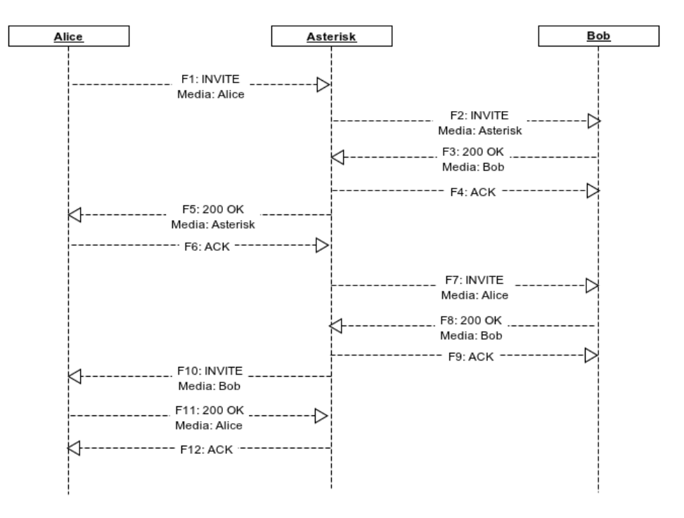
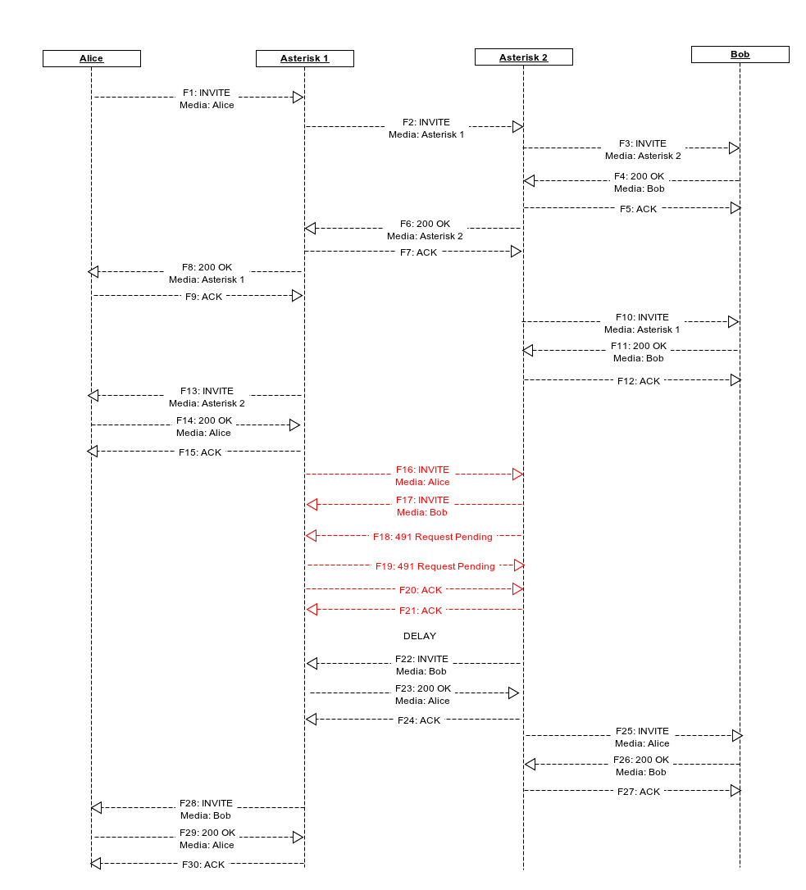
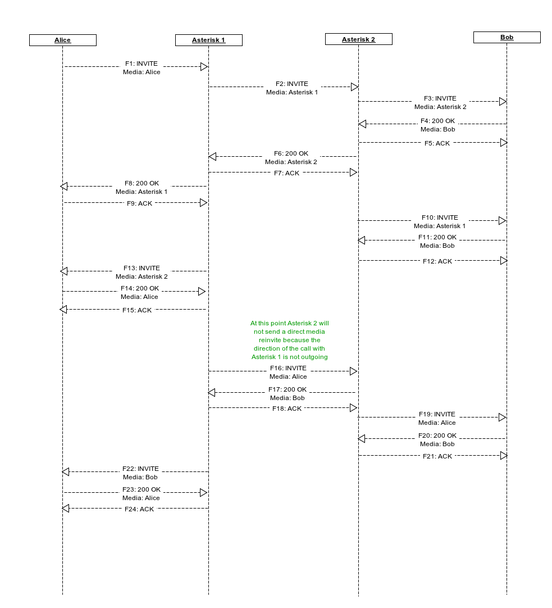
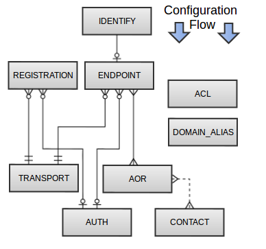
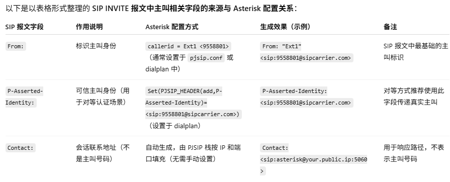
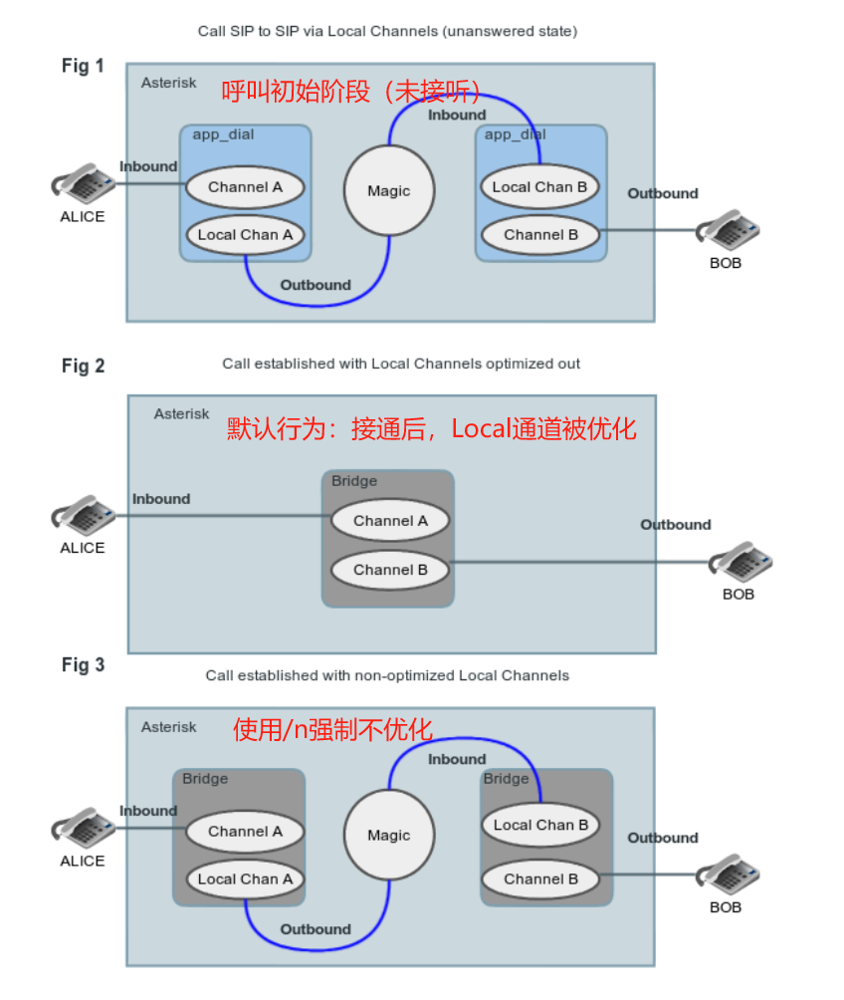
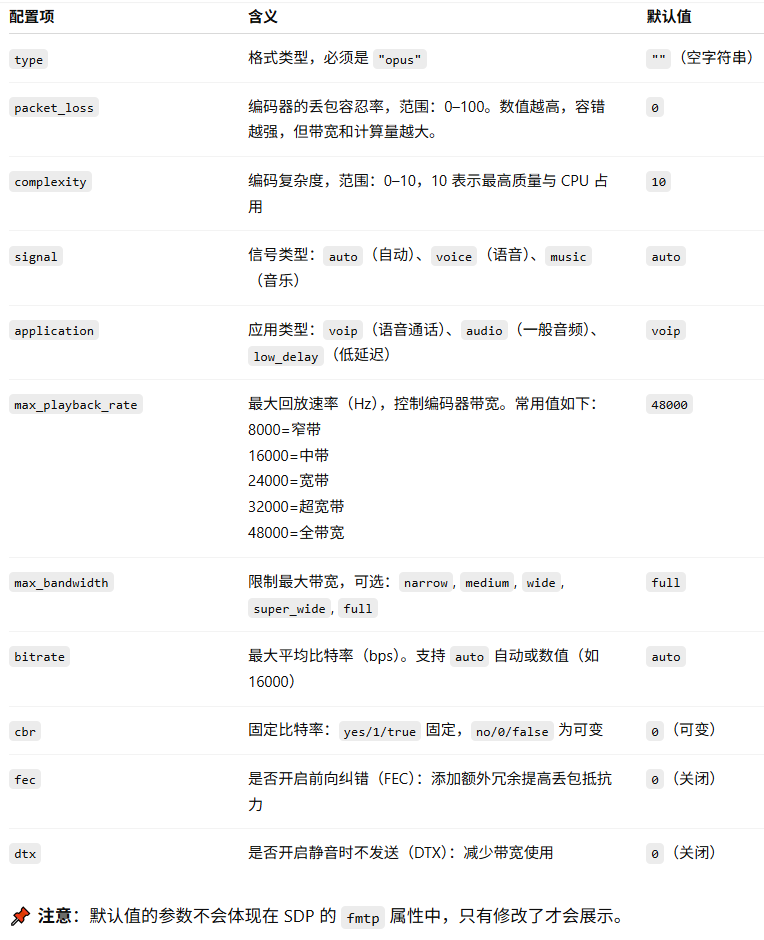

第五章 配置（Configuration）¶
1. Core Configuration 核心配置¶
1. Asterisk Main Configuration File 主配置¶
1. 文件概述¶
asterisk.conf 是 Asterisk 的主配置文件，用于指定系统路径、运行参数、权限、调试行为等。它在 Asterisk 启动阶段即被解析，优先级高于其他 .conf 文件（如 sip.conf, extensions.conf 等模块配置文件）。asterisk.conf is used to configure the locations of directories and files used by Asterisk, as well as options relevant to the core of Asterisk.
示例样本 to the asterisk.conf.sample file in the Asterisk trunk subversion repo. The information below could become out of date, so always check the relevant sample file in our version control system.
2. [directories] 段：路径控制核心¶
[directories]
astetcdir => /etc/asterisk ; 配置文件目录
astmoddir => /usr/lib/asterisk/modules ; 动态模块目录
astvarlibdir => /var/lib/asterisk ; 数据/语音提示目录
astdbdir => /var/lib/asterisk ; AstDB（键值数据库）
astkeydir => /var/lib/asterisk ; 加密密钥存储
astdatadir => /var/lib/asterisk ; 通用数据目录
astagidir => /var/lib/asterisk/agi-bin ; AGI 脚本路径
astspooldir => /var/spool/asterisk ; 语音信箱、呼叫文件等队列目录
astrundir => /var/run/asterisk ; PID 文件与 CLI 管道
astlogdir => /var/log/asterisk ; 日志目录
astsbindir => /usr/sbin ; 安装二进制命令路径
实践建议：
- 确保 asterisk 用户对上述目录有写权限
- 在容器或沙箱部署中，可以通过修改这些路径实现全局路径隔离
3. [options] 段：运行时行为控制¶
此段用于配置 Asterisk 守护进程的运行方式，对调试、性能、安全有重要影响。
Some additional annotation for each configuration option is included inline.
核心参数解析（按功能分类）：
- 调试/日志级别
verbose = 3 ; CLI 详细等级（等同于 -v）
debug = 3 ; 调试等级（等同于 -d）
timestamp = yes ; 是否在 CLI 输出中带时间戳
nocolor = no ; 是否禁用彩色 CLI
- 运行方式控制
nofork = yes ; 前台运行（调试用）
alwaysfork = no ; 永远后台运行（忽略 CLI）
console = yes ; 以控制台模式启动（-c）
quiet = no ; 静默启动
highpriority = yes ; 设置较高进程优先级（影响实时响应）
initcrypto = yes ; 启动时初始化加密模块（如 SRTP）
- 安全与资源限制
runuser = asterisk
rungroup = asterisk
maxload = 1.5 ; 当系统 load 超过此值时拒绝新呼叫
maxcalls = 255 ; 最大并发呼叫数
minmemfree = 256 ; 空闲内存不足时停止接受呼叫（MB）
- 音频/录音优化
cache_record_files = yes
record_cache_dir = /tmp
transcode_via_sln = yes
transmit_silence_during_record = yes
- 其他选项
internal_timing = yes ; 使用内建定时器模块（替代 dahdi）
execincludes = yes ; 是否启用 #exec 包含配置
systemname = pbx01 ; 系统名，影响 CDR 唯一 ID
languageprefix = no ; 是否将语言放在文件名前缀
lockmode = lockfile ; 邮件锁模式（flock 用于 SMB 共享）
4. [files] 段：CLI 通道权限配置¶
控制 Asterisk 运行后创建的 CLI 控制通道 /var/run/asterisk/asterisk.ctl 的权限：
适用于：
- 控制哪些用户可以运行 asterisk -r 或 asterisk -rx
- 防止非授权用户连接 CLI 接口
5. 与其他配置的关系¶
- 你必须在启动参数中指定 asterisk.conf 的位置，否则默认从 /etc/asterisk/ 加载
- CLI 命令 core show settings 可以查看当前所有运行参数
- 与 modules.conf, logger.conf, extensions.conf 等构成核心配置体系
6. 小结¶
实战部署建议（Debian + Asterisk 22）
| 建议项 | 值 |
|---|---|
| 启用 internal_timing | yes（避免依赖 DAHDI） |
| CLI 使用颜色 | nocolor = no |
| 生产限制 | maxload = 1.5、maxcalls = 100 |
| 设置 runuser/rungroup | asterisk，确保 /etc/passwd 有此用户 |
| logdir 权限 | chown -R asterisk:asterisk /var/log/asterisk |
调试技巧
| CLI 命令 | 功能 |
|---|---|
| core show settings | 展示当前运行配置（含路径、线程、限制等） |
| core show file settings | 展示 CLI 文件控制权限 |
| logger reload | 重新加载日志配置 |
| core reload | 重新加载全部配置（非 asterisk.conf） |
2. Asterisk Module Loader 模块加载器配置¶
1. 概述¶
Asterisk 的大部分功能是通过**模块（modules）提供的，主程序仅负责核心逻辑。模块是 .so 类型的动态库。
As you may have learned from the Asterisk Architecture section, the majority of Asterisk's features and functionality are separated outside of the core into various **modules. Each module has distinct functionality, but sometimes relies on another module or modules.
Asterisk provides capability to automatically and manually load modules. Module load order can be configured before load-time, or modules may be loaded and unloaded during run-time.
2. 模块加载配置文件：modules.conf¶
该配置文件控制：
- 启动时是否自动加载模块
- 指定模块加载顺序
- 排除不希望加载的模块
- 设置依赖模块（无法加载则拒绝启动）
[modules]
autoload = yes ; 是否自动加载所有模块
noload = chan_oss.so ; 不加载指定模块
load = res_musiconhold.so ; 显式加载模块（仅在 autoload=no 有效）
require = res_pjsip.so ; 若未加载则直接退出
preload = res_odbc.so ; 在核心初始化前优先加载
preload-require = res_config_odbc.so ; 优先加载且为必要模块
The configuration file for Asterisk's module loader is modules.conf. The configuration consist of one large section called "modules" with possible directives configured within.There are several directives that can be used.
- autoload - When enabled, Asterisk will automatically load any modules found in the Asterisk modules directory
- preload - Used to specify individual modules to load before the Asterisk core has been initialized. Often used for realtime modules so that config files can be pushed to a backend before the dependent modules are loaded.
- require - Set a required module. If a required module does not load, then Asterisk exits with status code 2.
- preload-require - A combination of preload and require.
- noload - Do not load the specified module.
- load - Load the specified module. Typically used when autoload is set to 'no'.
指令说明
| 指令 | 功能 | 建议用途 |
|---|---|---|
| autoload | 是否自动加载全部模块 | 默认建议开启 |
| noload | 指定不加载模块 | 精简系统、禁用未使用功能 |
| load | 明确加载模块 | 搭配 autoload=no 使用 |
| require | 标记为必需模块，加载失败将中止启动 | 用于强依赖模块（如 res_pjsip.so） |
| preload | 在核心初始化前加载 | 常用于数据库支持（ODBC、realtime） |
| preload-require | 优先加载且标记为必须 | 用于确保某些模块提前加载并成功 |
[modules]
autoload = yes
; 重要模块在核心前加载
preload = res_odbc.so
preload = res_config_odbc.so
; 如果 pjsip 无法加载，拒绝启动
require = res_pjsip.so
; 禁用不需要的模块（节省资源）
noload = chan_skinny.so
noload = chan_mgcp.so
noload = app_meetme.so
3. CLI 模块管理命令（运行时）¶
Asterisk provides a few commands for managing modules at run-time. Be sure to check the current usage using the CLI help with "core show help
| 命令 | 说明 |
|---|---|
| module show | 查看当前加载的模块和状态 |
| module load |
手动加载模块 |
| module unload |
卸载模块（-f 强制，-h 危险） |
| module reload [name] | 重载模块配置（支持热加载） |
asterisk -rvvv
module show like pjsip
module unload chan_sip.so
module load res_pjsip.so
module reload res_musiconhold.so
4. 小节¶
加载顺序与依赖关系
某些模块依赖顺序敏感，例如：
- res_config_odbc 必须早于 res_pjsip，否则无法实时加载配置
- chan_pjsip 依赖多个 res_pjsip_*.so 子模块
建议通过 preload 和 require 显式控制关键模块。
实战部署建议（按功能裁剪模块）
| 目标 | 操作建议 |
|---|---|
| 最小 VoIP 系统 | 禁用所有未使用协议模块（如 chan_mgcp、chan_skinny） |
| 使用 Realtime 数据库 | preload res_odbc.so + res_config_odbc.so |
| 强制启用 pjsip | 加 require = res_pjsip.so |
| 禁止使用 chan_sip | 加 noload = chan_sip.so |
| 精简系统启动时间 | autoload=no，改用 load=... 精选加载 |
3. Asterisk CLI Configuration 命令行配置¶
1. 概述¶
Asterisk 的 CLI 是系统交互、实时调试与运维的核心接口，由**主程序提供（非模块化**），部分增强功能由 res_clialiases.so 模块实现。主要涉及以下三个配置文件：
| 文件名 | 功能 |
|---|---|
| cli.conf | 启动后自动执行 CLI 命令 |
| cli_permissions.conf | 定义用户权限及命令访问控制 |
| cli_aliases.conf | 为命令配置别名（需启用 res_clialiases.so 模块） |
With the exception of the functionality provided by the res_clialiases.so module, Asterisk's Command Line Interfaceis provided by the core. There are a few configuration files relevant to the CLI that you'll see in a default Asterisk installation. All of these should be found in the typical /etc/asterisk/ directory in a default install. The configuration of these files is trivial and examples exist in the sample files included in the source and tarballs.
2. cli.conf：启动自动执行命令¶
This file allows a listing of CLI commands to be automatically executed upon startup of Asterisk.
该文件可配置在 Asterisk 启动 CLI 后，自动执行的一组命令。例如用于：
- 启动后自动打开调试模式
- 自动切换日志等级
- 自动进入某个上下文查看状态
[cli]
startup_commands = logger rotate
startup_commands = core set verbose 3
startup_commands = sip show peers
建议用法：用于开发/调试环境初始化 CLI 行为
3. cli_permissions.conf：CLI 命令权限控制¶
Allows you to configure specific restrictions or allowances on commands for users connecting to an Asterisk console. Read through the sample file carefully before making use of it, as you could create security issues.
可为本地/远程用户配置访问的命令列表，控制谁能执行哪些命令。适用于：
- 多用户共享 CLI 时按权限分工
- 远程连接 CLI (asterisk -r) 时设定权限
- 限制 AMI 用户执行危险 CLI 命令（间接作用）
CLI 相关命令：
| 命令 | 功能 |
|---|---|
| cli check permissions |
模拟用户执行命令 |
| cli reload permissions | 重新加载权限配置 |
| cli show permissions | 查看所有用户权限配置 |
安全提醒：错误配置可能导致敏感命令被非法访问。建议只在可信环境下启用。
4. cli_aliases.conf：命令别名设置（需加载模块）¶
This file allows configuration of aliases for existing commands. For example, the 'help' command is really an alias to 'core show help'. This functionality is provided by the res_clialiases.so module. 别名功能由 res_clialiases.so 模块提供，默认不自动加载（需在 modules.conf 中添加 load = res_clialiases.so）。此配置文件允许你定义更短或易记的命令别名，例如：
5. CLI Prompt 自定义（环境变量）¶
Asterisk CLI 启动时（使用 asterisk -c 或 -rvvvvv）的提示符（prompt）默认为：asterisk*CLI>
可以通过设置环境变量 ASTERISK_PROMPT 来自定义 CLI 提示符格式。
The CLI prompt is set with the ASTERISK_PROMPT UNIX environment variable that you set from the Unix shell before starting Asterisk
You may include the following variables, that will be replaced by the current value by Asterisk:
支持的变量替换标记：
| 标记 | 含义 |
|---|---|
| %d | 当前日期（YYYY-MM-DD） |
| %t | 当前时间（HH:MM:SS） |
| %s | 系统名（来自 asterisk.conf → systemname） |
| %h / %H | 主机名（全称/短名） |
| %u / %g | 当前用户 / 用户组名 |
| %l1 / %l2 / %l3 | 系统负载（1、5、15分钟） |
| %# | 控制台模式显示 #，远程连接显示空 |
| %Cn[;n] | 颜色代码（需 ANSI 支持） |
| %% | 字面上的 % 符号 |
实用场景：
- 用于显示运行状态
- 多用户同时连接时识别终端身份
-
调试并发性能时附带负载信息
-
%d - Date (year-month-date)
- %s - Asterisk system name (from asterisk.conf)
- %h - Full hostname
- %H - Short hostname
- %t - Time
- %u - Username
- %g - Groupname
- %% - Percent sign
- %# - '#' if Asterisk is run in console mode, '' if running as remote console
- %Cn[;n] - Change terminal foreground (and optional background) color to specified A full list of colors may be found in include/asterisk/term.h
On systems which implement getloadavg(3), you may also use:
- %l1 - Load average over past minute
- %l2 - Load average over past 5 minutes
- %l3 - Load average over past 15 minutes
6. 小结¶
运维实践建议
| 场景 | 推荐配置 |
|---|---|
| 开发环境 | cli.conf 自动打开调试命令 |
| 安全控制 | cli_permissions.conf 限制敏感命令 |
| 团队运维 | 配置别名统一操作习惯（如 r=core restart now） |
| 日志归档/审计 | 设置 CLI 提示符显示时间、用户信息 |
| 生产环境 | 禁用 res_clialiases.so，防止滥用别名混淆命令记录 |
4. Logging Configuration 日志系统配置¶
1. 目的与作用¶
Asterisk 的日志系统提供以下核心功能：
- 输出调试信息、通话事件、模块状态等
- 支持多通道：控制台（console）、文件（logfiles）、syslog（远程日志）
- 可精细控制日志等级与输出格式
- 支持日志文件自动轮转与压缩
- 可集成安全审计、队列事件记录（queue_log）
配置文件路径： /etc/asterisk/logger.conf
配置结构:
General purpose[logging facilities) in Asterisk can be configured in the logger.conf file. Within this file one is able to configure Asterisk to log messages to files and/or a syslog and even to the Asterisk console. Note, the sections and descriptions listed below are meant to be informational and act as a guide (a "how to") when configuring logging in Asterisk. Options with stated defaults don't have to be explicitly set as they will simply default to a designated value.
2. [general] 段：全局日志策略¶
- 时间戳格式自定义
%F %T = yyyy-mm-dd HH:MM:SS
%3q = 毫秒（可用 %1q～%6q 控制小数位）
- 是否写入 Call-ID（默认：yes）
- 日志文件名是否附加主机名
- 队列日志（queue_log）
queue_log = yes ; 启用 queue_log 写入
queue_log_to_file = yes ; 即使有 realtime 后端仍写文件
queue_log_name = queue_log ; 自定义文件名
queue_log_realtime_use_gmt = no ; 时间戳是否使用 UTC
用于 app_queue 模块事件（排队、接通、放弃等），详见 /var/log/asterisk/queue_log
- 日志轮转策略（rotate）
```ini "
rotatestrategy = rotate
```
| 策略 | 说明 |
|---|---|
| none | 不自动轮转，需外部工具（如 logrotate） |
| rotate | 递增编号方式（新文件为 log.1, 老文件为 log.2） |
| sequential | 保留顺序（新文件序号最大） |
| timestamp | 使用时间戳命名备份文件 |
- 压缩策略（配合 rotate 使用）
ini "
exec_after_rotate = gzip -9 ${filename}.2 ;表示：当日志文件命名为 .2 时，自动压缩为 .gz（节省磁盘空间）
3. [logfiles] 段：输出目标与日志等级控制¶
可定义的输出目标
| 目标名 | 说明 |
|---|---|
| console | 输出到 Asterisk 控制台 |
| syslog.local0 | 输出到系统 syslog（可自定义 facility） |
| 任意名称（如 full, messages） | 输出为文件，路径在 asterisk.conf → astlogdir 指定 |
可指定的日志等级（多个以逗号分隔）
| 等级 | 说明 |
|---|---|
| debug | 模块调试信息，内容最多（慎用） |
| notice | 一般提示 |
| warning | 警告信息 |
| error | 错误信息 |
| security | 安全事件（如登录失败、ACL 拒绝） |
| verbose | CLI 输出（等级可控，如 verbose(3)） |
| dtmf | 按键事件（DTMF） |
| fax | 传真相关事件 |
| * | 所有等级，包括动态模块定义的日志等级 |
[logfiles]
; 控制台只显示关键信息
console => notice,warning,error
; 日志文件 messages 记录关键日志
messages => notice,warning,error
; full 文件包含完整日志内容
full => notice,warning,error,verbose,dtmf,fax
; security 文件用于审计敏感事件
security => security
; 发送关键日志到 syslog
syslog.local0 => notice,warning,error
4. 运行时日志管理命令（CLI）¶
| 命令 | 功能 |
|---|---|
| logger reload | 重新加载 logger.conf 配置 |
| logger rotate | 手动执行日志轮转 |
| core set verbose N | 设置 CLI 输出详细等级（1~5 常用） |
| core set debug N | 设置 debug 等级（用于模块调试） |
5. 安全建议与运维实践¶
| 建议 | 操作 |
|---|---|
| 生产环境禁用 debug | 移除或注释 debug 级别 |
| 使用 full 文件调试 | 开启 verbose, dtmf, fax 日志 |
| 设置 logrotate | /etc/logrotate.d/asterisk 自动归档压缩日志 |
| 使用 syslog 集中日志 | 配合 ELK/Graylog 做可视化监控 |
| queue_log 独立处理 | 分析客户服务通话队列行为 |
[general]
dateformat = %F %T.%3q
use_callids = yes
appendhostname = yes
rotatestrategy = rotate
exec_after_rotate = gzip -9 ${filename}.2
[logfiles]
console => notice,warning,error
messages => notice,warning,error
full => notice,warning,error,verbose(3)
security => security
5. Named ACLs 命名访问控制列表配置¶
1. 什么是 Named ACLs？¶
Named ACL（命名访问控制列表）是 Asterisk 的一种集中式、可复用的 **IP 访问控制机**制。它相比传统的模块局部 ACL 有以下优势：
| 特性 | 优势 |
|---|---|
| 模块间可共享 | 多个组件（如 chan_sip, chan_pjsip, manager）可复用同一 ACL |
| 支持动态更新 | 可通过 ARA（Realtime）在运行时更新 |
| 支持 IPv4/IPv6 | 与传统 ACL 一致支持 CIDR/IPV6 |
| 支持模板继承 | 简化大型部署的配置管理 |
| 支持优雅 reload | reload ACL 即可自动更新所有关联模块 |
Named ACLs introduce a new way to define Access Control Lists (ACLs) in Asterisk. Unlike traditional ACLs defined in specific module configuration files, Named ACLs can be shared across multiple modules. Named ACLs can also be accessed via the Asterisk Realtime Architecture (ARA), allowing for run-time updates of ACL information that can be retrieved by multiple consumers of ACL information.
2. 配置文件：acl.conf¶
Named ACLs can be defined statically in acl.conf. Each context in acl.conf defines a specific Named ACL, where the name of the context is the name of the ACL. The syntax for each context follows the permit/deny nomenclature used in traditional ACLs defined in a consumer module's configuration file.
| Option | Value | Description |
|---|---|---|
| deny | IP address [/Mask] | An IP address to deny, with an optional subnet mask to apply |
| permit | IP address [/Mask] | An IP address to allow, with an optional subnet mask to apply |
On This Page
Multiple rules can be specified in an ACL as well by chaining deny/permit specifiers.
3. 高级配置：模板与继承¶
Named ACLs support common modifiers like templates and additions within configuration as well.
[template_deny_all](!)
deny=0.0.0.0/0.0.0.0
[deny_all_whitelist_these](template_deny_all)
permit=10.24.20.1
permit=10.24.20.2
permit=10.24.20.3
这样可以轻松统一定义“拒绝所有 + 放行特定”策略，适用于高安全环境。
4. 支持 IPv6 ACL¶
Named ACLs can use ipv6 addresses just like normal ACLs.
[ipv6_example_1]
deny = ::/0
permit = ::1/128
[ipv6_example_2]
permit = fe80::21d:bad:fad:2323
5. ARA 动态后端支持（Realtime）¶
你可以将 Named ACL 定义在数据库中，通过 ARA 加载，便于动态添加或撤销 IP 授权。The ARA supports Named ACLs using the 'acls' keyword in extconfig.conf.
CREATE TABLE acltable (
name varchar(80) NOT NULL,
rule_order integer NOT NULL,
sense varchar(6) NOT NULL, -- 'permit' or 'deny'
rule varchar(95) NOT NULL, -- IP/CIDR
PRIMARY KEY (name, rule_order, rule, sense)
);
注意：如果模块本身（如 SIP 用户）也是 Realtime 加载，ACL 也需来自 Realtime 才能实时生效。
6. 模块引用 Named ACL 的方式¶
Named ACL 被以下模块支持：
- chan_sip / chan_pjsip
- chan_iax2
- manager（AMI）
- 更多未来扩展模块
Named ACLs are supported by the following Asterisk components:
- Manager (IPv4 and IPv6)
- chan_sip (IPv4 and IPv6)
- chan_pjsip (IPv4 and IPv6)
- chan_iax2 (IPv4 and IPv6)
A consumer of Named ACLs can be configured to use a named ACL using the acl option in their ACL access rules. This can be in addition to the ACL rules traditionally defined in those configuration files.
[peer1]
type=friend
acl=acl_internal_users ;支持单个ACL
acl=acl_office,acl_vpn_users ;或支持多个ACL
7. ACL 判断逻辑（多条 ACL 混用）¶
当你定义多个 ACL 时：
- 所有 ACL 必须全部通过，否则访问被拒绝
- 即 ACL 之间是 AND 逻辑
举例：若 acl=acl_main,acl_branch，则某 IP 必须在两者都允许的范围中才能访问。
Each module consumer of ACL information maintains, for each object that uses the information, a list of the defined ACL rule sets that apply to that object. When an address is evaluated for the particular object, the address is evaluated against each rule. For an address to pass the ACL rules, it must pass each ACL rule set that was defined for that object. Failure of any ACL rule set will result in a rejection of the address.
8. Reload 行为（注意影响）¶
Named ACL 信息默认在**模块加载时缓存**，所以：
- 若 ACL 来自文件，需执行 module reload 或重启相关模块
- 若 ACL 来自数据库，**模块必须也是实时读取（Realtime）**才能自动同步
ACL information is static once a consumer module references that information. Hence, changes in ACL information in an ARA backend will not automatically update consumers of that information. In order for consumers to receive updated ACL information, the Named ACL component must be reloaded.
The Named ACL component supports module reloads, in the same way as other Asterisk components. When the Named ACL component is reloaded, it will issue a request to all consumers of Named ACLs. Those consumer modules will also be automatically reloaded.
Warning
This implies that reloading the Named ACL component will force a reload of manager, chan_sip, etc. Only reload the Named ACL component if you want all consumers of that information to be reloaded as well.
Reload 命令（推荐）：module reload acl
此操作会：触发所有使用 Named ACL 的模块（如 chan_sip, manager, chan_pjsip）自动 reload！
注意：请勿在高负载生产中频繁 reload，会导致中断或状态重置。
9. 小结¶
使用建议（安全最佳实践）
| 场景 | 建议做法 |
|---|---|
| 统一控制多模块访问 | 使用 Named ACL，集中维护 |
| 多网段权限控制 | 使用继承模板组合 deny/permit |
| 动态维护 ACL（如远程开通） | 使用 ARA + 数据库方式管理 |
| SIP/AMI 安全策略 | 配置 acl 字段替代直接使用 permit/deny |
| reload 最小化 | 使用 realtime 模块 + 高优先级 reload 控制 |
示例总结（全链路）
[trusted_networks]
permit = 192.168.0.0/24
permit = 10.10.10.10
deny = 0.0.0.0/0
6. Alternate Channel Storage Backends 可替换的通道存储后端机制¶
1. 背景说明：为什么要替换默认存储结构？¶
Asterisk 中的每一个通话通道（channel）在运行时都由 channels.c 管理，通过AO2 hash 容器存储所有活跃通道。但默认实现存在严重问题：
| 问题类型 | 描述 |
|---|---|
| 🧱 性能瓶颈 | 超过几百通道后，查询速度急剧下降 |
| 🔐 死锁风险 | channels 容器是全局互斥锁（mutex），线程间锁竞争严重 |
| 🔄 查询低效 | 除“通道名精确匹配”外的查询均为线性遍历（O(n)） |
| ⚠️ 锁混乱 | 大量函数会递归上锁 channel，导致难以避免死锁 |
这些问题在高并发环境下会放大，尤其在使用 AMI、桥接、转接等操作时，系统稳定性下降明显。
新机制：可配置存储后端（从 Asterisk 22 起）
通过构建时选择模块，Asterisk 支持使用 C++ 实现的多索引存储结构，显著优化性能。
| 后端 | 描述 |
|---|---|
| ao2_legacy | 默认使用，基于老旧的 AO2 哈希表，仅以名称为索引 |
| cpp_map_name_id | 使用 2 个 C++ std::map，分别索引 name 和 uniqueid，推荐 |
2. 注意事项与部署建议¶
建议使用场景：
- 超过 200 并发通话（或 ≥ 2000 呼叫并发处理）
- 经常使用 AMI、Dialplan 函数等搜索通道的操作
- 存在复杂的 Call Parking / REFER / Queues 场景
- 死锁频繁出现或系统频繁 CPU 飙升
风险控制建议：
| 项 | 建议 |
|---|---|
| 生产系统部署前 | 先在测试环境模拟真实负载，压测验证 |
| 多节点环境 | 分批启用（slow roll-out），避免全线崩溃 |
| 仅启用一个节点观察行为 | 检查日志死锁是否减少、通话是否稳定 |
| 定期使用 core show locks | 观察死锁情况是否好转 |
3. 小结：POC 后端对比总结¶
| 排名 | 后端 | 说明 |
|---|---|---|
| 🥇 1st | cpp_map_name_id | 性能全面领先，推荐使用 |
| 🥈 2nd | sqlite3（内存） | 查询快，插入略慢，适合高级自定义 |
| 🥉 3rd-6th | Boost / AO2 | 结构复杂、无序、性能退化明显 |
| 🏁 最末 | Boost Multi-Index | 写入过慢，无法用于部署 |
7. Asterisk Builtin mini-HTTP Server 内建HTTP服务配置¶
1. 功能概述¶
Asterisk 内建了一个轻量级的 HTTP/HTTPS 服务，用于支持以下高级功能模块：
| 依赖模块 | 功能说明 |
|---|---|
| ARI（Asterisk REST Interface） | 提供 RESTful 接口以构建 Web 语音控制应用 |
| AMI over HTTP | 使用 HTTP/WS 传输 AMI 消息（适配 Web 前端） |
| WebSocket 支持 | 支持 SIP over WebSocket，用于 WebRTC 终端 |
| 其他应用 | 如 http AMI events，语音流实时推送等 |
该服务不是面向 Web 页面，而是用于API 层级的协议支持。
配置文件路径： /etc/asterisk/http.conf 。 建议配合版本目录中的 http.conf.sample 参考使用。
2. 基础配置结构¶
[general]
enabled = yes ; 启用 HTTP 服务
bindaddr = 0.0.0.0 ; 监听所有 IP
bindport = 8088 ; 使用端口 8088（默认）
解释说明：
enabled = yes：启用 mini-HTTP 服务
bindaddr 可设置为：
- 127.0.0.1（仅本地访问）
- 192.168.x.x（仅内网）
- 0.0.0.0（监听所有接口，⚠️注意安全）
bindport 为 HTTP 端口，可设为 8088, 8000, 8888 等不冲突端口
HTTPS 支持（可选）
tlsenable = yes
tlsbindaddr = 0.0.0.0:8089
tlscertfile = /etc/asterisk/keys/asterisk.pem
tlsprivatekey = /etc/asterisk/keys/asterisk.key
| 参数 | 说明 |
|---|---|
| tlsenable | 是否启用 HTTPS |
| tlsbindaddr | TLS 服务监听地址与端口 |
| tlscertfile | 公钥证书路径 |
| tlsprivatekey | 私钥路径（需与证书匹配） |
证书可以使用 OpenSSL 创建自签名证书进行测试。
3. HTTP 服务的使用场景¶
| 场景 | 依赖 |
|---|---|
| WebRTC 客户端注册 SIP | chan_pjsip + transport=ws/wss |
| 使用 ARI 控制呼叫流程 | 需要 HTTP 服务开放 |
| 浏览器接收实时 AMI 事件 | res_http_ami.so 模块 |
| 使用外部 Web 服务控制 Asterisk | ARI + 自定义业务逻辑层 |
4. 启动后测试 HTTP 服务¶
如果配置成功，会看到当前 HTTP 模块状态。
5. 小结¶
配置技巧与建议
| 目标 | 建议 |
|---|---|
| 仅开发使用 | bindaddr=127.0.0.1（避免公网暴露） |
| 多用户 WebRTC 注册 | 开启 transport=ws，监听 8088/8089 |
| API 层级安全控制 | 配合 http.conf + acl.conf 设置 IP 白名单 |
| 性能优化 | 仅启用所需模块，如 res_http_websocket.so、res_ari.so |
配套模块（需在 modules.conf 中启用）
确保以下模块已加载：
| 模块 | 作用 |
|---|---|
| res_http_websocket.so | 支持 WebSocket 传输 |
| res_ari.so | 提供 ARI 基础服务 |
| res_ari_modules.so | ARI 功能扩展 |
| res_http_ami.so | HTTP 访问 AMI |
在 modules.conf 中确保：
安全建议
| 问题 | 建议 |
|---|---|
| HTTP 监听 0.0.0.0 | 建议仅在可信内网使用或配 ACL 控制 |
| 明文传输密码/API | 建议启用 TLS 并使用 HTTPS |
| 未配置认证机制 | 配合 ARI 使用 ari.conf 设置用户名/密码 |
| 资源暴露过多 | 精选加载模块，避免暴露无用接口 |
[general]
enabled = yes
bindaddr = 127.0.0.1
bindport = 8088
prefix = /ari
tlsenable = yes
tlsbindaddr = 0.0.0.0:8089
tlscertfile = /etc/asterisk/keys/asterisk.pem
tlsprivatekey = /etc/asterisk/keys/asterisk.key
8. Configuring Localized Tone Indications 本地化拨号音/信号音配置¶
1. 功能概述¶
Asterisk 可在多种场景中自行生成信令音（tone indications），例如：
| 场景 | 使用方式 |
|---|---|
| 拨号提示音（Dial tone） | 用户摘机后提示音 |
| 占线音（Busy tone） | 对方占线 |
| 拨号失败提示音（Congestion） | 路由失败或网络拥堵 |
| 铃声节奏（Ring cadence） | 提示来电节奏 |
| Call Waiting 提示音 | 有新来电插入当前通话 |
| 通话录音提示音 | 播放录音中音调（若启用） |
这些音调**与电话系统所在国家密切相关**，Asterisk 允许你为不同国家设置独立音调模板。
In certain cases Asterisk will generate tones to be used in call signaling. It may be during the use of a specific application, or with certain channel drivers. The tones used are configurable and may be defined by location.
Note that the tones configured here are only used when Asterisk is directly generating the tones.
2. 配置文件：indications.conf¶
The configuration file for location specific tone indications is indications.conf.
配置结构
由两个部分组成：
- [general] — 设置默认国家（即默认 tone set）
- [
] — 每个国家或地区的音调定义（如 [us], [br], [uk]）
The configuration itself consists of a 'general' section and then one or more country specific sections. (e.g. '[au]' for Australia)
Within the general section, only the country option can be set. This option sets the default location tone set to be used.
该配置表示，系统默认使用美国的音调标准（用于未指定国家的通道或呼叫）。As an example, the above set the default country to the tone set for the USA.
每个 [country_code] 段落中可定义以下项：
| 配置项 | 说明 |
|---|---|
| description | 国家/地区全名（用于注释） |
| ringcadence | 铃声节奏（单位：ms，铃响/静音） |
| dial | 拨号音频率（如摘机音） |
| busy | 占线音（拨号失败） |
| congestion | 拥塞音（路由失败、异常） |
| ring | 来电铃声 |
| callwaiting | 呼叫等待提示音 |
| dialrecall | 挂机/闪断后重新拨号音（不常用） |
| record | 通话录音中提示音 |
| info | 特殊信息提示音（号码无效等） |
| stutter | 含有语音留言提示的拨号音 |
| 其他自定义名称 | 可作为 PlayTones() 命令的快捷调用项 |
Within any location specific configuration, several tone types may be configured.
- description = string ; The full name of your country, in English.
- ringcadence = num[,num]* ; List of durations the physical bell rings.
- dial = tonelist ; Set of tones to be played when one picks up the hook.
- busy = tonelist ; Set of tones played when the receiving end is busy.
- congestion = tonelist ; Set of tones played when there is some congestion (on the network?)
- callwaiting = tonelist ; Set of tones played when there is a call waiting in the background.
- dialrecall = tonelist ; Not well defined; many phone systems play a recall dial tone after hook flash
- record = tonelist ; Set of tones played when call recording is in progress.
- info = tonelist ; Set of tones played with special information messages (e.g., "number is out of service")
- 'name' = tonelist ; Every other variable will be available as a shortcut for the "PlayList" command but will not be used automatically by Asterisk.
3. Tonelist 音调语法说明¶
每个音调字段是一个**音调序列（tonelist)**，由若干“元素（element）”组成:
element = [!]freq[+|*freq2][/duration]
| 项目 | 说明 |
|---|---|
| freq | 主频率（Hz） |
| +freq2 | 混合双音 |
| *freq2 | 调制双音 |
| /duration | 持续时长（毫秒） |
多个元素之间用逗号 , 分隔，形成一个循环播放的序列。
; The tonelist itself is defined by a comma-separated sequence of elements.
; Each element consist of a frequency (f) with an optional duration (in ms)
; attached to it (f/duration). The frequency component may be a mixture of two
; frequencies (f1+f2) or a frequency modulated by another frequency (f1*f2).
; The implicit modulation depth is fixed at 90%, though.
; If the list element starts with a !, that element is NOT repeated,
; therefore, only if all elements start with !, the tonelist is time-limited,
; all others will repeat indefinitely.
;
; concisely:
; element = [!]freq[+|*freq2][/duration]
; tonelist = element[,element]*
表示：
- 播放 425 Hz 音调 250ms
- 静音 250ms
- 重复循环
[br]
description = Brazil
ringcadence = 1000,4000 ； ringcadence：响铃 1 秒，静音 4 秒，形成节奏
dial = 425
busy = 425/250,0/250
ring = 425/1000,0/4000
congestion = 425/250,0/250,425/750,0/250
callwaiting = 425/50,0/1000
; Dialrecall not used in Brazil standard (using UK standard)
dialrecall = 350+440
; Record tone is not used in Brazil, use busy tone
record = 425/250,0/250
; Info not used in Brazil standard (using UK standard)
info = 950/330,1400/330,1800/330
stutter = 350+440
4. 验证与调用方式¶
验证生效国家设置: asterisk -rx "indication show countries"
查看当前支持的所有国家和加载情况: asterisk -rx "core show settings" | grep Tone
exten => 100,1,Answer()
same => n,PlayTones(dial)
same => n,Wait(3)
same => n,StopPlayTones()
same => n,Hangup()
;也可以调用自定义名称，如：
[mytones] ;indications.conf
mystart = 440+480/500,0/500
same => n,PlayTones(mystart) ;Dialplan
5. 小结¶
自定义 Tone 用法场景
| 业务需求 | 配置建议 |
|---|---|
| 区域定制化体验（如南美、亚洲等） | 指定 country=xx 并创建新段 [xx] |
| SIP 来电显示本地铃声节奏 | 配置 ring 与 ringcadence |
| WebRTC 客户端提示音 | PlayTones() 与浏览器配合 |
| 语音导航系统错误提示 | 使用 info 音调配合语音播放 |
总结推荐实践
| 步骤 | 操作 |
|---|---|
| 设置默认国家音调 | indications.conf → [general] → country=xx |
| 自定义国家段 | [cn], [de], [jp] 等 |
| 验证是否生效 | 使用 CLI 命令或日志确认 |
| Dialplan 中调用 | PlayTones() + StopPlayTones() 控制播放 |
| 支持 WebRTC/Web 接入音调统一 | 建议与 chan_pjsip/ARI 一致化使用音调规范 |
9. Timing Interfaces 定时器接口配置¶
1. 背景¶
在 Asterisk 的运行过程中，部分功能依赖内部定时机制来保持：
- 音频数据播放的同步性
- 没有音频输入时仍保持输出
- 支持 IAX2 trunk 中继等内部同步
- 会议桥、播放文件、提示音等的稳定输出
早期（如 Asterisk 1.4）只依赖 DAHDI（旧称 Zaptel）提供 timing。自 1.6.1+ 引入可插拔 Timing API 后，Asterisk 支持多种定时后端。
2. 支持的 Timing 模块¶
| 模块名 | 平台 | 优先级 | 说明 |
|---|---|---|---|
| res_timing_timerfd.so | Linux ≥2.6.25 | 🥇最高 | 使用内核 timerfd，效率最优 |
| res_timing_kqueue.so | BSD, macOS | 🥈 | 基于 FreeBSD kqueue |
| res_timing_dahdi.so | Linux + DAHDI | 🥉 | DAHDI 提供的硬件/软件定时 |
| res_timing_pthread.so | 所有平台 | 最低 | 使用 POSIX 线程模拟，效率低 |
res_timing_timerfd
- Linux 2.6.25+ 内核新增 timerfd 接口
- 使用内核原生事件通知，效率非常高
- 是现代 Linux 上默认推荐的 Timing 模块
适用场景：Debian 7+/Ubuntu 12.04+/CentOS 7+ 系统中默认首选
3. Timing 的作用场景¶
| 功能 | 是否依赖 Timing |
|---|---|
| IAX2 Trunk | ✅ 强依赖 |
| ConfBridge 会议桥 | ✅（但不依赖 DAHDI） |
| MeetMe 会议桥 | ✅ 且必须使用 DAHDI |
| Playback 播放音频 | ✅ 若无来电媒体输入 |
| 音频生成（如语音提示） | ✅ |
| 单向语音/空闲通道 | ✅ 依赖定时器保持同步 |
若无内部 timing，而又无 RTP 输入帧，播放音频将 中断或无声。
2. Dialplan 拨号计划¶
Dialplan（拨号计划）是 Asterisk 的专属脚本语言，用于控制来电、去电的行为逻辑。它定义了：
- 呼叫如何路由
- 播放什么提示音
- 怎样接入语音信箱
- 如何转接或挂断
- 如何调用外部脚本（如 AGI、数据库）
Dialplan 是 Asterisk 系统的“决策大脑”，也是最核心的配置之一。
The dialplan is essentially a scripting language specific to Asterisk and one of the primary ways of instructing Asterisk on how to behave. It ties everything together, allowing you to route and manipulate calls in a programmatic way. The pages in this section will describe what the elements of dialplan are and how to use them in your configuration.
The Asterisk dialplan is found in the extensions.conf file in the configuration directory, typically /etc/asterisk.
If you modify the dialplan, you can use the Asterisk CLI command "dialplan reload" to load the new dialplan without disrupting service in your PBX.
1. Contexts, Extensions, and Priorities¶
The dialplan in extensions.conf is organized into sections, called contexts. Contexts are the basic organizational unit within the dialplan, and as such, they keep different sections of the dialplan independent from each other. You can use contexts to separate out functionality and features, enforce security boundaries between the various parts of our dialplan, as well as to provide different classes of service to groups of users.
1. Context（上下文）¶
Dialplan 的组织单位，用于隔离逻辑与权限。类似于“作用域”或“命名空间”。
The syntax for a context is exactly the same as any other section heading in the configuration files. Simply place the context name in square brackets. For example, here we define an example context called 'users'.
通常，分机注册时指定 context，决定它能拨打哪些号码。
2. Extension（分机）¶
Asterisk 中的“分机”并不总是实际设备，它表示一个**逻辑入口点**，可以是号码、关键词、通配符。
Within each context, we can define one or more extensions. An extension is simply a named set of actions. Asterisk will perform each action, in sequence, when that extension number is dialed. The syntax for an extension is:
Let's look at an example extension.
- 6001 是 extension
- 1 是优先级（priority）
- Dial(...) 是要执行的应用程序
In this case, the extension number is 6001, the priority number is 1, the application is Dial(), and the two parameters to the application are PJSIP/demo-alice and 20.
3. Priority（优先级）¶
执行顺序编号，必须从 1 开始。可以用 n 表示“下一步”，无需手动编号。Within each extension, there must be one or more priorities. A priority is simply a sequence number. The first priority on an extension is executed first. When it finishes, the second priority is executed, and so forth.
如果某个 priority 缺失（如跳过 2），Asterisk 会中止执行。In this case, Asterisk would execute priorities one and two, but would then terminate the call, because it couldn't find priority number three.
Priority numbers can also be simplified by using the letter n in place of the priority numbers greater than one. The letter n stands for next, and when Asterisk sees priority n it replaces it in memory with the previous priority number plus one. Note that you must still explicitly declare priority number one.
///note
Every time an extension and priority is executed Asterisk searches for the next best match in priority sequence.
///
Consider the dialplan below.
It may not be immediately intuitive, but the "_.!" extension with the "n" priority will be executed after any of the preceding lines are executed.
You'll notice that each priority is calling a dialplan application (such as NoOp, or Verbose in the example above). That is how we tell Asterisk to "do something" with the channel that is executing dialplan.
4. Priority Label（标签）¶
给某个 priority 加上标记，便于跳转。You can also assign a label (or alias) to a particular priority number by placing the label in parentheses directly after the priority number, as shown below. Labels make it easier to jump back to a particular location within the extension at a later time.
Here, we've assigned a label named repeat to the second priority.
5. same => 简化语法¶
不重复写 exten =>，提高可读性。Included in the Asterisk 1.6.2 branch (and later) there is a way to avoid having to repeat the extension name/number or pattern using the same => prefix.
6. Dialplan 搜索顺序¶
Asterisk 在 context 内查找可匹配 extension 的顺序如下：
- 完全匹配（exact match）：如 exten => 1234
- 模式匹配（pattern match）：如 exten => _1XXX
- 包含上下文（include）：跨 context 查找
- switch 语句：动态从数据库/外部查询
include 是“逻辑引入”，不会打乱搜索优先级。
The order of matching within a context is always exact extensions,[pattern match extensions, include statements, and switch statements. Includes are always processed depth-first. So for example, if you would like a switch "A" to match before context "B", simply put switch "A" in an included context "C", where "C" is included in your original context before "B".
Search order:
- Explicit extensions
- Pattern match extensions
- Includes
- Switches
7. 小结¶
[from-internal]
exten => 100,1,Answer()
same => n,Wait(1)
same => n,Playback(hello-world) ;100：本地播放提示
same => n,Hangup()
exten => _9X.,1,Dial(PJSIP/${EXTEN:1}@trunk) ;_9X.：拨打外线（去掉前缀 9）
常见误区
| 误区 | 正确认知 |
|---|---|
| Dialplan 和实际电话机号码一样？ | Not always。它是逻辑路由名称 |
| n 不能跳过 priority？ | n 自动+1，但不要跳号手写 |
| 所有 context 都能自动访问？ | 必须 include 才能跨 context 调用 |
建议
| 操作 | 建议 |
|---|---|
| 开始写 Dialplan | 用 context 分隔业务逻辑 |
| 编写规则 | 从 exten => xxx,1,... 开始，后续用 n |
| 调试 | 用 NoOp() 或 Verbose() 输出中间状态 |
| 生效配置 | 使用 dialplan reload 或 CLI 热加载 |
| 结构优化 | 合理使用 include 与 priority label |
2. Pattern Matching 模式匹配¶
1. 什么是模式匹配？¶
在 Asterisk 中，为每个可能的号码写一条 exten => 显然不现实。模式匹配允许你通过通配符和字符集，定义一组可以匹配的号码模式，而不是穷举。
✅ 节省配置行数
✅ 增强通话路由灵活性
⚠️ 但也更容易引发安全问题（后面详述）
The next concept we'll cover is called pattern matching. Pattern matching allows us to create extension patterns in our dialplan that match more than one possible dialed number. Pattern matching saves us from having to create an extension in the dialplan for every possible number that might be dialed.
When Alice dials a number on her phone, Asterisk first looks for an extension (in the context specified by the channel driver configuration) that matches exactly what Alice dialed. If there's no exact match, Asterisk then looks for a pattern that matches. After we show the syntax and some basic examples of pattern matching, we'll explain how Asterisk finds the best match if there are two or more patterns which match the dialed number.
2. 基本语法规则¶
- 所有模式必须以 _（下划线）开头
- 模式字符代表不同的数字范围或行为：
Pattern matches always begin with an underscore. This is how Asterisk recognizes that the extension is a pattern and not just an extension with a funny name. Within the pattern, we use various letters and characters to represent sets or ranges of numbers. Here are the most common letters:
| 符号 | 含义 |
|---|---|
| X | 匹配任意数字 0–9 |
| Z | 匹配 1–9 |
| N | 匹配 2–9 |
| [1-4] | 匹配 1 至 4 中的任意一个字符 |
| . | 匹配一个或多个任意字符（不限长度） |
| ! | 匹配零个或多个任意字符（适用于 overlap dialing） |
使用字符集（Character Sets）
Lets use some Character Sets and Wildcards
exten => _6[34]XX,1,Playback(demo)
; 第二位数字只允许是 3 或 4
;匹配如：6300, 6401
exten => _6[1-57-9]XX,1,Playback(demo)
; 第二位数字匹配 15 或 79，不包括 6
exten => _9.,1,Dial(SIP/${EXTEN:1}@trunk)
; 匹配所有以 9 开头的号码，长度不定，至少一位
; 常用于外拨号码，去掉前缀 9
exten => _9!,1,Dial(SIP/${EXTEN:1}@trunk)
; 匹配所有以 9 开头的号码，包括只有 9 也匹配
; 实时匹配用于 overlap dialing（如欧洲拨号方案）
exten => _64X[4-9],1,SayDigits(${EXTEN})
exten => _[6-4]4[4-9],1,SayDigits(${EXTEN})
exten => _64.,1,SayDigits(${EXTEN})
The first example: The first must be a six, the second digit must be a four, the third digit can be anything from zero to nine, and the fourth digit must be between four and nine
The second example: The first digit must be between six and four, the second digit must be four, the third digit must be between four and nine
The third example: The first digit must be a six, the second digit must be a four, the third digit can be anything at all (including letters), and we will continue to collect digits until the user stops entering digits
3. 模式排序逻辑¶
当多个模式都能匹配某个号码时，Asterisk 如何选择？
Asterisk 会按如下顺序排序：
- 非模式 extension（如 1234）最优
- 匹配范围越小的模式排在前面：
1) N（8个可能）优于 X（10个可能）
2) [3-5] 优于 [1-9] - 字符集按 ASCII 排序
- . 优于 !
Now let's show what happens when there is more than one pattern that matches the dialed number. How does Asterisk know which pattern to choose as the best match?
Asterisk uses a simple set of rules to sort the extensions and patterns so that the best match is found first. The best match is simply the most specific pattern. The sorting rules are:
- The dash (-) character is ignored in extensions and patterns except when it is used in a pattern to specify a range in a character set. It has no effect in matching or sorting extensions.
- Non-pattern extensions are sorted in ASCII sort order before patterns.
- Patterns are sorted by the most constrained character set per digit first. By most constrained, we mean the pattern that has the fewest possible matches for a digit. As an example, the N character has eight possible matches (two through nine), while X has ten possible matches (zero through nine) so N sorts first.
- Character sets that have the same number of characters are sorted in ASCII sort order as if the sets were strings of the set characters. As an example, X is 0123456789 and [a-j] is abcdefghij so X sorts first. This sort ordering is important if the character sets overlap as with [0-4] and [4-8].
- The period (.) wildcard sorts after character sets.
- The exclamation mark (!) wildcard sorts after the period wildcard.
Let's look at an example to better understand how this works. Let's assume Alice dials extension 6421, and she has the following patterns in her dialplan:
exten => _6XX1,1,SayAlpha(A)
exten => _64XX,1,SayAlpha(B)
exten => _640X,1,SayAlpha(C)
exten => _6.,1,SayAlpha(D)
exten => _64NX,1,SayAlpha(E)
exten => _6[45]NX,1,SayAlpha(F)
exten => _6[34]NX,1,SayAlpha(G)
拨号号码：6421,排序后执行顺序为：
When Alice dials 6421, Asterisk searches through its list of sorted extensions and uses the first matching extension. In this case _64NX is found.
To verify that Asterisk actually does sort the extensions in the manner that we've shown, add the following extensions to the [users] context of your own dialplan.
exten => _6XX1,1,SayAlpha(A)
exten => _64XX,1,SayAlpha(B)
exten => _640X,1,SayAlpha(C)
exten => _6.,1,SayAlpha(D)
exten => _64NX,1,SayAlpha(E)
exten => _6[45]NX,1,SayAlpha(F)
exten => _6[34]NX,1,SayAlpha(G)
模式匹配的安全陷阱
- ., ! 可匹配非数字字符
- 恶意用户可能尝试注入控制字符，绕过安全边界
- 请对用户输入进行严格过滤，必要时使用 正则表达式模块 + 限制
4. Caller ID 匹配¶
Asterisk 支持根据 CallerID 匹配处理逻辑：
exten => 306/_101,1,Playback(hello-alice)
exten => 306/_102,1,Playback(hello-bob)
exten => 306,1,Playback(default-prompt)
- 来电显示为 101 → 播放 hello-alice
- 其余 → 播放默认提示
注意：CallerID 匹配中的变量修改行为
修改 CALLERID(num) 会使 模式重新匹配并跳转，非常容易引起意料外的跳转行为。
5. 小结¶
| 操作目标 | 建议 |
|---|---|
| 编写大量分机 | 使用 _XXX, _1NXX, _9. |
| 避免危险通配 | 避免使用 _X., _! 除非你非常清楚它的行为 |
| 控制拨号范围 | 使用 [2-4]、N、多个 context |
| 优化结构 | 使用模式精度高的规则优先出现（便于排序） |
| 匹配后终止 | 总在逻辑末尾添加 Hangup() |
3. Variables¶
1. 什么是变量？¶
在 Asterisk 中，变量 = 名称 + 值的容器。变量是构建逻辑拨号计划的基础，它可以：
- 保存拨号号码、账户信息等动态数据
- 控制流程分支（if 条件）
- 调用函数传递参数
- 输出日志、Debug 调试
命名规则：
- 区分大小写：COUNT ≠ Count ≠ count
- 系统变量多为全大写，如 \({EXTEN}、\)
- 用户定义变量可自由命名，如 ${customer_code}
Variables are used in most programming and scripting languages. In Asterisk, we can use variables to simplify our dialplan and begin to add logic to the system. A variable is simply a container that has both a name and a value. For example, we can have a variable named COUNT which has a value of three. Later on, we'll show you how to route calls based on the value of a variable. Before we do that, however, let's learn a bit more about variables. The names of variables are case-sensitive, so COUNT is different than Count and count. Any channel variables created by Asterisk will have names that are completely upper-case, but for your own channels you can name them however you would like.
2. 变量的类型¶
Asterisk 支持两种变量作用域：
| 类型 | 定义方式 | 作用范围 |
|---|---|---|
| 通道变量 | Set(VAR=val) | 当前呼叫通道内有效 |
| 全局变量 | [globals]、GLOBAL() | 所有通话通道都能访问 |
In Asterisk, we have two different types of variables: channel variables and global variables.
3. 定义与使用全局变量¶
Global variables are variables that don't live on one particular channel — they pertain to all calls on the system. They have global scope. There are two ways to set a global variable. The first is to declare the variable in the [globals] section of extensions.conf, like this:
- 方式一：在 extensions.conf 的 [globals] 区段中定义
You can also set global variables from dialplan logic using the GLOBAL() dialplan function along with the Set() application. Simply use the syntax:
- 方式二：使用 Set(GLOBAL(...)) 语法在拨号计划中设置
To retrieve the value of a global channel variable, use the same syntax as you would if you were retrieving the value of a channel variable.
取值方式：
4. 字符串截取与操作¶
Asterisk 内置支持对变量值进行切片操作，格式如下：
示例演示：
| 表达式 | 结果 | 说明 |
|---|---|---|
| ${NUMBER:2} | 765 | 从第3位起，截取至末尾 |
| ${NUMBER:-2} | 65 | 从末尾往前截取2位 |
| ${NUMBER:0:3} | 987 | 从开头截取3位 |
| ${NUMBER:1:3} | 876 | 从第2位起截取3位 |
It's often useful to do string manipulation on a variable. Let's say, for example, that we have a variable named NUMBER which represents a number we'd like to call, and we want to strip off the first digit before dialing the number. Asterisk provides a special syntax for doing just that, which looks like ${variable[:skip[:length]}.
The optional skip field tells Asterisk how many digits to strip off the front of the value. For example, if NUMBER were set to a value of 98765, then ${NUMBER:2} would tell Asterisk to remove the first two digits and return 765.
If the skip field is negative, Asterisk will instead return the specified number of digits from the end of the number. As an example, if NUMBER were set to a value of 98765, then ${NUMBER:-2} would tell Asterisk to return the last two digits of the variable, or 65.
If the optional length field is set, Asterisk will return at most the specified number of digits. As an example, if NUMBER were set to a value of 98765, then \({NUMBER:0:3}** would tell Asterisk not to skip any characters in the beginning, but to then return only the three characters from that point, or **987**. By that same token, **\) would return 876.
5. 内置变量详解¶
Asterisk 自动在每条通话通道中生成若干通道变量. Now that you've learned a bit about variables, let's look at a few of the variables that Asterisk automatically creates.Asterisk creates channel variables named CONTEXT, EXTEN, and PRIORITY which contain the current context, extension, and priority. We'll use them in pattern matching (below).
Until then, let's show a trivial example of using ${EXTEN} to read back the current extension number.
-
EXTEN
- 当前执行的拨号分机号（extension）
- 常用于处理拨号输入
If you were to add this extension to the [users] context of your dialplan and reload the dialplan, you could call extension 6123 and hear Asterisk read back the extension number to you. -
CONTEXT
- 当前通道的上下文名称
- 决定在哪个逻辑区段中处理拨号请求
-
PRIORITY
- 当前拨号优先级（执行步骤）
Another channel variable that Asterisk automatically creates is the UNIQUEID variable. Each channel within Asterisk receives a unique identifier, and that identifier is stored in the UNIQUEID variable. The UNIQUEID is in the form of 1267568856.11, where 1267568856 is the Unix epoch, and 11 shows that this is the eleventh call on the Asterisk system since it was last restarted.
-
UNIQUEID
- Asterisk 为每通呼叫生成的唯一编号
- 格式通常是 Unix 时间戳.计数器
- 用于日志跟踪、CDR 关联、调试
Last but not least, we should mention the CHANNEL variable. In addition to a unique identifier, each channel is also given a channel name and that channel name is set in the CHANNEL variable. A SIP call, for example, might have a channel name that looks like SIP/george-0000003b, for example.
-
CHANNEL
- 当前通道名，格式视协议而定
- 例如 SIP 可能是：SIP/alice-00000123
6. 小结¶
| 类型 | 示例 | 说明 |
|---|---|---|
| 通道变量 | ${EXTEN} | 当前通道信息，只对该通话有效 |
| 全局变量 | ${GLOBAL(X)} | 所有通道可见，生命周期较长 |
| 截取语法 | ${VAR:1:3} | 字符串切片 |
| 系统变量 | EXTEN, UNIQUEID | 自动生成，供日志、逻辑判断等使用 |
7. Asterisk Channel Variables 通道变量¶
1. 什么是 Channel Variable？¶
通道变量是绑定到呼叫“通道（Channel）”的键值对，用于：
- 储存呼叫状态（如拨号号码、用户信息）
- 传递跨优先级的参数
- 获取应用程序返回结果（如 DIALSTATUS）
- 控制拨号计划逻辑（if 判断、跳转）
每个呼叫都拥有自己的 Channel Variable 集合，作用范围限于当前通道。
2. 设置与使用变量¶
exten => 100,1,Set(foo=bar) ;设置变量
exten => 100,n,Verbose(1, foo = ${foo}) ;读取变量
;${} 是变量值引用，Set(foo=bar) 中 foo 是变量名，bar 是值。
3. 变量连接与动态赋值¶
; 拼接变量值
exten => 1,1,Set(var1=${var2}${var3})
; 引用变量名进行间接赋值
exten => 1,1,Set(varname1=varname2)
exten => 1,n,Set(${varname1}=value)
;这样 varname2 的值会变为 value。
4. 单级与多级继承¶
; 单级继承 _
exten => 1234,1,Set(_FOO=bar)
;_FOO 将传递到下一跳新创建的通道（如 Dial() 建立的 B通道）
;仅传递 一层
; 多级继承 __
exten => 1234,1,Set(__FOO=bar)
; __FOO 将传递到所有后代通道
; 一直继承（跨多个 Dial 或 Transfer）
不论使用哪种方式，FOO 变量名最终访问方式都是 ${FOO}，前缀仅影响传递行为。
5. 表达式计算 $[ ... ]¶
6. 标准返回状态变量（Application return values）¶
这些变量在应用执行后被设置，用于判断状态，如：
| 变量名称 | 应用函数 | 含义说明 |
|---|---|---|
| ${DIALSTATUS} | Dial() | 返回拨号状态（如 NOANSWER） |
| ${PLAYBACKSTATUS} | Playback() | 播放是否成功 |
| ${AGISTATUS} | agi() | AGI脚本状态 |
| ${QUEUESTATUS} | Queue() | 排队状态 |
| ${SYSTEMSTATUS} | System() | 系统命令执行结果 |
| ${VMSTATUS} | Voicemail() | 留言处理状态 |
7. 小结¶
小贴士
- 变量名最好避免系统保留字，如 EXTEN, CHANNEL, CONTEXT
- 继承变量广泛用于传递身份、跟踪 ID
- 系统返回变量是判断流程走向的核心，必会使用
示例整合
exten => 100,1,Set(__UUID=${UNIQUEID})
same => n,Set(RETRY_COUNT=3)
same => n,Verbose(1, Call UUID: ${UUID})
same => n,Verbose(1, Channel: ${CHANNEL})
same => n,Dial(PJSIP/alice,30)
same => n,Verbose(1, Dial Status: ${DIALSTATUS})
4. Include Statements 拨号计划的模块化与权限控制核心¶
1. 什么是 Include？¶
include => context_name 指令会将另一个 context 纳入当前 context 的查找范围。
它并不会复制内容，而是把另一个 context 引用进来，作为匹配查找路径的一部分。: 通俗理解：拨号计划中引入 include，等同于“在当前上下文中引入另一个拨号逻辑片段”。
Include statements allow us to split up the functionality in our dialplan into smaller chunks, and then have Asterisk search multiple contexts for a dialed extension. Most commonly, this functionality is used to provide security boundaries between different classes of callers.
It is important to remember that when calls come into the Asterisk dialplan, they get directed to a particular context by the channel driver. Asterisk then begins looking for the dialed extension in the context specified by the channel driver. By using include statements, we can include other contexts in the search for the dialed extension.
Asterisk supports two different types of include statements: regular includes and time-based includes.
2. 基本语法和使用示例¶
[users]
include => features ;如果 users 中找不到某个分机，Asterisk 会继续到 features 中查找。
exten => 6001,1,Dial(SIP/demo-alice,20)
same => n,VoiceMail(6001@vm-demo,u)
[features]
exten => 6500,1,Answer()
same => n,Playback(hello-world)
same => n,Hangup()
To set the stage for our explanation of include statements, let's say that we want to organize our dialplan and create a new context called features. We'll leave our extensions 6001 and 6002 for Alice and Bob in the users context, and place extensions such as 6500 in the new features context. When calls come into the users context and doesn't find a matching extension, the include statement tells Asterisk to also look in the new features context.
The syntax for an include statement is very simple. You simply write include => and then the name of the context you'd like to include from the existing context. If we reorganize our dialplan to add a features context, it might look something like this:
[users]
include => features
exten => 6001,1,Dial(SIP/demo-alice,20)
same => n,VoiceMail(6001@vm-demo,u)
exten => 6002,1,Dial(SIP/demo-bob,20)
same => n,VoiceMail(6002@vm-demo,u)
[features]
exten => 6000,1,Answer(500)
same => n,Playback(hello-world)
same => n,Hangup()
exten => 6500,1,Answer(500)
same => n,VoiceMailMain(@vm-demo)
Tip
Location of Include Statements** Please note that in the example above, we placed the include statement before extensions 6001 and 6002. It could have just as well come after.
Be careful with overlapping patterns/extensions 重复匹配问题
Because Asterisk doesn't stop processing the dialplan after the first matching extension is found, always ensure that you don't have overlapping patterns or duplicate extensions among included contexts, or else you'll get an unexpected behavior.
How calling 6001 may go wrong
[users]
include => features
include => catchall
exten => 6001,1,Dial(SIP/demo-alice,20) ; <- Priority 1
same => n,VoiceMail(6001@vm-demo,u) ; <- Priority 2
exten => 6002,1,Dial(SIP/demo-bob,20)
same => n,VoiceMail(6002@vm-demo,u)
[features]
exten => 6000,1,Answer(500)
same => n,Playback(hello-world)
same => n,Hangup()
exten => 6500,1,Answer(500)
same => n,VoiceMailMain(@vm-demo)
[catchall]
exten => _.,1,NoOp();
exten => _.,2,NoOp();
exten => _.,3,NoOp(); ; <- Priority 3 ends up being here, which is NOT what you want
; 若 6001 只有 priority 1 和 2，而缺失 priority 3，Asterisk 会 fallback 到 catchall 执行第三步！这不是你想要的行为。
; 解决方式：确保所有 extension 都有明确 Hangup() 或终止应用。
3. Include 用于权限管理（Classes of Service）¶
使用 include 形成拨号权限链条，是大型部署中的通用做法。
[international]
exten => _011.,1,Dial(SIP/provider/${EXTEN})
include => longdistance
[longdistance]
exten => _1NXXNXXXXXX,1,Dial(SIP/provider/${EXTEN})
include => local
[local]
exten => _NXXXXXX,1,Dial(SIP/provider/${EXTEN})
exten => _NXXNXXXXXX,1,Dial(SIP/provider/${EXTEN})
include => users
各层作用：
| Context | 权限 |
|---|---|
| international | 国际 + 长途 + 本地 + 内部 |
| longdistance | 长途 + 本地 + 内部 |
| local | 本地 + 内部 |
通过将 SIP 用户绑定到不同 context，就可以精细地限制他们的呼叫权限。
Now that we've shown the basic syntax of include statements, let's put some include statements to good use. Include statements are often used to build chains of functionality or classes of service. In this example, we're going to build several different contexts, each with its own type of outbound calling. We'll then use include statements to chain these contexts together.
Numbering Plans
The examples in this section use patterns designed for the North American Number Plan, and may not fit your individual circumstances. Feel free to use this example as a guide as you build your own dialplan.
In these examples, we're going to assuming that a seven-digit number that does not begin with a zero or a one is a local (non-toll) call. Ten-digit numbers (where neither the first or fourth digits begin with zero or one) are also treated as local calls. A one, followed by ten digits (where neither the first or fourth digits begin with zero or one) is considered a long-distance (toll) call. Again, feel free to modify these examples to fit your own particular circumstances.
Outbound dialing
These examples assume that you have a SIP provider named provider configured in sip.conf. The examples dial out through this SIP provider using the SIP/provider/number syntax.
First, let's create a new context for local calls.
Remember that the variable ${EXTEN} will get replaced with the dialed extension. For example, if Bob dials 5551212 in the local context, Asterisk will execute the Dial application with SIP/provider/5551212 as the first parameter. (This syntax means "Dial out to the account named provider using the SIP channel driver, and dial the number 5551212.)
Next, we'll build a long-distance context, and link it back to the local context with an include statement. This way, if you dial a local number and your phone's channel driver sends the call to the longdistance context, Asterisk will search the local context if it doesn't find a matching pattern in the longdistance context.
Last but not least, let's add an international context. In North America, you dial 011 to signify that you're going to dial an international number.
And there we have it -- a simple chain of contexts going from most privileged (international calls) down to lease privileged (local calling).
At this point, you may be asking yourself, "What's the big deal? Why did we need to break them up into contexts, if they're all going out the same outbound connection?" That's a great question! The primary reason for breaking the different classes of calls into separate contexts is so that we can enforce some security boundaries.
Do you remember what we said earlier, that the channel drivers point inbound calls at a particular context? In this case, if we point a phone at the local context, it could only make local and internal calls. On the other hand, if we were to point it at the international context, it could make international and long-distance and local and internal calls. Essentially, we've created different classes of service by chaining contexts together with include statements, and using the channel driver configuration files to point different phones at different contexts along the chain.
Please take the next few minutes and implement a series of chained contexts into your own dialplan, similar to what we've explained above. You can then change the configuration for Alice and Bob (in sip.conf, since they're SIP phones) to point to different contexts, and see what happens when you attempt to make various types of calls from each phone.
4. 小结：Include 的三大核心用途¶
| 用途 | 说明 |
|---|---|
| 拨号逻辑复用 | 类似函数模块化，便于分段维护 |
| 构建权限链 | 按照级别由低到高 include，实现呼叫权限控制 |
| 灵活扩展 | 可基于用户角色，时间条件、来电号段灵活 include 结构 |
5. Switch Statements 拨号逻辑的“外包机制”¶
1. 什么是 switch？¶
switch => backend 语句告诉 Asterisk：如果当前 context 中找不到匹配的 extension，就去指定的“后端”继续查找处理逻辑。
可以将拨号请求转发给：
- 本地其它 context
- 远程 Asterisk 服务（如 IAX2 协议）
- Loopback/虚拟 context
- 外部模块处理（如 Realtime）
The switch statement permits a server to share the dialplan with another server.
Warning
Use with care: Reciprocal switch statements are not allowed (e.g. both A -> B and B -> A), and the switched server need to be on-line or else dialing can be severely delayed.
2. 使用场景举例¶
- 远程 IAX2 拨号计划托管：
As an example, with remote IAX switching you get transparent access to the remote Asterisk PBX.
这表示：如果在本地 context [iaxprovider] 中没有匹配到分机，就将拨号请求发往远程服务器 remoteserver，并在该服务器的 context 中查找。
注意安全性与延迟：
- 避免形成双向递归（A switch 到 B，B 又 switch 到 A）
- 确保远端在线，否则拨号将阻塞等待直至超时
3. Switch Statements 的查找顺序¶
拨号匹配查找顺序为：
1) 明确的 extension 匹配
2) 模式匹配（Pattern）
3) include context（逐层深度优先）
4) 最后才是 switch
所以，只有当本地和 include 中都找不到匹配项时，switch 才会被调用。
4. 小结：实践建议¶
- 推荐在大型部署中使用 switch 架构，将不同的拨号规则模块化、托管到独立系统（如：呼叫中心分区、地理区域分布式架构）
- 避免递归和链式太深导致调试困难
- 可结合 Realtime 使用动态构建拨号计划（例如来自数据库）
6. Special Dialplan Extensions 特殊扩展¶
Asterisk 拨号计划中的 Special Extensions（特殊扩展），这些扩展是内建的，不需要通过用户拨号触发，而是由系统在特定情况下自动调用，用于控制异常流程、超时处理、挂机行为等。
使用场景说明
- 这些特殊扩展通常不由用户手动拨号触发，而是：
- 在特定事件发生时自动进入这些扩展
- 用于提供更稳定、用户友好、安全的拨号体验
- 常用于 Background()、WaitExten()、语音信箱、IVR 等场景
特殊扩展一览
| 扩展 | 触发条件 / 用途 |
|---|---|
| s | 默认起始扩展。主要用于模拟信道（如FXO）或宏中起始 |
| i | 用户输入无效号码或字符时触发 |
| t | 用户超时未输入任何内容时触发 |
| T | 通话达到 TIMEOUT(absolute) 限制后触发 |
| h | 通话挂断后自动触发，适用于清理操作 |
| o | 在语音信箱录音中用户按 0 时触发，通常转接至接线员 |
| a | 在语音信箱录音中用户按 *（星号）时触发，常用于“助理” |
| e | 错误/异常处理统一入口，替代 i/t/T 的集中方案 |
Here we'll list all of the special built-in dialplan extensions and their usage.
Tip
Other than special extensions, there is a special context "default" that is used when either a) an extension context is deleted while an extension is in use, or b) a specific starting extension handler has not been defined (unless overridden by the low level channel interface).
a: Assistant extension
This extension is similar to the o extension, only it gets triggered when the caller presses the asterisk (*) key while recording a voice mail message. This is typically used to reach an assistant.
e: Exception Catchall extension
This extension will substitute as a catchall for any of the 'i', 't', or 'T' extensions, if any of them do not exist and catching the error in a single routine is desired. The function EXCEPTION may be used to query the type of exception or the location where it occurred.
exten => e,1,Verbose("Exception triggered: ${EXCEPTION(code)} in ${EXCEPTION(context)}")
same => n,Playback(vm-goodbye)
same => n,Hangup()
; 替代 i/t/T，进行统一错误管理（Asterisk 11+ 支持）
h: Hangup extension
When a call is hung up, Asterisk executes the h extension in the current context. This is typically used for some sort of clean-up after a call has been completed.
i: Invalid entry extension
If Asterisk can't find an extension in the current context that matches the digits dialed during the Background() or WaitExten() applications, it will send the call to the i extension. You can then handle the call however you see fit.
[ivr]
exten => i,1,Playback(pbx-invalid)
same => n,Goto(ivr,s,1)
; 用户在 IVR 中输入无效号码，将提示错误并重试。
o: Operator extension
If a caller presses the zero key on their phone keypad while recording a voice mail message, and the o extension exists, the caller will be redirected to the o extension. This is typically used so that the caller can press zero to reach an operator.
s: Start extension
When an analog call comes into Asterisk, the call is sent to the s extension. The s extension is also used in macros.
Please note that the s extension is not a catch-all extension. It's simply the location that analog calls and macros begin. In our example above, it simply makes a convenient extension to use that can't be easily dialed from the Background() and WaitExten() applications.
[analog-in]
exten => s,1,Answer()
same => n,Playback(welcome)
same => n,WaitExten()
; 模拟线路进入时自动进入 s,1。
t: Response timeout extension
When the caller waits too long before entering a response to the Background() or WaitExten() applications, and there are no more priorities in the current extension, the call is sent to the t extension.
T: Absolute timeout extension
This is the extension that is executed when the 'absolute' timeout is reached. See "core show function TIMEOUT" for more information on setting timeouts.
exten => T,1,Playback(vm-goodbye)
same => n,Hangup()
; 配合 Set(TIMEOUT(absolute)=300) 使用，5分钟自动挂断。
总结建议
- 特殊扩展使得拨号计划具备健壮性和容错性
- 推荐为每个 IVR、菜单、语音信箱等逻辑场景添加 i、t、h 扩展以确保用户体验
- 使用 e 扩展可以集中处理多类异常，是大型部署中推荐实践
7. Expressions 表达式机制¶
1. 什么是表达式？¶
Asterisk 表达式是一种通过 $[...] 语法实现的运算机制，允许你在拨号计划中执行：
- 数学运算
- 字符串判断
- 逻辑比较
- 条件判断（if-else）
- 正则提取
- 值替换
注意：表达式的计算发生在变量替换（${...}）之后，也就是说你可以在表达式中使用变量的值。
2. 基本语法¶
3. 运算符优先级（由低到高）¶
| 类型 | 运算符 | 说明 |
|---|---|---|
| 条件 | ? : | 类似三元运算：条件 ? 真值 :: 假值 |
| 逻辑 | | |
|
| 逻辑 | & | 逻辑与 |
| 比较 | =, !=, >, >=, <, <= | 数值或字符串比较 |
| 算术 | +, - | 加减 |
| 算术 | *, /, % | 乘、除、取余 |
| 逻辑 | ! | 逻辑非 |
| 一元 | -expr | 负数（右结合） |
| 匹配 | :, =~ | 正则匹配 |
| 拼接 | ~~ | 字符串拼接（用于 AEL） |
4. 表达式示例¶
; 数学与逻辑运算：
exten => 1,1,Set(RES=$[2 + 3 * 4]) ; 结果 14
exten => 1,n,Set(NEG=$[-3]) ; 结果 -3
exten => 1,n,Set(TEST=$[5 > 3]) ; 结果 1（真）
exten => 1,n,Set(TEST=$[5 < 3]) ; 结果 0（假）
; 三元运算：
exten => 1,n,Set(OUT=$[${AGE} > 18 ? "ADULT" :: "MINOR"])
; 字符串比较（字典序）：
exten => 1,n,Set(CHECK=$["bob" = "bob"]) ; 结果 1
exten => 1,n,Set(CHECK=$["bob" > "ann"]) ; 结果 1
; 正则匹配操作（:, =~）
; expr1 : expr2：必须从开头匹配
; expr1 =~ expr2：任意位置匹配
exten => 1,1,Set(PREFIX=$["8015551212" : "(...)"]) ; 提取前三位，结果 801
exten => 1,n,Set(WORD=$["One Thousand" =~ "(T[^ ]+)"]) ; 提取 "Thousand"
5. 实用函数（表达式中可用）¶
| 函数 | 说明 |
|---|---|
| FLOOR(x) | 向下取整 |
| CEIL(x) | 向上取整 |
| ROUND(x) | 四舍五入 |
| TRUNC(x) | 截断小数 |
| RINT(x) | 最接近偶数 |
| LEN(x) | 字符串长度 |
| ISNULL(x) | 判断变量是否为空 |
6. 注意事项与警告¶
不要使用表达式处理复杂字符串！如果你要做复杂字符串操作（如提取第 n 个字段、替换字符等），请使用 AGI 脚本（如 Python、Perl、Bash）处理。
7. 小结： 实践建议¶
- 表达式主要用于：数值逻辑控制、判断、正则提取、分支决策
- 若逻辑变复杂 → 使用 AGI
- 习惯用 Set(VAR=$[...]) 与 ${VAR} 组合使用
- 注意运算符优先级（如加减 vs 乘除）
8. Asterisk Extension Language AEL 结构化定义拨号计划¶
AEL 是 Asterisk 的 高级拨号计划语言，其目标是让拨号计划更结构化、清晰、可维护。AEL 编译后会生成底层 extensions.conf 格式的拨号计划。
1. 基本结构：Context + Extension + Statement¶
一个最简单的 AEL 文件通常是以 context 开头，如下：
等价于传统拨号计划中的：
2. 常用 AEL 语法元素和关键字¶
context checkcaller {
_X. => {
if ("${CALLERID(num)}" == "1000") {
Playback(you-are-an-admin);
} else {
Playback(access-denied);
}
Hangup();
}
}
3. 示例 1：基础 IVR 菜单¶
context ivrmenu {
s => {
Answer();
Background(main-menu); // 播放语音提示
WaitExten(10);
}
1 => {
Playback(option-1);
Hangup();
}
2 => {
Playback(option-2);
Hangup();
}
i => { // 无效输入
Playback(pbx-invalid);
goto s;
}
t => { // 超时
Playback(vm-goodbye);
Hangup();
}
}
4. 小结：注意事项¶
- 所有变量、函数、表达式语法与 extensions.conf 相同
- 每个 => 后必须跟一组 {}，表示一整段动作序列
- 编写后需使用 aelparse 自动转换为 extensions.conf 等效形式（一般由 Asterisk 自动完成）
9. Conditional Applications 条件应用程序¶
GotoIf() 是 Asterisk 拨号计划中唯一的内建条件跳转应用，用于根据条件的结果在拨号计划中跳转到不同的标签或分支。
; 基本语法：
GotoIf(<condition>?<label_if_true>:<label_if_false>)
; <condition>：任意表达式，通常用 $[...] 进行求值
; <label_if_true>：条件为真时跳转目标
; <label_if_false>：条件为假时跳转目标
;示例 1：基础条件判断
exten => s,1,Set(vara=1)
exten => s,2,Set(varb=$[${vara} + 2]) ; varb = 3
exten => s,3,Set(varc=$[${varb} * 2]) ; varc = 6
exten => s,4,GotoIf($[${varc} = 6]?99,1:s,6) ; 若 varc 为 6，跳转到 99,1，否则跳到 s,6
; varc = 6 是真 → 跳到 exten => 99,1,...
; 如果 varc ≠ 6 → 跳到 s,6 继续执行
; 示例 2：匹配呼叫者号码
exten => _X.,1,NoOp(Call from ${CALLERID(num)})
same => n,GotoIf($[${CALLERID(num)} = 6001]?trusted,s,1:untrusted,s,1)
; 如果来电号码是 6001，跳转到 trusted 上下文的 s,1
; 否则跳转到 untrusted 上下文的 s,1
使用建议:
| 项 | 建议说明 |
|---|---|
| ✅ 用法 | 最适合实现简单判断逻辑和双分支跳转 |
| 💡 搭配使用 | 建议配合 Set(), $[...], GosubIf()（子程序调用）使用 |
| ⚠️ 注意 | 不支持多级 else if 结构。复杂逻辑建议使用 GotoIfTime() 或 AGI |
10. Subroutines 子程序¶
1. 子程序概述（Subroutines Overview）¶
Asterisk 中的“子程序”其实是拨号计划中定义的特殊上下文（context），可以被：
- Macro() 应用调用（早期版本）
- Gosub() 应用调用（推荐使用）
- 自动调用于某些处理流程中（如 Pre-Dial, Hangup, Bridge 处理器）
2. 子调用（Gosub()）【✅ 推荐使用】¶
特点：
- 更现代、灵活，支持 Return() 返回
- 子程序可以嵌套调用
- 语法与编程语言中的“函数调用”类似
- 参数通过 ${ARG1}, ${ARG2}… 传递
; 基本语法：
exten => <exten>,<priority>,Gosub(context,extension,priority(args))
; 示例：
[sub-welcome]
exten => s,1,Answer()
same => n,Playback(welcome)
same => n,Return()
[internal]
exten => 100,1,NoOp(Calling welcome)
same => n,Gosub(sub-welcome,s,1)
same => n,Hangup()
; 参数传递与返回值
; 子程序通过 ${ARG1}, ${ARG2}, … 获取参数
; 可在子程序中设置 channel 变量，将值传回调用者
[sub-calc]
exten => s,1,Set(TOTAL=$[${ARG1} + ${ARG2}])
same => n,Return()
[calc-test]
exten => 101,1,Gosub(sub-calc,s,1(5,7))
same => n,NoOp(Result: ${TOTAL})
same => n,Hangup()
3. 应用场景：预处理器 / 后处理器¶
可以使用以下功能，自动调用子程序处理通话生命周期的不同阶段：
- Dial() → b()：桥接前调用子程序（Pre-Bridge）
- Dial() → B()：桥接后调用子程序（Post-Bridge）
- Dial() → U()：呼叫前处理（Pre-Dial）
- Hangup() → h：挂断处理
exten => _X.,1,Dial(SIP/${EXTEN},30,U(sub-check,s,1))
[sub-check]
exten => s,1,NoOp(Pre-check before dial)
same => n,Return()
11. Privilege Escalations with Dialplan Functions 拨号计划函数引发权限提升¶
1. 什么是权限提升风险？¶
某些拨号函数在读取（read）或写入（write）时，不只是返回值或赋值，而是直接对系统资源进行操作，例如：
- SHELL()：执行系统命令（如 rm -rf /）
- FILE()：读写任意文件
- ODBC_FETCH(), ODBC_WRITE()：访问数据库
如果这些函数被通过 外部接口（如 AMI、ARI）间接触发，就可能允许权限较低的用户操作高权限功能。
2. 安全防护机制¶
为了阻止这种风险，Asterisk 实现了一种控制机制：
| 配置项 | 作用 |
|---|---|
| live_dangerously = no（默认） | 禁止从外部接口（如 AMI/ARI）访问特权函数 |
| live_dangerously = yes | 允许从外部接口访问（⚠️ 不安全，慎用） |
[options]
live_dangerously = no
; 正确使用建议:
; 拨号计划中使用 SHELL/FILE 是安全的（仅限 extensions.conf / AEL）
; AMI/ARI 等接口应限制权限
; 生产环境建议始终使用 live_dangerously = no
12. Lua Dialplan Configuration Lua 拨号计划（PBX Lua）¶
Asterisk 也支持使用 Lua 脚本语言定义拨号计划，作为传统 extensions.conf 或 AEL 的替代方案。使用场景:
- 编程能力强的开发者
- 需要复杂逻辑控制的业务
- 想在拨号计划中使用 Lua 的数据结构、控制流等特性
| 特性 | Lua 拨号计划 | 传统拨号计划（.conf） |
|---|---|---|
| 语法结构 | 编程语言级 | 配置语言 |
| 支持复杂逻辑 | ✅ 强 | ⚠️ 有限 |
| 学习曲线 | 相对陡峭 | 简单直观 |
| 模块化能力 | 强（函数/数据结构） | 中等（上下文/宏） |
3. Applications¶
1. Answer, Playback, and Hangup Applications¶
Asterisk 中的应用（Applications）是执行特定逻辑的指令，在 Dialplan 中每一行 exten => 所调用的命令正是这些应用。
1. Answer()：接听来电¶
功能
Answer() 应用的功能是 接听来电，即建立媒体通道，使得语音传输得以开始。
参数
延迟时间（毫秒）：例如 Answer(500) 表示接听后延迟 500 毫秒才进行下一步操作。这在处理自动化语音提示时很有用，防止对方尚未开始监听就丢失了音频开头。
使用时机
- 不使用的情形：
当 Asterisk 只是中转通话（如使用 Dial() 直拨到其他终端），不应使用 Answer()，否则会导致呼叫已接听、计费开始，但实际上还没连接目标用户。 - 使用的情形：
如果 Asterisk 需要处理交互（播放语音、获取用户输入等），则应当优先调用 Answer()。
As its name suggests, the Answer() application answers an incoming call. The Answer() application takes a delay (in milliseconds) as its first parameter. Adding a short delay is often useful for ensuring that the remote endpoing has time to begin processing audio before you play a sound prompt. Otherwise, you may not hear the very beginning of the prompt.
Knowing When to Answer a Call
When you're first learning your way around the Asterisk dialplan, it may be a bit confusing knowing when to use the Answer() application, and when not to.
If Asterisk is simply going to pass the call off to another device using the Dial() application, you probably don't want to answer the call first. If, on the other hand, you want Asterisk to play sound prompts or gather input from the caller, it's probably a good idea to call the Answer() application before doing anything else.
2. Playback()：播放语音提示¶
功能
Playback() 用于 播放存储在磁盘中的语音文件，完全忽略 DTMF（按键）输入。
参数
第一个参数为 不带扩展名的音频文件名（系统自动尝试 .ulaw, .gsm, .wav, 等格式）。
可选参数 noanswer 用于 不自动接听电话，这在需要延迟接听（如进行来电识别）时有用。
自动接听行为
如果通道尚未接听（未调用 Answer()），Playback() 默认会自动接听。因此如需保持呼叫未接听状态（如前置逻辑判断），应传入 noanswer。
The Playback() application loads a sound prompt from disk and plays it to the caller, ignoring any touch tone input from the caller. The first parameter to the dialplan application is the filename of the sound prompt you wish to play, without a file extension. If the channel has not already been answered, Playback() will answer the call before playing back the sound prompt, unless you pass noanswer as the second parameter.
To avoid the first few milliseconds of a prompt from being cut off you can play a second of silence. For example, if the prompt you wanted to play was hello-world which would look like this in the dialplan:
音频截断问题与对策
若直接播放提示，开头可能被截断（因音频缓冲和传输延迟）。解决方法包括：
或分步播放：
You could avoid the first few seconds of the prompt from being cut off by playing the silence/1 file:
Alternatively this could all be done on the same line by separating the filenames with an ampersand (&):
3. Hangup()：挂断通话¶
功能
显式地终止当前通话。虽然在 Dialplan 中，如果不显式写 Hangup()，Asterisk 会自动 fallthrough，最终挂断，但为保持逻辑清晰、可维护性强，建议 始终显式调用 Hangup()。
The Hangup() application hangs up the current call. While not strictly necessary due to auto-fallthrough (see the note on Priority numbers above), in general we recommend you add the Hangup() application as the last priority in any extension.
Now let's put Answer(), Playback(), and Hangup() together to play a sample sound file.
4. 小结¶
| 实际例子讲解 | |
|---|---|
| 应用名 | 功能 | 是否自动接听 | 常见用途 |
|---|---|---|---|
| Answer() | 显式接听通话 | 否 | 处理语音提示、输入前使用 |
| Playback() | 播放语音文件，忽略 DTMF | 是（除非 noanswer） | 欢迎词、信息播报等 |
| Hangup() | 挂断当前通话 | - | 清晰结束通话流程 |
2. Dial Application Dial 应用¶
1. 功能概述¶
Dial() 是 Asterisk 中最常用也是最关键的应用之一。它的作用是：
从**当前通道向一个或多个目标通道发起呼叫请求**，并在目标接听后，创建一个通话**桥连接双方**，实现实时双向媒体流传输。
Asterisk 使用 Dial() 来中继呼叫，例如从公网 SIP 网关呼入后拨打分机，或者从呼叫中心呼出到客户电话。
The Dial application is probably the most well known and crucial Asterisk application. Asterisk is often used to interface between communication devices and technologies, and Dial is a simple way to establish a connection from the dialplan. When a channel executes Dial then Asterisk will attempt to contact or "dial" all devices passed to the application. If an answer is received then the two channels will be bridged. Dial provides many options to control behavior and will return results and status of the dial operation on a few channel variables.
2. 基本语法¶
exten => 1000,1,Dial(tech/endpoint[,timeout[,options[,URL]]])
; 参数说明：
; tech/endpoint：使用的通道驱动和目标设备，比如：SIP/alice, PJSIP/bob
; timeout（可选）：通话尝试超时时间（秒）。
; options（可选）：控制通话行为的标志位，如 t, T, r, m, k, h 等。
; URL（可选）：供目标设备使用的附加 URI，常用于广告或录音触发。
3. 执行流程（图示）¶
如果目标设备未接听或通话失败，Asterisk 会设置 DIALSTATUS 变量（如 BUSY, NOANSWER, CONGESTION, CHANUNAVAIL 等），以供 dialplan 分支使用。
4. 小结¶
exten => 1000,1,Dial(PJSIP/alice,30)
exten => 1000,n,GotoIf($["${DIALSTATUS}"="BUSY"]?busy)
exten => 1000,n,Hangup()
exten => 1000,n(busy),Playback(busy)
exten => 1000,n,Hangup()
; 此示例向 alice 呼叫 30 秒，若忙则播放 busy 提示。
注意事项
- 如果你使用 Dial()，通常不应该在之前使用 Answer()，因为目标设备可能尚未应答，先接听会提前开始计费。
- Dial() 自动处理媒体协商、振铃提示音和计时，适合建立完整呼叫链路。
3. Bridge Application 桥接已有通道¶
1. 功能概述¶
与 Dial() 不同，Bridge() 的任务是：在**两个已经存在的活动通道**之间建立桥接，实现直接媒体传输。
这是一个更底层的桥接控制手段，常用于与 **ARI（Asterisk REST 接口）**或自定义呼叫逻辑结合使用。
The Bridge application takes two channels and attempts to put them into a Bridge. Both channels and bridges are very common elements of Asterisk operation, so this is a really useful application to learn.
2. 使用条件¶
- 执行 Bridge() 时，两个通道必须已经存在（即都已接通）。
- Bridge() 不会创建新通道或发起呼叫。
-
通道可以是呼入和呼出的任意组合，例如：
- 一个 WebRTC 呼叫和一个 PSTN 呼叫。
- 通过 ARI 创建的自定义媒体桥。
For Bridge to work, two channels are required to exist. That is the channel executing the Bridge application and a target channel that you want to bridge with. If the operation is successful the two channels will be bridged and media exchanged among the channels.
3. 对比：Dial vs Bridge¶
| 特性 | Dial() | Bridge() |
|---|---|---|
| 是否创建新通道 | 是（拨号目标） | 否（只连接已存在） |
| 媒体桥接条件 | 目标通道应答后自动桥接 | 显式指定两个已有通道 |
| 常用场景 | 呼叫转接、分机拨打、外呼 | 自定义呼叫控制、ARI 流程、会议桥接 |
| 调用流程复杂度 | 高度自动化 | 手动控制通道建立及桥接 |
To help out let's contrast Dial and Bridge:
- When a channel executes Dial a new channel is created for the target device. If the new channel is answered then both channels are bridged.
- When a channel executes Bridge then Asterisk will attempt to bridge the two existing channels; the executing channel and the target channel.
Note that bridge provides several options to tweak behavior and upon completion Bridge will return status on a channel variable. These are detailed in the app documentation.
4. 示例场景¶
在使用 ARI 开发自定义呼叫流程时，通常先使用 Stasis() 把通道引导到外部控制逻辑，之后在程序中使用 Bridge() 将两个通道手动桥接。
channel1 = incoming_channel
channel2 = client.dial_out(...)
bridge = client.create_bridge()
bridge.add_channel(channel1)
bridge.add_channel(channel2)
4. Directory Application 姓名拨号目录¶
1. 功能简介¶
Directory() 应用提供 按姓名拨号（Dial-by-Name）的功能，适合中大型组织的用户查找系统。它通过检测用户输入的姓名首字母对应的 DTMF 键，查找匹配的语音邮箱用户，并播放用户的名字提示或拼读姓名。
The next application we'll cover is named Directory(), because it presents the callers with a dial-by-name directory. It asks the caller to enter the first few digits of the person's name, and then attempts to find matching names in the specified voice mail context in voicemail.conf. If the matching mailboxes have a recorded name greeting, Asterisk will play that greeting. Otherwise, Asterisk will spell out the person's name letter by letter.
| 基本语法 | |
|---|---|
2. 参数说明¶
| 参数 | 说明 |
|---|---|
| voicemail_context | 指定从哪个 voicemail.conf 上下文中搜索匹配的用户。默认是 default。 |
| dialplan_context | 当用户选中匹配项时，Asterisk 将尝试在此 context 中拨打对应分机号。 |
| options | 控制行为的可选项，如： f - 使用名字的首字母（first name） ； e - 播放分机号信息 |
The Directory() application takes three parameters:
voicemail_context
This is the context within voicemail.conf in which to search for a matching directory entry. If not specified , the default context will be searched.
dialplan_context
When the caller finds the directory entry they are looking for, Asterisk will dial the extension matching their mailbox in this context.
options
A set of options for controlling the dial-by-name directory. Common options include f for searching based on first name instead of last name and e to read the extension number as well as the name.
3. 示例配置¶
Tip
To see the complete list of options for the Directory() application, type core show application Directory at the Asterisk CLI.
Let's add a dial-by-name directory to our dialplan. Simply add this line to your users context in extensions.conf:
Now you should be able to dial extension 6501 to test your dial-by-name directory.
4. 流程图解析（简略）¶
5. 注意事项¶
- 每个语音邮箱用户应确保设置 name 字段和录制名字提示，否则 Asterisk 将改为拼读。
- 常与 voicemail.conf 配合使用：需要在其中定义格式统一、具备录音的用户配置。
5. The Read Application 获取用户输入¶
1. 功能简介¶
Read() 用于 播放提示音并获取用户 DTMF 输入，并将输入内容存入变量。此应用是实现菜单导航、身份验证、查询等交互逻辑的核心手段。
The Read() application allows you to play a sound prompt to the caller and retrieve DTMF input from the caller, and save that input in a variable. The first parameter to the Read() application is the name of the variable to create, and the second is the sound prompt or prompts to play. (If you want multiple prompts, simply concatenate them together with ampersands, just like you would with the Background() application.) There are some additional parameters that you can pass to the Read() application to control the number of digits, timeouts, and so forth. You can get a complete list by running the core show application read command at the Asterisk CLI. If no timeout is specified, Read() will finish when the caller presses the hash key (#) on their keypad.
; 语法结构
Read(variable_name, prompt[,maxdigits[,option[,timeout[,offset]]]])
; variable_name 存储用户输入的变量名
; prompt 提示音文件名，可用 & 拼接多个提示
; maxdigits（可选） 期望的最大输入位数
; timeout（可选） 等待输入的最长秒数
; option（可选） 控制行为的附加选项
; offset（不常用） 语音播放的起始位置
;示例配置
exten=>6123,1,Read(Digits,enter-ext-of-person)
exten=>6123,n,Playback(you-entered)
exten=>6123,n,SayNumber(${Digits})
; 播放提示音 "enter-ext-of-person"；
; 记录用户输入的数字到变量 Digits；
; 播放 "you-entered" 并读出用户输入内容。
; 进阶用法
exten => 7000,1,Read(AccountNum,please-enter-account,6,,10)
; 用户最多输入 6 位；
; 最长等待 10 秒；
; 使用 "please-enter-account" 提示音。
In this example, the Read() application plays a sound prompt which says "Please enter the extension of the person you are looking for", and saves the captured digits in a variable called Digits. It then plays a sound prompt which says "You entered" and then reads back the value of the Digits variable.
6. Early Media and the Progress Application¶
1. 什么是 Early Media？¶
Early Media 是指在呼叫尚未“接听”（未收到 SIP 200 OK）之前，主叫方即可接收到媒体（如提示音或录音）。这在 SIP、H.323 等协议中是一项重要特性。
例子：当你拨打某公司热线，未接通时就听到了“营业时间为早九点到晚六点”的提示音 —— 这就是 Early Media。
Many dialplan applications within Asterisk support a common VOIP feature known as early media. Early Media is most frequently associated with the SIP channel, but it is also a feature of other channel drivers such as H323. In simple situations, any call in Asterisk that is going to involve audio should invoke either Progress() or Answer().
2. Progress() 的作用¶
在 SIP 中，当你使用 Progress() 应用时，Asterisk 会主动发送 183 Session Progress 消息，并建立 RTP 语音路径，使得媒体可以在未接通的状态下传送。
By making use of the progress application, a phone call can be made to play audio before answering a call or even without ever even intending to answer the full call.
Simple Example involving playback:
| 典型应用场景 | |
|---|---|
In the example above, we start an early media call which waits for a second and then plays a rather rudely named message indicating that the requested service has closed for whatever reason before hanging up. It is worth observing that the Playback application is called with the 'noanswer' argument. Without that argument, Playback would automatically answer the call and then we would no longer be in early media mode.
3. 为什么要这样做？¶
- 节省资源：不正式接听呼叫，不触发计费、不占用呼叫线程。
- 提升体验：无需接听即可播放提示音。
- 避免兼容性问题：不同厂商 SIP 设备对“无 Progress 无应答但有 RTP”的处理方式不同，可能导致媒体丢失或提示音异常。
Strictly speaking, Asterisk will send audio via RTP to any device that calls in regardless of whether Asterisk ever answers or progresses the call. It is possible to make early media calls to some devices without ever sending the progress message, however this is improper and can lead to a myriad of nasty issues that vary from device to device. For instance, in internal testing, there was a problem reported against the Queue application involving the following extension:
exten => 500,1,Queue(queuename)
; 某些电话（如 Polycom）不播放提示音；
; 某些电话（如 SNOM）错误地播放回铃音；
; 解决方式是前置 Progress：
exten => 500,1,Progress()
exten => 500,n,Queue(support)
This is certainly a brief example. The queue application does not perform any sort of automatic answering, so at this point Asterisk will be sending the phone audio packets, but it will not have formally answered the call or have sent a progress indication. At this point, different phones will behave differently. In the case of the internal test, our Polycom Soundpoint IP 330 phone played nothing while our SNOM360 phone played audio until approximately one minute into the call before it started ceaselessly generating a ring-back indication. There is nothing wrong with either of these phones... they are simply reacting to an oddly formed SIP dialog. Obviously though, neither of these is ideal for a queue and the problem wouldn't have existed had Queue been started after using the Progress application like below:
Getting the hang of when to use Progress and Answer can be a little tricky, and it varies greatly from application to application. If you want to be safe, you can always just answer the calls and keep things simple, but there are a number of use cases where it is more appropriate to use early media, and most people who actually need this feature will probably be aware of when it is necessary.
Applications which can use early media and do not automatically answer (incomplete list, please contribute):
7. The Verbose and NoOp Applications 调试信息输出¶
1. Verbose()¶
用于将调试信息输出至 Asterisk CLI 界面。
Asterisk has a convenient dialplan applications for printing information to the command-line interface, called Verbose(). The Verbose() application takes two parameters: the first parameter is the minimum verbosity level at which to print the message, and the second parameter is the message to print. This extension would print the current channel identifier and unique identifier for the current call, if the verbosity level is two or higher.
exten=>6123,1,Verbose(2,The channel name is ${CHANNEL})
exten=>6123,n,Verbose(2,The unique id is ${UNIQUEID})
; 2：最小输出级别（Asterisk CLI 中使用 core set verbose 2 设置输出级别）；
; 第二参数为要输出的文字，可嵌入通道变量。
; 应用场景：
; 打印当前通道、状态、号码、变量值；
; 调试复杂逻辑，如条件判断、变量拼接错误等。
2. NoOp()：空操作，但可用于打印¶
虽然 NoOp() 的字面含义是 “No Operation”，但它会在 CLI 中打印信息（默认 Verbose 级别 ≥ 3 时），因此也常被用于调试。
The NoOp() application stands for "No Operation". In other words, it does nothing. Because of the way Asterisk prints everything to the console if your verbosity level is three or higher, however, the NoOp() application is often used to print debugging information to the console like the Verbose() does. While you'll probably come across examples of the NoOp() application in other examples, we recommend you use the Verbose() application instead.
8. MacroExclusive 同步保护的宏执行¶
1. 功能介绍¶
在 Asterisk 中，通过 Macro() 可以重用一段 dialplan 逻辑。但如果多个并发通话执行的宏操作了 全局变量 或 AstDB（数据库），则可能发生“竞态条件（race condition）”，导致数据不一致。
The MacroExclusive application was added to solve the problem of synchronization between calls running at the same time.
This is usually an issue when you have calls manipulating global variables or the Asterisk database, but may be useful elsewhere.
2. MacroExclusive 的作用¶
MacroExclusive() 通过 互斥锁（mutex）机制 确保：
- 任意时刻仅一个通道可执行该宏；
- 执行宏体时不会被其他并发通道打断；
- 适用于关键操作如：
- 号码分配（如队列编号）
- 模拟堆栈结构（push/pop）
- 更改共享状态的事务逻辑
3. 示例：编号分配器（线程安全）¶
Consider this example macro, intended to return a "next" number - each caller is intended to get a different number:
[macro-next]
exten => s,1,Set(RESULT=${COUNT})
exten => s,n,SetGlobalVar(COUNT=$[${COUNT} + 1])
; 若未使用 MacroExclusive()，并发调用 macro-next 会导致 COUNT 重复，返回结果不唯一。
; 解决方案
exten => s,1,MacroExclusive(next)
; 保证上述 Set 和 SetGlobalVar 操作原子执行。
The problem is that in a box with high activity, you can be sure that two calls will come along together - both will get the same "RESULT", or the "COUNT" value will get mangled.
Calling this Macro via MacroExclusive will use a mutex to make sure that only one call executes in the Macro at a time. This ensures that the two lines execute as a unit.
Note that even the s,2 line above has its own race problem. Two calls running that line at once will step on each other and the count will end up as +1 rather than +2.
I've also been able to use MacroExclusive where I have two Macros that need to be mutually exclusive.
Here's the example:
; 示例：栈模拟器（堆栈推入/弹出）
; push 宏：
[macro-push]
; push value ${ARG2} onto stack ${ARG1}
exten => s,1,Set(DB(STACK/${ARG1})=${ARG2}^${DB(STACK/${ARG1})})
; pop 宏：
[macro-pop]
; pop top value from stack ${ARG1}
exten => s,1,Set(RESULT=${DB(STACK/${ARG1})})
exten => s,n,Set(DB(STACK/${ARG1})=${CUT(RESULT,^,2)})
exten => s,n,Set(RESULT=${CUT(RESULT,^,1)})
; 使用：
exten => s,1,MacroExclusive(stack,push,MYSTACK,bananas)
exten => s,n,MacroExclusive(stack,pop,MYSTACK)
; 在宏嵌套结构中使用 MacroExclusive(stack,submacro,args...) 设计模式可灵活组合逻辑。
All that futzing with the STACK/${ARG1} in the astdb needs protecting if this is to work. But neither push nor pop can run together.
So add this "pattern":
... and use it like so:
exten => s,1,MacroExclusive(stack,push,MYSTACK,bananas)
exten => s,n,MacroExclusive(stack,push,MYSTACK,apples)
exten => s,n,MacroExclusive(stack,push,MYSTACK,guavas)
exten => s,n,MacroExclusive(stack,push,MYSTACK,pawpaws)
exten => s,n,MacroExclusive(stack,pop,MYSTACK) ; RESULT gets pawpaws (yum)
exten => s,n,MacroExclusive(stack,pop,MYSTACK) ; RESULT gets guavas
exten => s,n,MacroExclusive(stack,pop,MYSTACK) ; RESULT gets apples
exten => s,n,MacroExclusive(stack,pop,MYSTACK) ; RESULT gets bananas
We get to the push and pop macros "via" the stack macro. But only one call can execute the stack macro at a time; ergo, only one of push OR pop can run at a time.
Hope people find this useful.
Lastly, its worth pointing out that only Macros that access shared data will require this MacroExclusive protection. And Macro's that you call with macroExclusive should run quickly or you will clog up your Asterisk system.
9. External IVR Interface 连接外部交互式语音响应程序¶
1. 功能定位¶
ExternalIVR() 允许 Asterisk 与外部应用进行双向**异步交互**，用于构建灵活、复杂的 IVR 流程。可通过：
- 执行本地可执行文件
- 连接远程 TCP/IP Socket 服务
If you load app_externalivr.so in your Asterisk instance, you will have an ExternalIVR application available in your dialplan. This application implements a simple protocol for bidirectional communication with an external process, while simultaneously playing audio files to the connected channel (without interruption or blocking).
2. 基本语法¶
There are two ways to use ExternalIVR; you can execute an application on the local system or you can establish a socket connection to a TCP/IP socket server.
To execute a local application use the form:
The arguments are optional, however if they exist they must be enclosed in parentheses. The external application will be executed in a child process, with its standard file handles connected to the Asterisk process as follows:
stdin(0) - Events will be received on this handlestdout(1) - Commands can be sent on this handlestderr(2) - Messages can be sent on this handle
Note
Use of stderr for message communication is discouraged because it is not supported by a socket connection.
To create a socket connection use the form:
执行后，Asterisk 创建音频生成器并开启 RTP 流，控制交由外部进程处理：
- 事件（stdin）：如 DTMF、挂机等发送至外部应用；
- 命令（stdout）：外部应用通过指令控制播放、挂断、设置变量等；
- 日志（stderr）：不推荐（使用 L 指令更安全）。
The host can be a fully qualified domain name or an IP address (both IPv4 and IPv6 are supported). The port is optional and, if not specified, is 2949 by default. The ExternalIVR application will connect to the specified socket server and establish a bidirectional socket connection, where events will be sent to the TCP/IP server and commands received from it.
The specific ExternalIVR options, events and commands are detailed below.
Upon execution, if not specifically prevented by an option, the ExternalIVR application will answer the channel (if it's not already answered), create an audio generator, and start playing silence. When your application wants to send audio to the channel, it can send a command to add a file to the generator's playlist. The generator will then work its way through the list, playing each file in turn until it either runs out of files to play, the channel is hung up, or a command is received to clear the list and start with a new file. At any time, more files can be added to the list and the generator will play them in sequence.
While the generator is playing audio (or silence), any DTMF events received on the channel will be sent to the child process. Note that this can happen at any time, since the generator, the child process and the channel thread are all executing independently. It is very important that your external application be ready to receive events from Asterisk at all times (without blocking), or you could cause the channel to become non-responsive.
If the child process dies, or the remote server disconnects, ExternalIVR will notice this and hang up the channel immediately (and also send a message to the log).
ExternalIVR Options
n- 'n'oanswer, don't answer an otherwise unanswered channel.i- 'i'gnore_hangup, instead of sending anHevent and exitingExternalIVRupon channel hangup, it instead sends anIevent and expects the external application to exit the process.d- 'd'ead, allows the operation ofExternalIVRon channels that have already been hung up.
3. 常用事件格式¶
All events are newline-terminated (\n) strings and are sent in the following format:
例如：
- 1,1716460000：按下数字 1；
- H,1716460050：用户挂机；
- F,1716460070,welcome：语音文件播放完成。
The tag can be one of the following characters:
0-9- DTMF event for keys 0 through 9A-D- DTMF event for keys A through D*- DTMF event for key *#- DTMF event for key #H- The channel was hung up by the connected partyE- The script requested an exitZ- The previous command was unable to be executed. There may be a data element if appropriate, see specific commands below for detailsT- The play list was interrupted (see [Scommand])D- A file was dropped from the play list due to interruption (the data element will be the dropped file name) NOTE: this tag conflicts with theDDTMF event tag. The existence of the data element is used to differentiate between the two casesF- A file has finished playing (the data element will be the file name)P- A response to the [Pcommand]G- A response to the [Gcommand]I- An Inform message, meant to "inform" the client that something has occurred. (see Inform Messages below)
The timestamp will be a decimal representation of the standard Unix epoch-based timestamp, e.g., 284654100.
4. 典型命令¶
All commands are newline-terminated (\n) strings.
The child process can send one of the following commands:
| 指令 | 含义 |
|---|---|
| S,filename | 播放指定音频（清空现有播放队列） |
| A,filename | 附加音频到播放队列 |
| V,var=value | 设置 Asterisk 通道变量 |
| G,var | 获取通道变量 |
| H,msg | 挂断当前通话并记录日志 |
| E,msg | 退出 IVR 模式但保持通话 |
| T,timestamp | 应答呼叫并启动播放 |
| L,msg | 记录日志 |
The S command checks to see if there is a playable audio file with the specified name, and if so, clears the generator's playlist and places the file onto the list. Note that the playability check does not take into account transcoding requirements, so it is possible for the file to not be played even though it was found. If the file does not exist it sends a Z response with the data element set to the file requested. If the generator is not currently playing silence, then T and D events will be sent to signal the playlist interruption and notify it of the files that will not be played.
The A command checks to see if there is a playable audio file with the specified name, and if so, appends it to the generator's playlist. The same playability and exception rules apply as for the S command.
The I command stops any audio currently playing and clears the generator's playlist. The I command was added in Asterisk 11.
The E command logs the supplied message to the Asterisk log, stops the generator and terminates the ExternalIVR application, but continues execution in the dialplan.
The H command logs the supplied message to the Asterisk log, stops the generator, hangs up the channel and terminates the ExternalIVR application.
The O command allows the child to set/clear options in the ExternalIVR() application. The supported options are:
(no)autoclear- Automatically interrupt and clear the playlist upon reception of DTMF input.
The T command will answer an unanswered channel. If it fails either answering the channel or starting the generator it sends a Z response of Z,TIMESTAMP,ANSWER_FAILED or Z,TIMESTAMP,GENERATOR_FAILED respectively.
The V command sets the specified channel variable(s) to the specified value(s).
The G command gets the specified channel variable(s). Multiple variables are separated by commas. Response is in name=value format.
The P command gets the parameters passed into ExternalIVR minus the options to ExternalIVR itself:
If ExternalIVR is executed as:
The response to the P command would be:
Note
This is the only way for a TCP/IP server to be able to get retrieve the arguments.
The L command puts a message into the Asterisk log.
Note
This is preferred to using stderr and is the only way for a TCP/IP server to log a message.
Inform Messages
The only inform message that currently exists is a HANGUP message, in the form I,TIMESTAMP,HANGUP and is used to inform of a hangup when the i option is specified.
Errors
Any newline-terminated (\n) output generated by the child process on its stderr handle will be copied into the Asterisk log.
5. 进阶用途¶
- 构建 自定义智能 IVR：外部程序决定交互逻辑；
- 与 AI 语音引擎、数据库查询引擎 等集成；
- 实现 非阻塞 DTMF 输入检测与媒体控制。
10. SMS¶
Asterisk 中的 SMS() 应用，这是一个用于在 模拟电话线路（PSTN 或 ISDN）上发送/接收文本消息 的特殊应用。它使用的是 ETSI ES 201 912 标准（FSK 调制方式）进行通信，适用于与 BT Text（英国）等服务中心交互。
这部分功能较为专业，主要用于特定地区（如英国）的座机短信服务，或者与定制的短信网关整合。接下来我们从协议支持、架构原理、使用方式和配置细节等方面进行深入解析。
1. SMS() 应用功能简介¶
支持场景
- 向短信中心发送文字短信
- 接收短信中心拨入并接收的文本消息
- 与支持 FSK 短信的终端设备（如 BT Text）交互
- 完全基于 DAHDI 或 ISDN 实体线路
技术原理
- 使用 FSK（Frequency Shift Keying） 编码在语音频道中传输文本
- 遵循 ETSI ES 201 912 协议（协议 1）
- 不支持压缩编码通话链路（如 GSM 编码的 VoIP）
2. 应用调用语法与参数¶
exten => s,1,SMS(queue,[options][,destination][,message...])
; 所有短信将保存在 /var/spool/asterisk/sms/ 下
; 日志保存在 /var/log/asterisk/sms。
参数说明：
| 参数 | 说明 |
|---|---|
| queue | 队列名称，用于区分存储路径和消息文件夹 |
| options | a 表示应答方（发送 FSK），s 表示服务中心（接受短信） |
| destination | 如果指定，则不进行呼叫，直接创建发出短信 |
| message | 第三个参数之后的所有内容构成消息体 |
11. Short-Message-Service-SMS¶
1. Introduction to SMS 背景介绍¶
Asterisk 中对 SMS（短消息服务）的支持，涵盖 协议背景、文件结构、格式标准以及扩展机制。本节深入探索 Asterisk 中 app_sms 模块的底层实现与可扩展性，适合构建自定义 SMS 网关或与传统电信网络集成的开发者。
- 开发与标准
- 作者：Adrian Kennard
- 遵循标准：ETSI ES 201 912（欧洲电信标准，专用于固话网络短信）
- 支持硬件：
- DAHDI 模拟设备（FSK 调制解调器）
- ISDN 卡（如通过 CAPI）
- 部署案例
- BT（英国电信）推出的 landline SMS 服务
- Magic Messenger：支持 FSK 信令的固话短信设备
- Asterisk 可用作 国际短信网关，连接短信中心与本地模拟线路
2. SMS Background 工作机制（基于 Landline）¶
类似于移动短信：
- 手机 → 短信中心（SMSC） → 目标手机
- 支持离线存储、投递确认、文本/二进制数据传输
固话实现方式：
- 固话设备或短信盒子通过 FSK 调制（1200 波特率）传输消息；
- 发信：设备拨打短信中心号码，发送 FSK 数据；
- 收信：短信中心以固定 CLI 拨入 → 电话自动接听（无需响铃） → 解调接收。
Short Message Service (SMS), or texting is very popular between mobile phones. A message can be sent between two phones, and normally contains 160 characters. There are ways in which various types of data can be encoded in a text message such as ring tones, and small graphic, etc. Text messaging is being used for voting and competitions, and also SPAM...
Sending a message involves the mobile phone contacting a message centre (SMSC) and passing the message to it. The message centre then contacts the destination mobile to deliver the message. The SMSC is responsible for storing the message and trying to send it until the destination mobile is available, or a timeout.
Landline SMS works in basically the same way. You would normally have a suitable text capable landline phone, or a separate texting box such as a Magic Messenger on your phone line. This sends a message to a message centre your telco provides by making a normal call and sending the data using 1200 Baud FSK signaling according to the ETSI spec. To receive a message the message centre calls the line with a specific calling number, and the text capable phone answers the call and receives the data using 1200 Baud FSK signaling. This works particularly well in the UK as the calling line identity is sent before the first ring, so no phones in the house would ring when a message arrives.
3. SMS Delivery Reports 投递回执支持¶
虽然 ETSI 标准中支持回执（通过 srr=1 请求），但：
- 在英国尚未实现；
- BT 使用非标准格式（例如消息前缀 *0#）作为回执机制。
建议实现：
- 每个收件人+参考号对应一个消息文件（以便比对回执）；
- 增加 user-ref 字段与消息标识；
- 将回执消息存入原发送队列，与原始消息建立关系。
The SMS specification allows for delivery reports. These are requested using the srr bit. However, as these do not work in the UK yet they are not fully implemented in this application. If anyone has a telco that does implement these, please let me know. BT in the UK have a non standard way to do this by starting the message with *0#, and so this application may have a UK specific bodge in the near future to handle these.
The main changes that are proposed for delivery report handling are :
- New queues for sent messages, one file for each destination address and message reference.
- New field in message format, user reference, allowing applications to tie up their original message with a report.
- Handling of the delivery confirmation/rejection and connecting to the outgoing message - the received message file would then have fields for the original outgoing message and user reference allowing applications to handle confirmations better.
4. SMS File Formats 消息文件与格式说明¶
```bash title="文件存储路径“
/var/spool/asterisk/sms/
├── me-sc.
└── sc-me.
文件命名规范
- 文件名格式：
[-X]. （X 是子地址） - 临时文件建议以 . 开头避免被处理（内部文件扫描逻辑跳过此类文件）
By default all queues are held in a director /var/spool/asterisk/sms. Within this directory are sub directories mtrx, mttx, morx, motx which hold the received messages and the messages ready to send. Also, /var/log/asterisk/sms is a log file of all messages handled.
The file name in each queue directory starts with the queue parameter to SMS which is normally the CLI used for an outgoing message or the called number on an incoming message, and may have -X (X being sub address) appended. If no queue ID is known, then 0 is used by smsq by default. After this is a dot, and then any text. Files are scanned for matching queue ID and a dot at the start. This means temporary files being created can be given a different name not starting with a queue (we recommend a . on the start of the file name for temp files). Files in these queues are in the form of a simple text file where each line starts with a keyword and an = and then data. udh and ud have options for hex encoding, see below.
消息内容格式（字段说明）UTF-8
| 字段 | 描述 |
|---|---|
| oa | 主叫号码（仅接收方使用） |
| da | 被叫号码（仅发送方使用） |
| scts | 时间戳（服务中心生成） |
| dcs | 数据编码方案（例如 0 表示 GSM 7bit） |
| mr | 消息参考编号 |
| ud / ud# / ud## | 用户数据字段（可为文本或十六进制编码） |
| srr | 是否请求回执（0/1） |
| rp | 返回路径（0/1） |
| vp | 有效期（单位：秒） |
| udh# | 用户数据头部（hex） |
The user data (ud) field is treated as being UTF-8 encoded unless the DCS is specified indicating 8 bit format. If 8 bit format is specified then the user data is sent as is. The keywords are as follows:
- oa - Originating address The phone number from which the message came Present on mobile terminated messages and is the CLI for morx messages
- da - Destination Address The phone number to which the message is sent Present on mobile originated messages
- scts - The service centre time stamp Format YYYY-MM-DDTHH:MM:SS Present on mobile terminated messages
- pid - One byte decimal protocol ID See GSM specs for more details Normally 0 or absent
- dcs - One byte decimal data coding scheme If omitted, a sensible default is used (see below) See GSM specs for more details
- mr - One byte decimal message reference Present on mobile originated messages, added by default if absent
- srr - 0 or 1 for status report request Does not work in UK yet, not implemented in app_sms yet
- rp - 0 or 1 return path See GSM specs for details
- vp - Validity period in seconds Does not work in UK yet
- udh - Hex string of user data header prepended to the SMS contents, excluding initial length byte. Consistent with ud, this is specified as udh# rather than udh= If blank, this means that the udhi flag will be set but any user data header must be in the ud field
- ud - User data, may be text, or hex, see below
udh is specified as as udh# followed by hex (2 hex digits per byte). If present, then the user data header indicator bit is set, and the length plus the user data header is added to the start of the user data, with padding if necessary (to septet boundary in 7 bit format). User data can hold an USC character codes U+0000 to U+FFFF. Any other characters are coded as U+FEFF
ud can be specified as ud= followed by UTF-8 encoded text if it contains no control characters, i.e. only (U+0020 to U+FFFF). Any invalid UTF-8 sequences are treated as is (U+0080-U+00FF).
ud can also be specified as ud# followed by hex (2 hex digits per byte) containing characters U+0000 to U+00FF only.
ud can also be specified as ud## followed by hex (4 hex digits per byte) containing UCS-2 characters.
When written by app_sms (e.g. incoming messages), the file is written with ud= if it can be (no control characters). If it cannot, the a comment line ;ud= is used to show the user data for human readability and ud# or ud## is used.
5. SMS Sub Address 子地址（Sub Address）机制¶
-
什么是子地址？
在 ETSI ES 201 912 协议中，Sub Address 是一种机制，允许多个短信接收设备共享一个固话号码（即一个电话号码上可以挂多个短信设备）。- 子地址是一个 附加的单个数字（0~9）； - 默认子地址在英国为 9（即未附加数字时的目标）； - 常用于 BT Text 服务和 Magic Messenger 终端。-
使用方式
接收短信时： -
若号码附加了子地址，例如 02012345679：
- 电话交换机根据 CLI 的 尾数 确定子地址；
- 仅配置为子地址 9 的设备会响铃并接收该短信；
- 这样多个设备可以共用一个号码但区分接收者。
-
发送短信时：
- 如果设备以 9 为子地址拨出短信：
- 消息显示来源是普通号码 0201234567；
- 如果设备以 5 为子地址拨出：
- 消息来源变为 02012345675，便于区分来源。
-
Asterisk 中的应用
- 使用 SMS() 中的 队列名带子地址后缀（如 me-sc.02012345675-5）；
- 接收拨入短信时，可使用 EXTEN:3 加上 CALLERIDNUM 的最后一位作为队列名；
- 适用于企业场景下一个号码服务多个子账户/功能模块。
6. SMS Terminology 术语定义¶
| 缩写 | 全称 | 含义 |
|---|---|---|
| SMS | Short Message Service | 文本短信服务 |
| SMSC | Short Message Service Centre | 短信中心，负责存储与转发消息 |
| MO | Mobile Originated | 从手机/固话发往短信中心的消息 |
| MT | Mobile Terminated | 从短信中心发往手机/固话的消息 |
| TX | Transmit | 发送中的消息（Asterisk 发出） |
| RX | Receive | 接收中的消息（Asterisk 接收） |
7. SMS Typical Use with Asterisk 典型应用场景¶
-
发送短信（MO / TX）
应用场景：- 监控/报警通知：当服务器故障、温度异常等情况时短信通知管理员；
- 脚本自动化：通过脚本生成 SMS() 消息或调用 AMI originate；
- 接口集成：结合邮件、HTTP 请求，实现通知平台。
echo "da=07123456789" > /var/spool/asterisk/sms/me-sc.07123456789.message
echo "ud=Hello from Asterisk" >> /var/spool/asterisk/sms/me-sc.07123456789.message
-
接收短信（MT / RX）
应用场景：- 转发至邮件：接收的短信通过脚本转发到指定邮箱；
- 触发控制：解析短信内容并触发自动化操作（如重启服务、查询状态）；
- 互动功能：短信投票、关键字回复、聊天室联动（如发到 IRC、Slack 等）。
实现方法：
- 配置 extensions.conf 接收规则：
exten => _080058752[0-9]0,1,SMS(${EXTEN:3}${CALLERIDNUM:8:1},a)
exten => _080058752[0-9]0,n,System(/usr/lib/asterisk/smsin.sh ${EXTEN:3}${CALLERIDNUM:8:1})
; smsin.sh 可根据队列名将短信发往邮件或数据库。
11. Asterisk Queues¶
Asterisk 呼叫中心系统的核心部分——队列系统（Queues）。本节内容涵盖：
- 如何从零构建队列系统；
- 如何注册设备并追踪设备状态；
- 如何加入/移除/暂停/恢复队列成员；
- 如何通过拨号计划（dialplan）实现登录、登出、状态切换；
- 使用 AEL 或传统 extensions.conf 完成智能化队列控制。
这是一个高级模块，适用于构建企业呼叫中心、服务热线、客户支持等场景。
1. Building Queues¶
In this article, we'll look at setting up a pair of queues in Asterisk called 'sales' and 'support'. These queues can be logged into by queue members, and those members will also have the ability to pause and unpause themselves.
All configuration will be done in flat files on the system in order to maintain simplicity in configuration.
Asterisk 的队列（Queue）机制基于 ACD（自动呼叫分配） 原理：
- 呼叫进入某个队列；
- 队列根据策略（如轮询、最少使用等）寻找空闲坐席；
- 将呼叫分配给就绪成员；
- 支持音乐等待、超时重试、失败处理、动态成员登录登出、状态管理等功能。
1. 基础配置步骤¶
1） Adding SIP Devices to Your Server 配置SIP设备（坐席）
; 此配置定义了一个 SIP 用户（6001）和一个 UDP 传输通道。
; 传输设置
[transport-udp]
type=transport
protocol=udp
bind=0.0.0.0
; 终端设置
[6001]
type=endpoint
context=internal
disallow=all
allow=ulaw
auth=auth6001
aors=6001
[auth6001]
type=auth
auth_type=userpass
username=6001
password=yourpassword
[6001]
type=aor
max_contacts=1
; 此配置允许用户 6001 使用用户名和密码进行注册，并将其呼叫路由到 internal 上下文中。
2) 呼叫队列配置
; 此配置定义了一个名为 support 的呼叫队列，使用 ringall 策略，并包含两个成员。
[general]
autofill=yes
monitor-type=MixMonitor
[support]
musicclass=default
strategy=ringall
timeout=15
retry=5
wrapuptime=10
maxlen=0
member => SIP/6001
member => SIP/6002
; 在此配置中，所有可用成员将同时响铃，直到其中一人接听来电。
3) 拨号计划配置
; 此拨号计划定义了内部呼叫路由和呼叫队列的处理方式。
[general]
autofallthrough=yes
[globals]
; 可在此处定义全局变量
[internal]
exten => 6001,1,Dial(PJSIP/6001,20)
exten => 6002,1,Dial(PJSIP/6002,20)
exten => 7000,1,Answer()
same => n,Queue(support)
same => n,Hangup()
; 在此配置中，拨打 6001 或 6002 将直接呼叫相应的终端
; 拨打 7000 将接入名为 support 的呼叫队列。
2. 动态成员控制¶
queue add member SIP/0004f2040001 to sales
queue remove member SIP/0004f2040001 from sales
; 定义globals
[globals]
QUEUE_100=sales
QUEUE_101=support
; 统一入口
exten => _1XX,1,Set(thisQueue=${GLOBAL(QUEUE_${EXTEN})})
exten => _1XX,n,Queue(${thisQueue})
; 登录/登出扩展：
exten => _*10[0-1],1,Set(xtn=${EXTEN:1})
exten => _*10[0-1],n,Goto(queueLoginLogout,member_check,1)
3. 暂停与恢复队列成员¶
queue pause member SIP/0004f2040001 queue sales reason lunch
queue unpause member SIP/0004f2040001 queue sales
exten => _*0[01]!,1,Set(xtn=${EXTEN:3})
exten => _*0[01]!,n,Set(thisQueue=${GLOBAL(QUEUE_${xtn})})
exten => _*0[01]!,n,GotoIf($[${EXTEN:2:1} = 0]?pause,1:unpause,1)
; 调用 PauseQueueMember() 和 UnpauseQueueMember() 控制队列成员状态
; 并调用子程序 changePauseStatus 播放确认语音
4. 小结¶
| 功能 | 实现方式 |
|---|---|
| 成员注册与状态追踪 | SIP 配置 + Hints + callcounter |
| 队列配置 | queues.conf + templates |
| 登录/登出 | CLI + 拨号逻辑 |
| 暂停/恢复 | CLI + 拨号逻辑 |
| 状态读取 | QUEUE_VARIABLES() 等函数 |
2. Configuring Call Queues with AEL 使用 Asterisk Extension Language (AEL) 为队列动态分配坐席¶
Asterisk 的队列系统默认使用 queues.conf 静态指定成员。为了实现坐席自主上线/下线，我们可以借助拨号计划结合 AddQueueMember() / RemoveQueueMember() 实现动态控制，并在 AEL 中封装为逻辑宏。
这在多队列坐席、临时坐席、移动坐席等场景中尤其重要。
1. 核心逻辑¶
坐席拨打后输入工号（AGENT_NUMBER）→ 通过 VMAuthenticate 验证 → 跳转至 queues-manip 处理上下线逻辑。
context queues-loginout {
6092 => {
Answer();
Read(AGENT_NUMBER,agent-enternum);
VMAuthenticate(${AGENT_NUMBER}@default,s);
Set(queue-announce-success=1);
goto queues-manip,I${AGENT_NUMBER},1;
}
6093 => {
Answer();
Read(AGENT_NUMBER,agent-enternum);
Set(queue-announce-success=1);
goto queues-manip,O${AGENT_NUMBER},1;
}
}
2. queues-manip：根据坐席工号与操作执行动作¶
context queues-manip {
// Raquel Squelch
_[IO]6121 => {
&queue-addremove(dispatch,10,${EXTEN});
&queue-success(${EXTEN});
}
// Brittanica Spears
_[IO]6165 => {
&queue-addremove(dispatch,20,${EXTEN});
&queue-success(${EXTEN});
}
// Rock Hudson
_[IO]6170 => {
&queue-addremove(sales-general,10,${EXTEN});
&queue-addremove(customerservice,20,${EXTEN});
&queue-addremove(dispatch,30,${EXTEN});
&queue-success(${EXTEN});
}
// Saline Dye-on
_[IO]6070 => {
&queue-addremove(sales-general,20,${EXTEN});
&queue-addremove(customerservice,30,${EXTEN});
&queue-addremove(dispatch,30,${EXTEN});
&queue-success(${EXTEN});
}
}
; 使用 _IO<工号> 作为拨号匹配，I 代表登录，O 代表登出；
; 可通过 queue-addremove(<queue>,<penalty>,<exten>) 动态添加/移除成员；
; 支持多个队列+优先级：如 Rock 同时加入三个队列，优先级分别为 10/20/30；
; 优先级决定了 Queue() 如何依次尝试成员。
3. 宏：队列成员操作宏¶
; 播放提示语音 agent-loginok 或 agent-loggedoff；
; 根据 exten 首字母判断操作类型。
macro queue-success(exten) {
if (${queue-announce-success} > 0) {
switch(${exten:0:1}) {
case I:
Playback(agent-loginok);
Hangup();
break;
case O:
Playback(agent-loggedoff);
Hangup();
break;
}
}
}
; exten:1 去掉首字母提取工号；
; 使用 Local 通道将坐席映射到实际分机；
; 支持 暂停（P） 和 恢复（U） 但本示例中暂未使用。
macro queue-addremove(queuename, penalty, exten) {
switch(${exten:0:1}) {
case I:
AddQueueMember(${queuename},Local/${exten:1}@agents,${penalty});
break;
case O:
RemoveQueueMember(${queuename},Local/${exten:1}@agents);
break;
case P:
PauseQueueMember(${queuename},Local/${exten:1}@agents);
break;
case U:
UnpauseQueueMember(${queuename},Local/${exten:1}@agents);
break;
default:
Playback(invalid);
break;
}
}
4. 小结¶
实际应用建议：
| 需求 | 实现方式 |
|---|---|
| 动态坐席上下线 | 使用 AddQueueMember / RemoveQueueMember |
| 多队列支持 | AEL 中一个坐席加入多个队列 |
| 优先级调度 | penalty 设置为 10/20/30 等 |
| 操作反馈 | 通过 queue-success 播放语音提示 |
| 扩展状态控制 | 添加 Pause/Unpause 支持 |
4. Channel Drivers 通道驱动¶
1. SIP¶
1. SIP Direct Media Reinvite Glare Avoidance （直接媒体重协商冲突避免）¶
本节讲解 Asterisk 中的 SIP Direct Media Reinvite Glare Avoidance（直接媒体重协商冲突避免），这是一个高级的 SIP 性能与稳定性优化机制，特别适用于 多个 Asterisk 实例互联部署 的场景（如企业多地部署、跨区域中继互联）。
1. 背景：Direct Media 与 SIP Re-INVITE¶
在默认情况下，Asterisk 在两个 SIP 终端之间中继音视频流，这样虽然控制能力强，但服务器负载重、音频延迟高。为此，Asterisk 引入了 Direct Media（直接媒体）：
一旦通话建立成功，Asterisk 尝试通过 SIP Re-INVITE 命令通知终端设备彼此直连音频流，从而 绕过 Asterisk 的媒体桥。
- 优点：降低 CPU 使用、减少延迟、带宽优化；
- 技术实现：SIP Re-INVITE 改变媒体流（RTP）路径；
When SIP endpoints communicate by way of Asterisk, Asterisk will attempt to send SIP re-INVITEs in order to allow the endpoints to communicate directly. This allows for the computational load on the Asterisk server to be decreased while also lessening the latency of the media streams between the endpoints. Typical SIP traffic for a call might look like this:

When multiple Asterisk servers are in the path between the endpoints, then both Asterisk servers will attempt to send direct media re-INVITEs. If it happens to be that the two Asterisk servers direct their re-INVITEs to each other at the same time, then each of the Asterisk servers will respond to the re-INVITEs with 491 responses. After a delay, the downstream Asterisk server will attempt its re-INVITE again and succeed. A diagram of this situation looks like this:

The problematic area is higlighted in red. While this eventually results in direct media flowing between the endpoints, the delay between the 491 responses and the re-attempt at reinviting the media may be noticeable to the end users. If more than two Asterisk servers are in the path between callers, this delay can be longer. In Asterisk 11, a new option has been added to chan_sip in an attempt to address this.
2. 问题：Re-INVITE Glare（重协商冲突）¶
什么是 Glare？
在多台 Asterisk 服务器之间互为对端时，如果双方同时尝试发起 SIP Re-INVITE（即双向尝试启动 Direct Media），就会出现 SIP 协议中的 491 Request Pending 响应冲突。表现如下：
- 初始媒体中继正常；
- 双方同时 Re-INVITE → 都收到 491；
- 引发延迟：需等待计时器重试；
- 多级服务器链路（>2台）时，延迟明显放大。
3. 解决方案：directmedia=outgoing¶
directmedia=outgoing 含义：
- 表示只有**“呼出方向”的通话**才会尝试发送 Re-INVITE 建立 Direct Media；
- 如果通话是接入的，则不主动发起 Direct Media；
- 避免双方同时发起协商，避免 Glare 冲突。
The problem in the second diagram was that both Asterisk servers assumed control of the path between them. In reality, it is only required that one of the Asterisk servers does this. The outgoing setting for the directmedia option addresses this problem.
The way this option works is when the SIP channel driver is told by the RTP layer to send a direct media re-INVITE out, we check to see if the directmedia setting is set to outgoing for the dialog. If it is, and the call direction is not outgoing, then the SIP channel driver will refrain from sending a re-INVITE. After this first denial to send the direct media re-INVITE, the SIP channel driver will no longer refuse to send if the RTP layer requests it again. Here is a diagram showing how this works if Asterisk 2 has directmedia = outgoing set:

If Asterisk 1 also has directmedia set to outgoing then calls from Asterisk 2 to Asterisk 1 will also avoid re-INVITE glares.
4. 小结¶
实践配置建议：
[peer-asterisk2]
type=peer
host=192.168.1.2
directmedia=outgoing
; 切忌全局设置 directmedia=outgoing！
; 此设置应只用于可控的 SIP 对端（如自己部署的其他 Asterisk 实例），不适用于未知行为的运营商或第三方网关。
使用建议与注意事项
| 场景 | 是否使用 outgoing |
|---|---|
| 多台 Asterisk 内部对接 | ✅ 强烈建议 |
| Asterisk ↔ SIP 中继商 | ❌ 不建议（须充分测试） |
| 点对点分支部署（PBX互联） | ✅ 推荐 |
| 客户端设备（如电话机） | ❌ 不使用 |
| 项目 | 描述 |
|---|---|
| 问题 | 多台 Asterisk 同时发起 Re-INVITE 导致 491 Glare |
| 原因 | 双方都默认开启 directmedia（yes） |
| 解决 | 在一侧设置 directmedia=outgoing，让通话方向唯一 |
| 好处 | 避免协商冲突，提升媒体切换效率，减少延迟 |
| 适用场景 | Asterisk ↔ Asterisk 互联、主干互通、私有 VoIP 核心 |
2. Configuring res_pjsip 配置 res_pjsip¶
1. PJSIP Configuration Sections and Relationships¶
1. pjsip.conf 的基本结构¶
在 Asterisk 中，pjsip.conf 是一个扁平的配置文件，其格式类似于 INI 文件，由多个以 [section_name] 开头的配置块组成。每个块代表一个配置对象（如 endpoint、aor、auth 等），通过键值对设置功能参数。
pjsip.conf is a flat text file composed of sections like most configuration files used with Asterisk. Each section defines configuration for a configuration object within res_pjsip or an associated module.
Sections are identified by names in square brackets. (see SectionName below)
Each section has one or more configuration options that can be assigned a value by using an equal sign followed by a value. (see ConfigOption and Value below)These options and values are the configuration for a particular component of functionality provided by the configuration object's respective Asterisk modules.
Every section will have a type option that defines what kind of section is being configured. You'll see that in every example config section below.
Syntax for res_pjsip config objects:
[object name]
type = <object type>
<option> = <value>
<option> = <value>
; 每个对象必须通过 type 指定其类型，例如 type=endpoint、type=auth 等。
2. Config Section Help and Defaults 配置帮助与默认值¶
在 CLI 中可通过以下命令查询具体配置项说明：config show help res_pjsip <object> <option>. The same documentation is available at the Asterisk CLI as well. You can use "config show help
!!! tip|Defaults
For many config options, it's very helpful to understand their default behavior. For example, for the endpoint section "transport=" option, if no value is assigned then Asterisk will *DEFAULT* to the first configured transport in pjsip.conf which is valid for the URI we are trying to contact. 提示：如未指定某些字段的值，系统可能使用默认值（如 endpoint 的 transport 默认为第一个有效传输配置）。
3. 命名规范与匹配规则¶
多数配置段可以自定义名称，但有两种情况例外：
endpoint 和 aor：其名称应与来电 SIP URI 的用户名部分匹配，否则需通过 identify 模块按 IP 匹配。
In most cases, you can name a section whatever makes sense to you. For example you might name a transport [transport-udp-nat] to help you remember how that section is being used.
However, in some cases, (endpoint and aor types) the section name has a relationship to its function. In the case of endpoint and aor their names must match the user portion of the SIP URI in the "From" header for inbound SIP requests. The exception to that rule is if you have an identify section configured for that endpoint. In that case the inbound request would be matched by IP instead of against the user in the "From" header.
4. Object Types 主要对象类型详解¶
Below is a brief description of each section type and an example showing configuration of that section only. The module providing the configuration object related to the section is listed in parentheses next to each section name.
There are dozens of config options for some of the sections, but the examples below are very minimal for the sake of simplicity.
1) ENDPOINT 通信实体配置
(provided by module: res_pjsip)
定义 SIP UA（如电话、网关）的参数。必须与 aor、auth、transport 等关联。
Endpoint configuration provides numerous options relating to core SIP functionality and ties to other sections such as auth, aor and transport. You can't contact an endpoint without associating one or more AoR sections. An endpoint is essentially a profile for the configuration of a SIP endpoint such as a phone or remote server.
[6001]
type=endpoint
context=default
disallow=all
allow=ulaw
transport=simpletrans
auth=auth6001
aors=6001
If you want to define the Caller Id this endpoint should use, then add something like the following:
2) TRANSPORT 传输层配置
(provided by module: res_pjsip)
设置 SIP 协议所用的网络协议与监听地址。注意：多个 transport 不可绑定同一 IP+port+protocol。
Configure how res_pjsip will operate at the transport layer. For example, it supports configuration options for protocols such as TCP, UDP or WebSockets and encryption methods like TLS/SSL.
You can setup multiple transport sections and other sections (such as endpoints) could each use the same transport, or a unique one. However, there are a couple caveats for creating multiple transports:
- They cannot share the same IP+port or IP+protocol combination. That is, each transport that binds to the same IP as another must use a different port or protocol.
- PJSIP does not allow multiple TCP or TLS transports of the same IP version (IPv4 or IPv6).
Reloading Config
Configuration for transport type sections can't be reloaded during run-time unless their allow_reload option is set to yes
EXAMPLE BASIC CONFIGURATION
Or a TLS transport, with many possible options and parameters:
[simpletrans]
type=transport
protocol=tls
bind=0.0.0.0
;various TLS specific options below:
cert_file=
priv_key_file=
ca_list_file=
cipher=
method=
3) AUTH 认证配置
(provided by module: res_pjsip)
配置身份验证方式，支持密码（userpass）与摘要（md5）。
Authentication sections hold the options and credentials related to inbound or outbound authentication. You'll associate other sections such as endpoints or registrations to this one. Multiple endpoints or registrations can use a single auth config if needed.
EXAMPLE BASIC CONFIGURATION
An example with username and password authentication
And then an example with MD5 authentication
4) AOR 地址记录配置
(provided by module: res_pjsip)
决定 endpoint 可如何联系，支持注册动态地址或静态指定 URI。
A primary feature of AOR objects (Address of Record) is to tell Asterisk where an endpoint can be contacted. Without an associated AOR section, an endpoint cannot be contacted. AOR objects also store associations to mailboxes for MWI requests and other data that might relate to the whole group of contacts such as expiration and qualify settings. Contact information can be provided one of two ways:
Statically 静态指定
- A
contactparameter that contains a SIP URI can be added to an AOR.
Dynamically 动态地址
- A remote user agent can send a SIP REGISTER request to Asterisk that contains a Contact URI. In this case, the name of the AOR section must match the user portion of the SIP URI in the "To:" header of the inbound SIP registration. That will usually be the "user name" set in your hard or soft phones configuration.
EXAMPLE BASIC CONFIGURATION
First, we have a configuration where you are expecting the SIP User Agent (likely a phone) to register against the AOR. In this case, the contact objects will be created automatically. We limit the maximum contact creation to 1. We could do 10 if we wanted up to 10 SIP User Agents to be able to register against it.
Second, we have a configuration where you are not expecting the SIP User Agent to register against the AOR. In this case, you can assign contacts manually as follows. We don't have to worry about max_contacts since that option only affects the maximum allowed contacts to be created through external interaction, like registration.
Third, it's useful to note that you could define only the domain and omit the user portion of the SIP URI if you wanted. Then you could define the user portion dynamically in your dialplan when calling the Dial application. You'll likely do this when building an AOR/Endpoint combo to use for dialing out to an ITSP. For example: "Dial(PJSIP/${EXTEN}@mytrunk)"
5) REGISTRATION 出站注册
(provided by module: res_pjsip_outbound_registration)
配置 Asterisk 主动向对方 SIP Server 注册。
The registration section contains information about an outbound registration. You'll use this when setting up a registration to another system whether it's local or a trunk from your ITSP.
EXAMPLE BASIC CONFIGURATION
This example shows you how you might configure registration and outbound authentication against another Asterisk system, where the other system is using the older chan_sip peer setup.
This example is just the registration itself. You'll of course need the associated transport and auth sections. Plus, if you want to receive calls from the far end (who now knows where to send calls, thanks to your registration!) then you'll need endpoint, AOR and possibly identify sections setup to match inbound calls to a context in your dialplan.
[mytrunk]
type=registration
transport=simpletrans
outbound_auth=mytrunk
server_uri=sip:myaccountname@203.0.113.1:5060
client_uri=sip:myaccountname@192.0.2.1:5060
retry_interval=60
And an example that may work with a SIP trunking provider
[mytrunk]
type=registration
transport=simpletrans
outbound_auth=mytrunk
server_uri=sip:sip.example.com
client_uri=sip:1234567890@sip.example.com
retry_interval=60
What if you don't need to authenticate? You can simply omit the outbound_auth option.
6) IDENTIFY IP 匹配与绑定
(provided by module: res_pjsip_endpoint_identifier_ip)
将某个 IP 段的请求绑定到指定 endpoint（比 URI 匹配更强）。
Controls how the res_pjsip_endpoint_identifier_ip module determines what endpoint an incoming packet is from. If you don't have an identify section defined, or else you have res_pjsip_endpoint_identifier_ip loading after res_pjsip_endpoint_identifier_user, then res_pjsip_endpoint_identifier_user will identify inbound traffic by pulling the user from the "From:" SIP header in the packet. Basically the module load order, and your configuration will both determine whether you identify by IP or by user.
EXAMPLE BASIC CONFIGURATION
Its use is quite straightforward. With this configuration if Asterisk sees inbound traffic from 203.0.113.1 then it will match that to Endpoint 6001.
7) DOMAIN_ALIAS 域名别名
(provided by module: res_pjsip)
支持多个域名绑定到同一个配置域。
Allows you to specify an alias for a domain. If the domain on a session is not found to match an AoR then this object is used to see if we have an alias for the AoR to which the endpoint is binding. This sections name as defined in configuration should be the domain alias and a config option (domain=) is provided to specify the domain to be aliased.
EXAMPLE BASIC CONFIGURATION
8) ACL IP 访问控制
(provided by module: res_pjsip_acl)
可在 pjsip.conf 内联配置，也可引用外部 acl.conf。
The ACL module used by 'res_pjsip'. This module is independent of 'endpoints' and operates on all inbound SIP communication using res_pjsip. Features such as an Access Control List, as defined in the configuration section itself, or as defined in acl.conf. ACL's can be defined specifically for source IP addresses, or IP addresses within the contact header of SIP traffic.
EXAMPLE BASIC CONFIGURATION
A configuration pulling from the acl.conf file:
A configuration defined in the object itself:
A configuration where we are restricting based on contact headers instead of IP addresses.
All of these configurations can be combined.
9) CONTACT
(provided by module: res_pjsip)
The contact config object effectively acts as an alias for a SIP URIs and holds information about an inbound registrations. Contact objects can be associated with an individual SIP User Agent and contain a few config options related to the connection. Contacts are created automatically upon registration to an AOR, or can be created manually by using the "contact=" config option in an AOR section. Manually configuring a CONTACT config object should not be needed, however. AORs with fixed remote hosts will create contacts upon AOR creation, and AORs that accept registrations will create contacts upon each accepted registration.
5. Relationships of Configuration Objects 配置对象之间的关系图解¶
通过实体关系图（ERD）明确模块之间的结构关系：
ENDPOINT → AOR(s), AUTH, TRANSPORT, IDENTIFY
REGISTRATION → AUTH, TRANSPORT
AOR → CONTACT(s)
IDENTIFY → ENDPOINT
ACL/DOMAIN_ALIAS → 独立，无直接依赖
| 对象 | 关联说明 |
|---|---|
| endpoint | 需至少绑定一个 aor，可关联一个 auth、一个 transport 和一个 identify |
| aor | 存储联系地址、邮箱通知信息，与多个 endpoint 或 contact 关联 |
| auth | 可由多个 endpoint 或 registration 引用 |
| registration | 用于出站注册，绑定 auth 与 transport |
| identify | 匹配 IP 请求并绑定到某 endpoint |
| transport | 多个 endpoint 可共享 |
| acl、domain_alias | 作用于访问控制或域名解析，非强依赖关系 |
Now that you understand the various configuration sections related to each config object, lets look at how they interrelate.
You'll see that the new SIP implementation within Asterisk is extremely flexible due to its modular design. A diagram will help you to visualize the relationships between the various configuration objects. The following entity relationship diagram covers only the configuration relationships between the objects. For example if an endpoint object requires authorization for registration of a SIP device, then you may associate a single auth object with the endpoint object. Though many endpoints could use the same or different auth objects.
Configuration Flow: This lets you know which direction the objects are associated to other objects. e.g. The identify config section has an option "endpoint=" which allows you to associate it with an endpoint object.

| Entity Relationships | Relationship Descriptions |
|---|---|
| ENDPOINT |
|
| REGISTRATION |
|
| AOR |
|
| CONTACT |
|
| IDENTIFY |
|
| ACL, DOMAIN_ALIAS |
|
Unfamiliar with ERD notation? Click here for more info courtesy of Google Search.
2. res_pjsip Configuration Examples 典型配置样例¶
分场景解析 pjsip.conf 的典型用法，涵盖入站注册、出站注册（SIP 中继）、模板化批量配置等三大核心模式。
1. 单个终端设备注册到 Asterisk（基础场景）¶
An endpoint with a single SIP phone with inbound registration to Asterisk
本例展示如何配置一个 SIP 终端设备（如硬电话、软电话）向 Asterisk 注册，并通过认证访问分机功能。
;=== 传输层配置
[simpletrans]
type=transport
protocol=udp
bind=0.0.0.0
;=== Endpoint 定义（用户6001）
[6001]
type=endpoint
context=internal ; 呼入进入的 dialplan 上下文
disallow=all
allow=ulaw
auth=auth6001
aors=6001
[auth6001]
type=auth
auth_type=userpass
password=6001
username=6001
[6001]
type=aor
max_contacts=1
- auth= is used for the endpoint as opposed to outbound_auth= since we want to allow inbound registration for this endpoint. auth= 用于入站注册认证；
- max_contacts= is set to something non-zero as we want to allow contacts to be created through registration. 表明该用户最多只能有一个活跃设备注册。
- aors= 将分机绑定到注册地址；
2. SIP Trunk 中继配置（向服务商注册）¶
A SIP trunk to your service provider, including outbound registration. 用于企业 PBX 向外部运营商（如 sip.example.com）注册，以拨打外线或接听外线呼入。
EXAMPLE CONFIGURATIONTrunks are a little tricky since many providers have unique requirements. Your final configuration may differ from what you see here.
; === 传输层配置
[simpletrans]
type=transport
protocol=udp
bind=0.0.0.0
;=== TRUNK注册配置
[mytrunk]
type=registration
outbound_auth=mytrunk
server_uri=sip:sip.example.com
client_uri=sip:1234567890@sip.example.com
retry_interval=60
; === 认证配置
[mytrunk]
type=auth
auth_type=userpass
password=1234567890
username=1234567890
; === AOR（对方的服务器）
[mytrunk]
type=aor
contact=sip:sip.example.com:5060
; === Endpoint 配置
[mytrunk]
type=endpoint
context=from-external
disallow=all
allow=ulaw
outbound_auth=mytrunk
aors=mytrunk
; === Identify 匹配（按IP）
[mytrunk]
type=identify
endpoint=mytrunk
match=sip.example.com
- "contact=sip:203.0.113.1:5060", we don't define the user portion statically since we'll set that dynamically in dialplan when we call the Dial application.
- "outbound_auth=mytrunk", we use "outbound_auth" instead of "auth" since the provider isn't typically going to authenticate with us when calling, but we will probably: 使用 outbound_auth= 而不是 auth=
- We use an identify object to map all traffic from the provider's IP as traffic to that endpoint since the user portion of their From: header may vary with each call.
- This example assumes that sip.example.com resolves to 203.0.113.1
- identify 用于将来自特定 IP 的呼叫识别并交由 mytrunk endpoint 处理。
- 注册到对方 server_uri，同时在 dialplan 中使用 Dial() 来拨打，如：Dial(PJSIP/12345678@mytrunk)
Tip
You can specify the transport type by appending it to the server_uri and client_uri parameters. e.g.:
[mytrunk]
type=registration
outbound_auth=mytrunk
server_uri=sip:sip.example.com\;transport=tcp
client_uri=sip:1234567890@sip.example.com\;transport=tcp
retry_interval=60
3. 多个终端使用模板统一管理（推荐生产方式）¶
Multiple endpoints with phones registering to Asterisk, using templates
用于管理多个用户或终端时，使用模板化配置减少冗余，提升可维护性。
EXAMPLE CONFIGURATIONWe want to show here that generally, with a large configuration you'll end up using templates to make configuration easier to handle when scaling. This avoids having redundant code in every similar section that you create.
; === Transport 配置
[simpletrans]
type=transport
protocol=udp
bind=0.0.0.0
;===ENDPOINT TEMPLATES 模板定义
[endpoint-basic](!)
type=endpoint
context=internal
disallow=all
allow=ulaw
[auth-userpass](!)
type=auth
auth_type=userpass
[aor-single-reg](!)
type=aor
max_contacts=1
;===EXTENSION 6001 用户6001
[6001](endpoint-basic)
auth=auth6001
aors=6001
[auth6001](auth-userpass)
password=6001
username=6001
[6001](aor-single-reg)
;===EXTENSION 6002 用户6002
[6002](endpoint-basic)
auth=auth6002
aors=6002
[auth6002](auth-userpass)
password=6002
username=6002
[6002](aor-single-reg)
;===EXTENSION 6003 用户6003
[6003](endpoint-basic)
auth=auth6003
aors=6003
[auth6003](auth-userpass)
password=6003
username=6003
[6003](aor-single-reg)
; 通过 (template) 引用基础模板；
; 分离 endpoint、auth、aor 配置结构，提高清晰度；
; 扩展用户数量时仅复制改名，无需重复配置参数。
Obviously the larger your configuration is, the more templates will benefit you. Here we just break apart the endpoints with templates, but you could do that with any config section that needs instances with variation, but where each may share common settings with their peers.
3. PJSIP Configuration Wizard 配置向导¶
本节介绍 PJSIP Configuration Wizard 的使用方法，这是 res_pjsip_config_wizard 模块从 Asterisk 13.2.0 引入的配置简化机制。通过单一 wizard 类型对象，你可以用非常简洁的方式快速生成完整的 endpoint、aor、auth、identify、registration 等配置，大大简化了传统 pjsip.conf 的繁琐结构。
1. Wizard 的优势总结：¶
| 特点 | 说明 |
|---|---|
| 简化配置 | 一个 wizard 条目可自动生成多个 PJSIP 配置对象 |
| 支持模板 | 可定义模板复用大量终端或中继配置 |
| 支持注册与认证 | 通过 sends_auth、accepts_auth、sends_registrations 等控制自动创建对象 |
| 动态 URI 构建 | 支持 pattern 替换如 \({REMOTE_HOST}、\) |
| 一致性与可读性 | 保证配置清晰、规范，便于维护与排障 |
The PJSIP Configuration Wizard (module res_pjsip_config_wizard) is a new feature in Asterisk 13.2.0. While the basic chan_pjsip configuration objects (endpoint, aor, etc.) allow a great deal of flexibility and control they can also make configuring standard scenarios like trunk and user more complicated than similar scenarios in sip.conf and users.conf. The PJSIP Configuration Wizard aims to ease that burden by providing a single object called 'wizard' that be used to configure most common chan_pjsip scenarios.
; pjsip_wizard.conf配置
[my-itsp]
type = wizard
sends_auth = yes
sends_registrations = yes
remote_hosts = sip.my-itsp.net
outbound_auth/username = my_username
outbound_auth/password = my_password
endpoint/context = default
aor/qualify_frequency = 15
; pjsip.conf 配置
[my-itsp]
type = endpoint
aors = my-itsp
outbound_auth = my-itsp-auth
context = default
[my-itsp]
type = aor
contact = sip:sip.my-itsp.net
qualify_frequency = 15
[my-itsp-auth]
type = auth
auth_type = userpass
username = my_username
password = my_password
[my-itsp-reg]
type = registration
outbound_auth = my-itsp-auth
server_uri = sip:sip.my-itsp.net
client_uri = sip:my_username@sip.my-itsp.net
[my-itsp-identify]
type = identify
endpoint = my-itsp
match = sip.my-itsp.net
Both produce the same result. In fact, the wizard creates standard chan_pjsip objects behind the scenes. In the above example...
- An endpoint and aor are created with the same name as the wizard.
- The
endpoint/contextandaor/qualify_fequencyparameters are added to them. remote_hostscaptures the remote host for all objects.- A contact for the aor is created for each remote host.
sends_auth=yescauses an auth object to be created.outbound_auth/usernameandoutbound_auth/passwordare added to it.- An
outbound_authline is added to the endpoint. sends_registrations=yescauses a registration object to be created.- An
outbound_authline is added to the registration. - The
server_uriandclient_uriare constructed using the remote host and username. - An identify object is created and a match is added for each remote host.
2. 基本语法与行为规则¶
Wizard 配置文件为 pjsip_wizard.conf，格式如下：
[wizard_name]
type = wizard
sends_auth = yes
accepts_auth = yes
sends_registrations = yes
accepts_registrations = no
remote_hosts = sip.provider.com
endpoint/context = default
aor/qualify_frequency = 30
outbound_auth/username = user123
outbound_auth/password = pass123
; wizard_name 同时作为生成的 endpoint 与 aor 名称；
; 可通过 object/parameter 形式设置各模块属性；
; 所有生成的对象都带有标识 @pjsip_wizard=<wizard_name>；
; 可在 CLI/AMI 中查看与常规对象一致。
Configuration Reference:
| Parameter | Description |
|---|---|
| type | Must be wizard |
| sends_auth | Will create an outbound auth object for the endpoint anddefault = no |
| accepts_auth | Will create an inbound auth object for the endpoint.default = no |
| sends_registrations | Will create an outbound registration object for eachdefault = no |
| remote_hosts | A comma separated list of remote hosts in the form ofdefault = "" |
| transport | The transport to use for the endpoint and registrationsdefault = the pjsip default |
| server_uri_pattern | The pattern used to construct the registration server_uri.The replaceable parameter ${REMOTE_HOST} is available for use.default = sip:${REMOTE_HOST} |
| client_uri_pattern | The pattern used to construct the registration client_uri.The replaceable parameters \({REMOTE_HOST} and\) are available for use.default = {{sip:\({USERNAME}@\)}} |
| contact_pattern | The pattern used to construct the aor contact.The replaceable parameter ${REMOTE_HOST} is available for use.default = sip:${REMOTE_HOST} |
| has_phoneprov | Will create a phoneprov object. If yes, both phoneprov/MAC and phoneprov/PROFILEmust be specified.default = no |
| has_hint | Enables the automatic creation of dialplan hints.Two entries will be created. One hint for 'hint_exten' and one application to execute when 'hint_exten' is dialed. |
| hint_context | The context into which hints are placed. |
| hint_exten | The extension this hint will be registered with. |
| hint_application | An application with parameters to execute when 'hint_exten' is dialed.Example: Gosub(stdexten,${EXTEN},1(${HINT})) |
| These parameters are passed unmodified to the native object. |
Configuration Notes:
- Wizards must be defined in
pjsip_wizard.conf. - Using pjsip_wizard.conf doesn't remove the need for pjsip.conf or any other config file.
- Transport, system and global sections still need to be defined in pjsip.conf.
- You can continue to create discrete endpoint, aor, etc. objects in pjsip.conf but there can be no name collisions between wizard created objects and discretely created objects.
- An endpoint and aor are created for each wizard.
- The endpoint and aor are named the same as the wizard.
- Parameters are passed to them using the
endpoint/andaor/prefixes. - A contact is added to the aor for each remote host using the
contact_patternand${REMOTE_HOST}.
sends_authcauses an auth object to be created.- The name will be
<wizard_name>-oauth. - Parameters are passed to it using the
outbound_auth/prefix. - The endpoint automatically has an
outbound_authparameter added to it. - Registrations automatically have an
outbound_authparameter added to them (if registrations are created, see below).
- The name will be
accepts_authcauses an auth object to be created.- The name will be
<wizard_name>-iauth. - Parameters are passed to it using the
inbound_auth/prefix. - The endpoint automatically has an
authparameter added to it.
- The name will be
sends_registrationscauses an outbound registration object to be created for each remote host.- The name will be
<wizard_name>-reg-<n>where n starts at 0 and increments by 1 for each remote host. - Parameters are passed to them using the
registration/prefix. - You should not use a wizard in situations whereyou need to pass different parameters to each registration.
server_uriandclient_uriare constructed using their respective patterns using${REMOTE_HOST} and${USERNAME}.
- The name will be
- If
accepts_registrationsis specified,remote_hostsmust NOT be specified and no contacts are added to the aor. This causes registrations to be accepted. -
If
accepts_registrationsis NOT specified or set tono, then an identify object is created to match incoming requests to the endpoint.- The name will be
<wizard_name>-identify. - Parameters are passed to it using the
identify/prefix although there really aren't any to pass. - If
has_phoneprovis specified, a phoneprov object object is created. - The name will be
<wizard_name>-phoneprov. - Both
phoneprov/MACandphoneprov/PROFILEmust be specified. -
has_hintcauses hints to be automatically created. -
hint_extenmust be specified. - All created objects must pass the same edit criteria they would have to pass if they were specified discretely.
- All created objects will have a
@pjsip_wizard=<wizard_name>parameter added to them otherwise they are indistinguishable from discretely created ones. - All created object are visible via the CLI and AMI as though they were created discretely.
Full Examples:
- The name will be
3. 实战场景解析¶
1) Phones:用户终端注册（使用模板）
[user_defaults](!)
type = wizard
transport = ipv4
accepts_registrations = yes
sends_registrations = no
accepts_auth = yes
sends_auth = no
has_hint = yes
hint_context = DLPN_DialPlan1
hint_application = Gosub(stdexten,${EXTEN},1(${HINT}))
endpoint/context = DLPN_DialPlan1
endpoint/allow_subscribe = yes
endpoint/allow = !all,ulaw,gsm,g722
endpoint/direct_media = yes
endpoint/force_rport = yes
endpoint/disable_direct_media_on_nat = yes
endpoint/direct_media_method = invite
endpoint/ice_support = yes
endpoint/moh_suggest = default
endpoint/send_rpid = yes
endpoint/rewrite_contact = yes
endpoint/send_pai = yes
endpoint/allow_transfer = yes
endpoint/trust_id_inbound = yes
endpoint/device_state_busy_at = 1
endpoint/trust_id_outbound = yes
endpoint/send_diversion = yes
aor/qualify_frequency = 30
aor/authenticate_qualify = no
aor/max_contacts = 1
aor/remove_existing = yes
aor/minimum_expiration = 30
aor/support_path = yes
phoneprov/PROFILE = profile1
[bob](user_defaults)
hint_exten = 1000
inbound_auth/username = bob
inbound_auth/password = bobspassword
[alice](user_defaults)
hint_exten = 1001
endpoint/callerid = Alice <1001>
endpoint/allow = !all,ulaw
inbound_auth/username = alice
inbound_auth/password = alicespassword
has_phoneprov = yes
phoneprov/MAC = deadbeef4dad
; 支持自定义分机号 hint_exten
; 支持拨号计划自动绑定
; 自动创建并注册 authentication 和 hints
| This example demonstrates the power of both wizards and templates.Once the template is created, adding a new phone could be as simple as creating a wizard objectOf course, you can override ANYTHING in the wizard object or specify everything and not use templates at all. |
2) Trunk to an ITSP requiring registration:简单 ITSP 中继配置
[trunk_defaults](!)
type = wizard
transport = ipv4
endpoint/allow_subscribe = no
endpoint/allow = !all,ulaw
aor/qualify_frequency = 30
registration/expiration = 1800
[myitsp](trunk_defaults)
sends_auth = yes
sends_registrations = yes
endpoint/context = DID_myitsp
remote_hosts = sip1.myitsp.net,sip2.myitsp.net
accepts_registrations = no
endpoint/send_rpid = yes
endpoint/send_pai = yes
outbound_auth/username = my_username
outbound_auth/password = my_password
[my_other_itsp](trunk_defaults)
sends_auth = yes
sends_registrations = yes
endpoint/context = DID_myitsp
remote_hosts = sip1.my-other-itsp.net,sip2.my-other-itsp.net
accepts_registrations = no
endpoint/send_rpid = yes
endpoint/send_pai = yes
outbound_auth/username = my_username
outbound_auth/password = my_password
registration/expiration = 900
registration/support_path = no
; 自动生成：
; endpoint 名称为 my-itsp
; aor 添加 contact = sip:sip.my-itsp.net
; 注册对象 my-itsp-reg-0
; auth 对象 my-itsp-oauth
; identify 对象 my-itsp-identify
| This is an example of trunks to 2 different ITSPs each of which has a primary andIt also shows most of the endpoint and aor parameters being left at their defaults.In this scenario, each wizard object takes the place of an endpoint, aor, auth, |
3) Trunk between trusted peers:可信对等中继（无注册认证）
[trusted-peer](trunk_defaults)
endpoint/context = peer_context
remote_hosts = sip1.peer.com:45060
sends_registrations = no
accepts_registrations = no
sends_auth = no
accepts_auth = no
; 用于与另一台 Asterisk 系统对接（信任连接）
; 通过 identify 映射 IP 自动转入特定上下文
4. Configuring Outbound Registrations 出站注册¶
1. 基本概念¶
在 PJSIP 中，出站注册使用单独的 type=registration 配置段，脱离了 endpoint，对应逻辑更加清晰、灵活。其作用是向注册服务器告知：我的联系方式是什么，从而使对方知道将呼叫路由到哪里。
Like with chan_sip, Asterisk's PJSIP implementation allows for configuration of outbound registrations. Unlike chan_sip, it is not implemented in an obnoxious way. Like with most concepts in PJSIP configuration, outbound registrations are confined to a configuration section of their own.
[my_provider]
type = registration
server_uri = sip:registrar@example.com
client_uri = sip:client@example.com
contact_user = inbound-calls
; server_uri：对方注册服务器地址；
; client_uri：我们以此 URI 注册，通常是账号标识；
; contact_user：注册后，来电将转发到本地 dialplan 的 inbound-calls 分机；
This results in the following outbound REGISTER request being sent by Asterisk:
<--- Transmitting SIP request (557 bytes) to UDP:93.184.216.119:5060 --->
REGISTER sip:registrar@example.com SIP/2.0 # 报文开头（起始行）
# REGISTER：请求方法，请求向服务器注册位置。
# sip:registrar@example.com：请求 URI，指示要注册到的 SIP 注册服务器。
# SIP/2.0：使用的协议版本。
Via: SIP/2.0/UDP 10.24.20.249:5060;rport;branch=z9hG4bKPjd1a32b43-82ed-4f98-ae24-20149cdf0749
# 指定了 SIP 报文的传输路径和回送路径。
# 10.24.20.249:5060：本机 IP 和端口。
# rport：请求对方在响应时返回源端口，解决 NAT 问题。
# branch：唯一标识一条 SIP 会话分支，防止环路。
From: <sip:client@example.com>;tag=904e0db9-8297-4bb0-89c5-5cfe1cfed654
To: <sip:client@example.com>
# From: 表示注册用户，唯一标识发起注册请求的用户端（UA）
# To: 表示注册到的地址，和 From 通常一致
# tag：用于标识对话（dialog）的唯一性，即使 URI 相同也能区分不同会话。
Call-ID: 03241f7b-3936-4140-8bad-6840774b78d9
# 唯一的会话标识，用于识别多次注册过程中的关联性。
CSeq: 10266 REGISTER
# 表示这是第 10266 次尝试注册，CSeq（Command Sequence）用于区分事务，注册失败时会自动递增重试。
Contact: <sip:inbound-calls@10.24.20.249:5060>
# IP 10.24.20.249 是本机（Asterisk）的绑定地址。
# 通知服务器“如何联系我”。这将被用作回呼路径。
# inbound-calls 是 PJSIP 的 contact_user，它最终决定 SIP 服务商来电到达时在 Asterisk 中进入的分机号（如 dialplan 中的 exten => inbound-calls）。
Expires: 3600
# 注册有效期（单位：秒）。Asterisk 请求注册保持 1 小时。
Allow: OPTIONS, SUBSCRIBE, NOTIFY, PUBLISH, INVITE, ACK, BYE, CANCEL, UPDATE, PRACK, MESSAGE, REFER, REGISTER
# 支持的方法列表，向对方表明本方能力。例如：是否支持呼叫、订阅、消息等。
Max-Forwards: 70
# 限制该请求被转发的次数，防止环路。
Content-Length: 0
# 本次请求无消息体（仅头部），因为 REGISTER 不需要 SDP 或正文。
###总结：这条 REGISTER 的作用
###告诉 sip:registrar@example.com：
###### 我 client@example.com 当前的联系地址是
###### sip:inbound-calls@10.24.20.249:5060，3600 秒内将呼叫发往这个地址。
Let's go over how the options were applied to this REGISTER:
- The
server_uriis the actual URI where the registrar is located. If you are registering with a SIP provider, they should give this information to you. - The
client_uriis used in the To and From headers of the REGISTER. In other words, this is the address of record to which you are binding a contact URI. If registering to a SIP provider, they may require you to provide a specific username in order to identify that the REGISTER is coming from you. Note that the domain of theclient_uriis the same as the server URI. This is common when indicating that the registrar receiving the REGISTER is responsible for the URI being registered to it. - The
contact_useroption can be seen in the user portion of the URI in the Contact header. This allows for you to control where incoming calls from the provider will be routed. Calls from the provider will arrive in this extension in the dialplan. Note that this option does not relate to endpoint-related options. For information on relating outbound registrations and endpoints, see the following section.
An English translation of the above REGISTER is "Tell the server at sip:registrar@example.com that when SIP traffic arrives addressed to sip:client@example.com, the traffic should be sent to sip:inbound-calls@10.24.20.249." Note in this example that 10.24.20.249 is the IP address of the Asterisk server that sent the outbound REGISTER request.
2.配置传输类型（可选）¶
Tip
The transport type, e.g. tcp, for the registration can be specified by appending the details to the client_uri and/or server_uri parameters, e.g.
[my_provider]
type = registration
server_uri = sip:registrar@example.com\;transport=tcp
client_uri = sip:client@example.com\;transport=tcp
contact_user = inbound-calls
; 通过 \;transport=tcp/udp/tls 显式指定传输协议。
3. 关联 Endpoint 实现呼出与来电¶
Outbound registrations and endpoints
注册只是“通知对方我在哪”，要能真正收发呼叫，还必须配置 endpoint + identify + aor：
If you examine the configuration options linked in the previous section, you will notice that there is nothing that ties an outbound registration to an endpoint. The two are considered completely separate from each other, as far as Asterisk is concerned. However, it is likely that if you are registering to an ITSP, you will want to receive incoming calls from that provider. This means that you will need to set up an endpoint that represents this provider. An example of such an endpoint configuration can be found here, but it is a bit complex. Let's instead make a simpler one just for the sake of explanation. Assuming the previous registration has been configured, we can add the following in pjisip.conf
[my_provider_endpoint]
type = endpoint
[my_provider_identify]
type = identify
match = <ip address of provider>
endpoint = my_provider
This represents the bare minimum necessary in order to accept incoming calls from the provider. The identify section makes it so that incoming SIP traffic from the IP address in the match option will be associated with the endpoint called my_provider_endpoint.
If you also wish to make outbound calls**to the provider, then you would also need to add an **AoR section so that Asterisk can know where to send calls directed to "my_provider_endpoint".
[my_provider_endpoint]
type = endpoint
aors = my_provider_aor
context = from-provider
[my_provider_identify]
type = identify
match = <ip address of provider>
endpoint = my_provider_endpoint
[my_provider_aor]
type = aor
contact = sip:my_provider@example.com
; contact = sip:203.0.113.10
Warning
Let me reiterate that this is the bare minimum. If you want calls to and from the provider to actually work correctly, you will want to set a context, codecs, authentication, etc. on the endpoint. 注意：endpoint 要配置 context、codecs、auth 等，才能正常接续通话。
4. Authentication 认证机制¶
SIP 服务商通常要求认证，因此要额外配置 auth 段，并在 registration 中指定 outbound_auth。
It is likely that if you are registering to a provider, you will need to provide authentication credentials. Authentication for outbound registrations is configured much the same as it is for endpoints. The outbound_auth option allows for you to point to a type = auth section in your configuration to refer to when a registrar challenges Asterisk for authentication. Let's modify our configuration to deal with this:
[my_provider]
type = registration
server_uri = sip:registrar@example.com
client_uri = sip:client@example.com
contact_user = inbound-calls
outbound_auth = provider_auth
[provider_auth]
type = auth
auth_type = userpass
username = my_username
password = my_password
With this configuration, now if the registrar responds to a REGISTER by challenging for authentication, Asterisk will use the authentication credentials in the provider_auth section in order to authenticate.
5. Dealing with Failure 错误处理与重试策略¶
Whenever Asterisk sends an outbound registration and receives some sort of failure response from the registrar, Asterisk makes a determination about whether a response can be seen as a permanent or temporary failure. The following responses are always seen as temporary failures:
- No Response
- 408 Request Timeout
- 500 Internal Server Error
- 502 Bad Gateway
- 503 Service Unavailable
- 504 Server Timeout
- Any 600-class response
In addition, there is an option called auth_rejection_permanent that can be used to determine if authentication-related rejections from a registrar are treated as permanent or temporary failures. By default, this option is enabled, but disabling the setting means the following two responses are also treated as temporary failures:
- 401 Unauthorized
- 407 Proxy Authentication Required
What is meant by temporary and permanent failures? When a temporary failure occurs, Asterisk may re-attempt registering if a retry_interval is configured in the outbound registration. The retry_interval is the number of seconds Asterisk will wait before attempting to send another REGISTER request to the registrar. By default, outbound registrations have a retry_interval of 60 seconds. Another configuration option, max_retries, determines how many times Asterisk will attempt to re-attempt registration before permanently giving up. By default, max_retries is set to 10.
Permanent failures result in Asterisk immediately ceasing to re-attempt the outbound registration. All responses that were not previously listed as temporary failures are considered to be permanent failures. There is one exception when it comes to permanent failures. The forbidden_retry_interval can be set such that if Asterisk receives a 403 Forbidden response from a registrar, Asterisk can wait the number of seconds indicated and re-attempt registration. Retries that are attempted in this manner count towards the same max_retries value as temporary failure retries.
| 选项 | 说明 |
|---|---|
| retry_interval | 重试间隔，默认 60 秒 |
| max_retries | 最大重试次数，默认 10 |
| forbidden_retry_interval | 收到 403 Forbidden 后的等待时长 |
| auth_rejection_permanent=no | 是否将 401/407 看作永久失败（默认 yes） |
Let's modify our outbound registration to set these options to custom values:
[my_provider]
type = registration
server_uri = sip:registrar@example.com
client_uri = sip:client@example.com
contact_user = inbound-calls
outbound_auth = provider_auth
auth_rejection_permanent = no
retry_interval = 30
forbidden_retry_interval = 300
max_retries = 20
In general, this configuration is more lenient than the default. We will retry registration more times, we will retry after authentication requests and forbidden responses, and we will retry more often.
6. CLI and AMI 注册状态查看与调试¶
Monitoring Status
You can monitor the status of your configured outbound registrations via the CLI and the Asterisk Manager Interface. From the CLI, you can issue the command pjsip show registrations to list all outbound registrations. Here is an example of what you might see:
<Registration/ServerURI..............................> <Auth..........> <Status.......>
=========================================================================================
my_provider/sip:registrar@example.com provider_auth Unregistered
outreg/sip:registrar@example.com n/a Unregistered
On this particular Asterisk instance, there are two outbound registrations configured. The headers at the top explain what is in each column. The "Status" can be one of the following values:
- Unregistered: Asterisk is currently not registered. This is most commonly seen when the registration has not yet been established. This can also be seen when the registration has been forcibly unregistered or if the registration times out.
- Registered: Asterisk has successfully registered.
- Rejected: Asterisk attempted to register but a failure occurred. See the above section for more information on failures that may occur.
- Stopped: The outbound registration has been removed from configuration, and Asterisk is attempting to unregister.
In addition, you can see the details of a particular registration by issuing the pjsip show registration <registration name> command. If I issue pjsip show registration my_provider, I see the following:
<Registration/ServerURI..............................> <Auth..........> <Status.......>
=========================================================================================
my_provider/sip:registrar@example.com provider_auth Unregistered
ParameterName : ParameterValue
====================================================
auth_rejection_permanent : false
client_uri : sip:client@example.com
contact_user : inbound-calls
expiration : 3600
forbidden_retry_interval : 300
max_retries : 20
outbound_auth : provider_auth
outbound_proxy :
retry_interval : 30
server_uri : sip:registrar@example.com
support_path : false
transport :
This provides the same status line as before and also provides the configured values for the outbound registration.
pjsip show registrations ; 列出全部注册
pjsip show registration my_provider ; 查看某一注册详情
; Registered：注册成功；
; Unregistered：尚未注册或超时；
; Rejected：被拒绝，需查明原因；
; Stopped：配置被移除或主动注销。
AMI provides the PJSIPShowRegistrationsOutbound command that provides the same information as the CLI commands. Here is an example of executing the command in an AMI session:
; 也支持 PJSIPUnregister 和 pjsip send unregister 手动发起注销。
action: PJSIPShowRegistrationsOutbound
Response: Success
EventList: start
Message: Following are Events for each Outbound registration
Event: OutboundRegistrationDetail
ObjectType: registration
ObjectName: my_provider
SupportPath: false
AuthRejectionPermanent: false
ServerUri: sip:registrar@example.com
ClientUri: sip:client@example.com
RetryInterval: 30
MaxRetries: 20
OutboundProxy:
Transport:
ForbiddenRetryInterval: 300
OutboundAuth: provider_auth
ContactUser: inbound-calls
Expiration: 3600
Status: Rejected
NextReg: 0
Event: OutboundRegistrationDetail
ObjectType: registration
ObjectName: outreg
SupportPath: false
AuthRejectionPermanent: true
ServerUri: sip:registrar@example.com
ClientUri: sip:client@example.com
RetryInterval: 60
MaxRetries: 10
OutboundProxy:
Transport:
ForbiddenRetryInterval: 0
OutboundAuth:
ContactUser: inbound-calls
Expiration: 3600
Status: Rejected
NextReg: 0
Event: OutboundRegistrationDetailComplete
EventList: Complete
Registered: 0
NotRegistered: 2
The command sends OutboundRegistrationDetail events for each configured outbound registration. Most information is the same as the CLI displays, but there is one additional piece of data displayed: NextReg. This is the number of seconds until Asterisk will send a new REGISTER request to the registrar. In this particular scenario, that number is 0 because the two outbound registrations have reached their maximum number of retries.
Manually Unregistering
The AMI and CLI provide ways for you to manually unregister if you want. The CLI provides the pjsip send unregister <registration name> command. AMI provides the PJSIPUnregister command to do the same thing.
Note
After manually unregistering, the specified outbound registration will continue to reregister based on its last registration expiration.
7. Realtime 支持情况¶
动态 Realtime：不支持。
静态 Realtime：支持（如 ODBC 数据源），但需使用 module reload res_pjsip_outbound_registration.so 手动应用更改。
At the time of this wiki article writing, it is not possible, nor would it be recommended, to use dynamic realtime for outbound registrations. The code in res_pjsip_outbound_registration.so, the module that allows outbound registrations to occur, does not attempt to look outside of pjsip.conf for details regarding outbound registrations. This is done because outbound registrations are composed both of the configuration values as well as state (e.g. how many retries have we attempted for an outbound registration). When pulling configuration from a file, a reload is necessary, which makes it easy to have a safe place to transfer state information or alter configuration values when told that things have changed. With dynamic realtime, this is much harder to manage since presumably the configuration could change at any point.
If you prefer to use a database to store your configuration, you are free to use static realtime for outbound registrations instead. Like with a configuration file, you will be forced to reload (from the CLI, module reload res_pjsip_outbound_registration.so) in order to apply configuration changes.
5. 运营商采用 IP 对等方式（IP Peering） 来建立 SIP 互联¶
如果运营商采用 IP 对等方式（IP Peering） 来建立 SIP 互联，那么： 通常不需要注册（REGISTER）机制。也就是说，你的 Asterisk 不需要执行 SIP 注册请求，因为运营商会根据你绑定的公网 IP 来接受或发送呼叫。
对等方式无法动态地由运营商指派号码，所有 DIDs/号码应提前静态配置。
1. 理解 IP 对等模式的关键特点：¶
| 特征 | 说明 |
|---|---|
| 🔒 信任方式 | 通过 静态 IP 白名单 信任 Asterisk 的源 IP 地址 |
| 🔄 呼叫方向 | 通常是双向通话：你可直接发起 INVITE，运营商也能主动向你发起 |
| ❌ REGISTER 无需 | 不使用注册请求来绑定 SIP URI 地址，只要 IP 匹配即可通信 |
| 🛂 鉴权方式 | 不依赖 username/password，而是靠 IP 匹配认证 |
| 📥 来电匹配 | 需要配置 identify 匹配运营商 IP，以便识别呼入关联的 endpoint |
| 📤 去电发送 | 可通过 Dial(PJSIP/${EXTEN}@yourtrunk) 直接向运营商 IP 发起呼叫 |
| 🔐 通常要求公网 IP | Asterisk 所在地址需要是公网固定 IP 或通过 NAT 映射稳定出口 |
2. pjsip.conf 配置模板（不使用注册，基于 IP 对等）¶
;=================== TRANSPORT ===================
[transport-udp]
type=transport
protocol=udp
bind=0.0.0.0:5060
external_signaling_address=198.51.100.20 ; Asterisk 公网 IP
external_media_address=198.51.100.20 ; RTP 使用公网 IP
; 如用 NAT，需设置 external_media_address 和 external_signaling_address。
; transport: 如果需要 TCP/TLS，仅修改 transport 设置
;=================== ENDPOINT ====================
[peer-trunk]
type=endpoint
transport=transport-udp
context=from-trunk ; 来电进入的 dialplan context
disallow=all
allow=ulaw
aors=peer-trunk
direct_media=yes
force_rport=yes
rewrite_contact=yes
rtp_symmetric=yes
;=================== AOR =========================
[peer-trunk]
type=aor
contact=sip:203.0.113.10:5060 ; 运营商的 SIP 服务器地址
; aor 仅用于静态 contact，不接受注册
;contact 明确指向运营商 IP（避免 REGISTER）
;=================== IDENTIFY ====================
[peer-trunk]
type=identify
endpoint=peer-trunk
match=203.0.113.10 ; 匹配运营商 IP
; identify 根据来源 IP 判断呼叫是否来自该 trunk
; 如运营商支持多 IP，可 identify 里写多个 match= 行
3. extensions.conf 示例¶
[from-trunk]
exten => _X.,1,NoOp(Incoming call from SIP trunk)
same => n,Answer()
same => n,Playback(hello-world) ; 或转入内部分机、IVR 等
same => n,Hangup()
[outbound-calls]
exten => _0X.,1,NoOp(Placing outbound call to ${EXTEN} via peer-trunk)
same => n,Dial(PJSIP/${EXTEN}@peer-trunk)
same => n,Hangup()
; 此规则匹配所有以 0 开头的号码（可按需修改），例如拨 0123456789 将转为
; sip:0123456789@203.0.113.10 发送给运营商。
; ${EXTEN} : 拨打的目标号码
; @peer-trunk: 指定发送到 pjsip.conf 中配置的 peer-trunk endpoint
; Dial(): 实际呼叫 PJSIP 端点 endpoint
;也可以设定多个拨号规则：
exten => _00X.,1,Dial(PJSIP/${EXTEN}@peer-trunk) ; 国际电话
exten => _1[3-9]XXXXXXXX,1,Dial(PJSIP/${EXTEN}@peer-trunk) ; 中国移动电话段
4. 主号码下不同扩展（子号码）进行外呼¶
在 SIP IP对等模式 下（即无需注册认证，运营商只识别你所配置的固定公网 IP 地址），区分主号码下不同扩展（子号码）进行外呼 通常有以下几种方式 —— 具体取决于运营商的实现要求：
常见做法：通过 From 或 P-Asserted-Identity 等 SIP Header 指定子号码
运营商通常会要求 Asterisk 在 SIP INVITE 报文中：
1) 设置 From Header 或 Contact Header 为子号码：
From: <sip:9558801@yourdomain.com>
2) 或者添加 P-Asserted-Identity（PAI）头部指明真实主叫：
P-Asserted-Identity: <sip:9558801@yourdomain.com>
; 方法一：在 Dial 函数中设置主叫号码
exten => _X.,1,Set(CALLERID(num)=9558801)
same => n,Dial(PJSIP/${EXTEN}@peer-trunk)
; 方法二：使用 PJSIP_HEADER() 添加 P-Asserted-Identity
exten => _X.,1,Set(PJSIP_HEADER(add,P-Asserted-Identity)=<sip:9558801@yourdomain.com>)
same => n,Dial(PJSIP/${EXTEN}@peer-trunk)
; 示例：使用 P-Asserted-Identity 设置为 9558802 外呼
[outbound-calls]
exten => _X.,1,Set(CALLERID(num)=9558802)
same => n,Set(PJSIP_HEADER(add,P-Asserted-Identity)=<sip:9558802@yourdomain.com>)
same => n,Dial(PJSIP/${EXTEN}@peer-trunk)
背景知识
SIP INVITE 报文中的主叫身份字段有哪些？
SIP 外呼过程中，主要涉及 以下几个字段 用于传递主叫号码（Caller ID）信息，供运营商判断你是谁：
| 字段名称 | 用途 | 是否可由 Asterisk 控制 | 说明 |
|---|---|---|---|
| From header | 基本主叫标识 | ✅ 是 | 表示主叫号码，如 From: sip:9558801@yourdomain.com |
| Contact header | 返回联系地址 | ✅ 是 | 通常为当前 Asterisk 的地址，如 sip:asterisk@ip:port |
| P-Asserted-Identity（PAI） | 网络可信身份 | ✅ 是（需显式设置） | 用于在信任网络中标明真实主叫 |
| P-Preferred-Identity（PPI） | 主叫偏好标识 | ✅ 是（可选） | 类似 PAI，但更偏向“建议值” |
运营商通过哪个字段判断你使用的号码？
| 运营商策略类型 | 要求字段 |
|---|---|
| 1. 简单型对等 | 只查 From 头部的 SIP URI |
| 2. 安全型对等（常见） | 查 P-Asserted-Identity |
| 3. SIP Trunk 注册型 | 可能忽略主叫字段，仅识别注册账号 |
Asterisk 如何设置这些字段？
INVITE sip:13800138000@sipcarrier.com SIP/2.0
Via: SIP/2.0/UDP 1.2.3.4:5060;branch=z9hG4bK...
From: "Ext1" <sip:9558801@sipcarrier.com>;tag=...
To: <sip:13800138000@sipcarrier.com>
Call-ID: ...
CSeq: 1234 INVITE
Contact: <sip:asterisk@1.2.3.4:5060>
P-Asserted-Identity: <sip:9558801@sipcarrier.com>

5. Dialing PJSIP Channels¶
1. Dial 命令基本用法（PJSIP）¶
标准内部分机拨号
这类拨号方式最常见，Asterisk 会查找对应 endpoint 名称（如 6001）的 AOR，并**使用该 AOR 的第一个有效联系地址（Contact）**发起呼叫：即pjsip.conf中配置中必须存在 endpoint 与 aor 名称相同，例如：
;extensions.conf配置发起6001呼叫
exten => _6XXX,1,Dial(PJSIP/${EXTEN})
;pjsip.conf中寻找6001的endpoint和6001的aor
[6001]
type=endpoint
aors=6001
...
[6001]
type=aor
max_contacts=1
Below we'll simply dial an endpoint using the chan_pjsip channel driver. This is really going to look at the AOR of the same name as the endpoint and start dialing the first contact associated.
多 Contact 同时呼叫（并发分机呼叫）
如果一个 endpoint 有多个联系人（Contact），比如同一账号登录多个设备，可使用函数：PJSIP_DIAL_CONTACTS()
To dial all the contacts associated with the endpoint, use the PJSIP_DIAL_CONTACTS() function. It evaluates to a list of contacts separated by &, which causes the Dial application to call them simultaneously.
exten => _6XXX,1,Dial(${PJSIP_DIAL_CONTACTS(${EXTEN})})
; ${PJSIP_DIAL_CONTACTS(6001)} 会返回形如:
; PJSIP/contact1&PJSIP/contact2&PJSIP/contact3
; Dial 会并发拨打所有联系人。
2. 呼出 SIP URI（对外拨号/中继拨号）¶
显式指定 SIP URI: 若你使用的是 trunk 或 ITSP 中继，可以通过显式 SIP URI 拨号：
Heres how you would dial with an explicit SIP URI, user and domain, via an endpoint (in this case dialing out a trunk), but not using its associated AOR/contact objects.
exten => _9NXXNXXXXXX,1,Dial(PJSIP/mytrunk/sip:${EXTEN:1}@203.0.113.1:5060)
; mytrunk：为定义好的 endpoint 名称
; ${EXTEN:1}：去除拨号前缀 9，比如输入 915551234567 实际拨号号码为 15551234567
; 注意：这里绕过了 aor.contact 定义的 SIP 地址，完全手动指定了目标 URI
This uses a contact(and its domain) set in the AOR associated with the mytrunk endpoint, but still explicitly sets the user portion of the URI in the dial string. For the AOR's contact, you would define it in the AOR config without the user name.
;在extensions.conf中调用
exten => _9NXXNXXXXXX,1,Dial(PJSIP/${EXTEN:1}@mytrunk)
; 你可以使用 endpoint 的 AOR 中事先定义的 contact 地址，发起呼叫，但指定目标用户部分
; 在pjsip.conf中定义
; 对应的 AOR 必须包含 contact，不含用户名部分，例如：
[mytrunk]
type=aor
contact=sip:sip.example.com
; 最终呼叫时 Asterisk 会拼接：
sip:15551234567@sip.example.com
3. 总结对比¶
| 场景 | 示例语法 | 说明 |
|---|---|---|
| 呼叫注册分机 | Dial(PJSIP/${EXTEN}) | 使用与 ${EXTEN} 相同名称的 endpoint 和 AOR |
| 呼叫多个设备 | Dial(\({PJSIP_DIAL_CONTACTS(\))}) | 并发拨打所有联系人（Contact） |
| 通过中继拨打显式 URI | Dial(PJSIP/mytrunk/sip:${EXTEN:1}@203.0.113.1:5060) | 手动指定完整 URI |
| 使用中继 Contact 模板拨号 | Dial(PJSIP/${EXTEN:1}@mytrunk) | 适用于 ITSP 固定地址，不含用户部分，由 dialplan 指定 |
6. PJSIP Authentication 认证¶
1. 什么是 SIP Digest Authentication？¶
SIP Digest Authentication 是一种 HTTP 风格的认证方式（定义在 RFC 7616）。其核心机制是：
- 被叫端（UAS）返回 401 带 WWW-Authenticate 提出挑战；
- 主叫端（UAC）使用用户名、密码、域（realm）通过 Hash 算法计算出 response；
- 再次发起带有 Authorization 的请求；
- 若认证成功，则请求处理继续；否则再次 401
支持的 Hash 算法
| 算法 | 支持版本条件 |
|---|---|
| MD5 | 默认支持 |
| SHA-256 | PJProject ≥ 2.15.1 且 OpenSSL > 1.0.0 |
| SHA-512-256 | PJProject ≥ 2.15.1 且 OpenSSL ≥ 1.1.1 |
你可以通过命令检查 Asterisk 当前支持的算法： pjproject show buildopts
On a running Asterisk system, you can execute the CLI command pjproject show buildopts to see the currently supported algorithms.
2. Authentication Process Refresher 验证流程概述（UAC 与 UAS）¶
- UAS（被叫端）
- Asterisk 配置了 auth=xxx，指向一个包含凭据的 auth 对象。
- UAS 发回 401 Unauthorized 响应，带 WWW-Authenticate，包含 realm、nonce 和算法名。
- UAC（主叫端）
- 读取 outbound_auth=xxx 配置的 auth 对象。
- 使用匹配的 realm + username + password（或 password_digest）计算 response。
- 添加 Authorization 头，重新发送请求。
- UAS 比对
- UAS 计算自己的 response 值，与 UAC 提交的 Authorization 对比。
- 匹配则通过，失败则返回 401。
We'll use 2 Asterisk systems as the UAS and UAC.
-
When a PJSIP endpoint acting as a UAS receives a SIP request that requires authentication, Asterisk looks at the endpoint's
authparameter which should point to an auth object with the required credentials. It then creates one or moreWWW-Authenticateheaders containing the realm from the auth object, a nonce, and a digest hash algorithm name and sends them to the UAC in a 401 response. If more than one digest hash algorithm were supported, a header would be sent for each. Historically though, Asterisk only supported the MD5 algorithm so only oneWWW-Authenticateheader would be sent. -
The UAC receives the 401 response and looks for an auth object listed in the outgoing endpoint's
outbound_authparameter that has a realm that matches the realm in the response (or an object with no realm or a realm of*) and that can support the digest hash algorithm in the response. Again, only the MD5 algorithm was historically supported. It then constructs anAuthorizationheader with, among other things, adigestparameter which contains the result of passing a string containing<username>:<realm>:<password>through the requested digest hash algorithm (the calculation is actually a bit more complicated than that but we don't need to worry about that here). The request is then retried with theAuthorizationheader added. -
When the UAS receives the new request with the
Authorizationheader, it constructs its own<username>:<realm>:<password>string using the values from its own auth object and passes that through the digest hash algorithm. If the resulting value matches the digest received in theAuthorzationheader, request processing continues. If not, another 401 response is sent.
Most of the time, passwords are specified in the configuration as plain-text. You can however also supply them "pre-hashed". This involves you manually passing a string composed of <username>:<realm>:<password> through a digest hash algorithm. For example:
$ echo -n "myuser:asterisk:somepassword" | openssl dgst -md5
MD5(stdin)= 1650345a24d9b5fdbc9c28e1f2321387
The resulting value would then be used in the configuration. This is somewhat more secure because the password isn't stored in plain-text but if you're acting as a UAC, it requires that you know in advance the realm the UAS will be sending.
3. 配置说明（auth 类型）¶
[auth-example]
type = auth
auth_type = digest
username = myuser
password = mypassword ; 或使用 password_digest
realm = asterisk ; 可留空或使用 *
supported_algorithms_uac = SHA-256, MD5
supported_algorithms_uas = SHA-256, MD5
明文 vs 预先加密的密码
| 方式 | 参数 | 说明 |
|---|---|---|
| 明文密码 | password | 可用于多种算法生成 response |
| 预先加密的密码 | password_digest | 用于避免明文存储，需提前知道 realm |
| 旧版预加密 MD5 | md5_cred（已废弃） | 自动转为 password_digest = MD5:xxx |
echo -n "myuser:asterisk:my-password" | openssl dgst -md5
# MD5(stdin)= abcdef1234567890...
echo -n "myuser:asterisk:my-password" | openssl dgst -sha256
# SHA2-256(stdin)= abcdef...
配置场景对比
| 场景 | 配置说明 |
|---|---|
| 内部电话用户（UAS） | auth + 明文 password 或多个 password_digest + supported_algorithms_uas |
| 外呼 ITSP（UAC） | outbound_auth + 明文或预加密密码 + supported_algorithms_uac |
注意事项
- 若配置了 SHA-256 / SHA-512-256，但未提供明文或相应 password_digest，加载配置会失败。
- WWW-Authenticate 返回多个算法时，UAC 会优先选择 supported_algorithms_uac 中的第一个匹配项。
- 建议不要在一个 auth 对象中同时用于 inbound 和 outbound（UAS + UAC），除非 realm 一致。
- realm = * 可用于接受任意 realm（UAC 方向推荐）
4. 示例配置¶
; 外呼 ITSP（UAC，使用明文密码 + 支持多算法）
[provider-auth]
type = auth
auth_type = digest
username = 123456
password = secret123
supported_algorithms_uac = SHA-256, MD5
[provider-endpoint]
type = endpoint
outbound_auth = provider-auth
; 呼叫内部分机（UAS，发送多个算法挑战）
[ext1000-auth]
type = auth
auth_type = digest
username = 1000
realm = asterisk
password_digest = MD5:xxxxx
password_digest = SHA-256:yyyyy
supported_algorithms_uas = SHA-256, MD5
[ext1000]
type = endpoint
auth = ext1000-auth
7. PJSIP Transport Selection 传输层选择机制¶
1. PJSIP 传输选择机制概述¶
PJSIP 在发送 SIP 请求或响应时，会自动根据 SIP URI 和当前配置选择合适的传输方式。主要影响因素有：
- URI 中的 transport 参数
- DNS SRV 查询结果
- 目标地址是否为 IP
- 是否已有连接（TCP/TLS）
- 当前配置中可用的传输通道
- 多网卡（multi-homed）环境下的路由表
2. Sending Messages 发送 SIP 请求（如 REGISTER、INVITE）¶
The process by which an underlying transport is chosen for sending of a message is broken up into different steps depending on the type of message.SIP Request Handling
步骤 1. URI 解析
解析目标 URI，提取：
- 用户部分
- 主机名或 IP
- 端口
- transport 参数（若无则默认为 UDP）
如果 URI 使用 sips: 前缀，会自动切换为 TLS。
URI Parsing
The PJSIP stack fundamentally acts on URIs. When sending to a URI it is parsed into the various parts (user, host, port, user parameters). For the purposes of transport selection the transport parameter is examined. This specifies the type of transport. If this parameter is not present it is assumed to be UDP. This is important because it is used in DNS resolution. If a "sips" URI scheme is used an automatic switchover to TLS will occur.
步骤 2. DNS SRV 查询（主机不是 IP 且未指定端口）
使用 URI 的 transport 类型查找对应的 DNS SRV 记录。例子：
URI = sip:example.com;transport=tcp → 查询 _sip._tcp.example.com
DNS SRV Resolution (If host portion is not an IP address and no port is present in the URI)
The transport type from above is used to determine which SRV record to look up. This means that the original URI must include the transport type for TCP and TLS types UNLESS the "sips" URI scheme is used which automatically switches to TLS.
步骤 3a. 没有指定传输（implicit transport）
UDP（无连接）
通过 hashing 算法在可用传输中选择匹配 address family（IPv4/IPv6）的 UDP 传输。
TCP/TLS（有连接）
- 若已有连接存在，复用
- 若无，选择首个匹配的 TCP/TLS transport，并建立新连接
3a. Transport Selection (No explicit transport provided)
Now that the underlying type of transport is known and the resolved target exists the transport selection process can begin.
Connection-less protocols (such as UDP)
A transport, decided upon by a hashing mechanism, matching the transport type and address family is selected.
Connection-oriented protocols (such as TCP or TLS)
An already open connection to the resolved IP address and port is searched for. If the connection exists it is reused for the request. If no connection exists the first transport matching the transport type and address family as configured in pjsip.conf is chosen. It is instructed to establish a new connection to the resolved IP address and port.
步骤 3b. 明确指定传输（explicit transport）
UDP：
直接使用指定的 UDP transport
TCP/TLS：
使用指定的 transport 建立连接（若连接已存在则复用）
3b. Transport Selection (Explicit transport provided)
Connection-less protocols (such as UDP)
The provided transport is used.
Connection-oriented protocols (such as TCP or TLS)
The provided transport is instructed to establish a new connection to the resolved IP address and port.
If an existing connection exists to the IP address and port using the specific transport type then it is reused and a new one is not established.
步骤 4. 多网卡接口路由匹配（UDP）
若实际出接口 IP 与 SIP 消息中的 Contact: 不一致，会替换消息中地址
若绑定有该 IP 的 transport，则切换 transport
- Multihomed Transport Selection (Connection-less protocols)
Before the message is sent out the transport the routing table is queried to determine what interface it will be going out on.
Local source interface IP address matches source IP address in message
The message is left untouched and passed to the transport.
Local source interface IP address differs from source IP address in message
The message contents are updated with the different source address information. If a transport is bound to the new source address the outgoing transport for the message is changed to it.
步骤 5. 发送消息
消息交给 transport 模块执行实际发送
5. Message is sent
The message is provided to the transport and it is instructed to send it.
3. SIP Response Handling 发送 SIP 响应（如 180 Ringing、200 OK）¶
- TCP/TLS：优先使用原连接发送；若失效，使用匹配 transport 建新连接
- UDP + Via 有 maddr/rport：根据 maddr/rport 使用原 transport
-
UDP 无 rport：哈希选择匹配 transport
-
Transport Selection
Connection-oriented protocols (such as TCP or TLS)
If the connection the request was received on is still open it is used to send the response.
If no connection exists or the connection is no longer open the first configured transport in pjsip.conf matching the transport type and address family is selected. It is instructed to establish a new connection to the destination IP address and port.
Connection-less protocol with maddr in URI of the topmost Via header
A transport, decided upon by a hashing mechanism, matching the transport type and address family is selected. The transport type and address family of the transport the request was received on is used.
Connection-less protocol with rport in URI of the topmost Via header
The transport the request is received on is used as the transport for the response.
Connection-less protocol without rport in URI of the topmost Via header
A transport, decided upon by a hashing mechanism, matching the transport type and address family is selected. The transport type and address family of the transport the request was received on is used.
- Message is sent
The message is provided to the selected transport and it is instructed to send it.
4. Best Configuration Strategies 配置策略推荐¶
IPv4 Only (Single Interface)
Configure a wildcard transport. This is simple as it requires no special configuration such as knowing the IP address and has no downsides.
[system-udp]
type=transport
protocol=udp
bind=0.0.0.0
[system-tcp]
type=transport
protocol=tcp
bind=0.0.0.0
[system-tls]
type=transport
protocol=tls
bind=0.0.0.0:5061
cert_file=certificate
[phone]
type=endpoint
This example includes an endpoint without a transport explicitly defined. Since there is only one transport configured for each address family and transport type each respective one will be used depending on the URI dialed. For requests to this endpoint the logic in section 3a will be used.
IPv4 Only (Multiple Interfaces)
Configure a transport for each interface. This allows each transport to be specified on endpoints and also ensures that the SIP messages contain the right information.
; 为每个接口配置独立 transport，并在 endpoint 中指定使用哪个：
[system-internet-udp]
type=transport
protocol=udp
bind=5.5.5.5
[system-internet-tcp]
type=transport
protocol=tcp
bind=5.5.5.5
[system-internet-tls]
type=transport
protocol=tls
bind=5.5.5.5:5061
cert_file=certificate
[system-local-udp]
type=transport
protocol=udp
bind=192.168.1.1
[system-local-tcp]
type=transport
protocol=tcp
bind=192.168.1.1
[system-local-tls]
type=transport
protocol=tls
bind=192.168.1.1:5061
cert_file=certificate
[phone-internet]
type=endpoint
transport=system-internet-udp
[phone-local]
type=endpoint
transport=system-local-udp
[phone-unspecified]
type=endpoint
This example includes three endpoints which are each present on different networks. To ensure that outgoing requests to the first two endpoints travel over the correct transport the transport has been explicitly specified on each. For requests to these endpoints the logic in section 3b will be used. For requests to the "phone-unspecified" endpoint since no transport has been explicitly specified the logic in section 3a will be used.
IPv6 Only (Single Interface)
Configure a transport with the IPv6 address:
[system-udp6]
type=transport
protocol=udp
bind=[2001:470:e20f:42::42]
[system-tcp6]
type=transport
protocol=tcp
bind=[2001:470:e20f:42::42]
IPv4+IPv6 Combined (Single Interface)
Configure two transports, one with the IPv4 address and one with the IPv6 address.
; 必须为每种协议分别配置 transport，不能只用 [::] 通配：
; ⚠️ 使用 [::] 绑定 IPv6 会导致解析 IPv4-mapped IPv6 地址失败！
[system-udp]
type=transport
protocol=udp
bind=192.168.1.1
[system-tcp]
type=transport
protocol=tcp
bind=192.168.1.1
[system-udp6]
type=transport
protocol=udp
bind=[2001:470:e20f:42::42]
[system-tcp6]
type=transport
protocol=tcp
bind=[2001:470:e20f:42::42]
Warning
It might be tempting to use a wildcard IPv6 address to bind a single transport to allow both IPv6 and IPv4. In this configuration IPv6 mapped IPv4 addresses will be used which is unsupported by PJSIP. This will cause a SIP message parsing failure.
5. Common Issues 常见问题及错误提示¶
| 问题 | 错误提示 | 原因与解决方案 |
|---|---|---|
| 没有 TCP transport 配置 | Unsupported transport (PJSIP_EUNSUPTRANSPORT) | 使用 ;transport=tcp 但未配置 TCP transport |
| 消息太大，UDP 转 TCP | 无法发送消息，断线 | 设置 disable_tcp_switch=no 后超大消息将自动切换为 TCP，请确保 TCP transport 存在 |
| 响应发出失败 | 原连接关闭，未建立新连接 | 配置至少一个 TCP/TLS transport |
Changeover to TCP when sending via UDP
If you turn the "disable_tcp_switch" option off in the pjsip.conf system section it is possible for an automatic switch to TCP to occur when sending a large message out using UDP. If your system has not been configured with a TCP transport this will fail. The sending of the message may also fail if the remote side is not listening on TCP.Sending using a transport that is not available
If a transport can not be found during the transport selection process you will receive a warning message:
Failed to send Request msg INVITE/cseq=7846 (tdta0x7fa920002e50)! err=171060 (Unsupported transport (PJSIP_EUNSUPTRANSPORT))
This can occur due to using a transport type (such as TCP) or address family when a transport meeting the requirements does not exist.
8. Configuring res_pjsip to work through NAT¶
本节侧重于 Asterisk 处于私有网络（NAT后）时，如何通过 PJSIP 实现公网通信，确保 SIP 信令和 RTP 媒体可以正确地穿透 NAT 并实现语音通话。
1. NAT 环境中的典型场景¶
+-------------------+ +---------------+ +--------------------+
| SIP Phone (6001) | <------> | Router | <------> | ITSP SIP Gateway |
| 192.0.2.20 | | NAT + PortFW | | 203.0.113.1/2 |
+-------------------+ | 198.51.100.5 | +--------------------+
^
|
+-----------------+
| Asterisk Server |
| 192.0.2.10 |
+-----------------+
Here we can show some examples of working configuration for Asterisk's SIP channel driver when Asterisk is behind NAT (Network Address Translation).
Asterisk and Phones Connecting Through NAT to an ITSP
This example should apply for most simple NAT scenarios that meet the following criteria:
- Asterisk and the phones are on a private network.
- There is a router interfacing the private and public networks. Where the public network is the Internet.
- The router is performing Network Address Translation and Firewall functions.
- The router is configured for port-forwarding, where it is mapping the necessary ranges of SIP and RTP traffic to your internal Asterisk server.
In this example the router is port-forwarding WAN inbound TCP/UDP 5060 and UDP 10000-20000 to LAN 192.0.2.10
This example was based on a configuration for the ITSP SIP.US and assuming you swap out the addresses and credentials for real ones, it should work for a SIP.US SIP account.
2. PJSIP NAT 相关配置选项讲解¶
| 参数 | 位置 | 作用 |
|---|---|---|
| local_net | transport 段 | 告诉 Asterisk 哪些 IP 范围是内网，避免对这些地址应用 NAT 修改 |
| external_media_address | transport 段 | RTP（媒体）使用的公网地址（即 NAT 出口地址） |
| external_signaling_address | transport 段 | SIP 信令使用的公网地址（即 NAT 出口地址） |
| direct_media=no | endpoint 段 | 禁用媒体直通，确保 RTP 走 Asterisk，解决 NAT 穿透问题 |
| rewrite_contact=yes | endpoint 段（远程用户） | 自动将 SIP 报文的目标地址改为注册请求的源地址 |
| rtp_symmetric=yes | endpoint 段（远程用户） | 强制使用接收 RTP 的地址和端口作为回传 RTP 的目标 |
| force_rport=yes | endpoint 段（远程用户） | 强制 SIP 响应发送到请求的源端口，而非 Contact 提供端口 |
Devices Involved in the Example
Using RFC5737 documentation addresses
| Device | IP in example |
|---|---|
| VOIP Phone(6001) | 192.0.2.20 |
| PC/Asterisk | 192.0.2.10 |
| Router | LAN: 192.0.2.1WAN: 198.51.100.5 |
| ITSP SIP gateway | 203.0.113.1 (gw1.example.com)203.0.113.2 (gw2.example.com) |
For the sake of a complete example and clarity, in this example we use the following fake details:
ITSP Account number: 1112223333
DID number provided by ITSP: 19998887777
pjsip.conf Configuration
We are assuming you have already read the Configuring res_pjsip page and have a basic understanding of Asterisk. For this NAT example, the important config options to note are local_net, external_media_address and external_signaling_address in the transport type section and direct_media in the endpoint section. The rest of the options may depend on your particular configuration, phone model, network settings, ITSP, etc. The key is to make sure you have those three options set appropriately.
local_net
This is the IP network that we want to consider our local network. For communication to addresses within this range, we won't apply any NAT-related settings, such as the external* options below.
external_media_address
This is the external IP address to use in RTP handling. When a request or response is sent out from Asterisk, if the destination of the message is outside the IP network defined in the option 'local_net', and the media address in the SDP is within the localnet network, then the media address in the SDP will be rewritten to the value defined for 'external_media_address'.
external_signaling_address
This is much like the external_media_address setting, but for SIP signaling instead of RTP media. The two external* options mentioned here should be set to the same address unless you separate your signaling and media to different addresses or servers.
direct_media
Determines whether media may flow directly between endpoints
Together these options make sure the far end knows where to send back SIP and RTP packets, and direct_media ensures Asterisk stays in the media path. This is important, because our Asterisk system has a private IP address that the ITSP cannot route to. We want to make sure the SIP and RTP traffic comes back to the WAN/Public internet address of our router. The sections prefixed with "sipus" are all configuration needed for inbound and outbound connectivity of the SIP trunk, and the sections named 6001 are all for the VOIP phone.
3. 示例配置解析¶
;Transport 段
[transport-udp-nat]
type=transport
protocol=udp
bind=0.0.0.0
local_net=192.0.2.0/24
local_net=127.0.0.1/32
external_media_address=198.51.100.5
external_signaling_address=198.51.100.5
; 告诉 Asterisk：内网是 192.0.2.0/24，其它的地址都是外部网络。
; 所有向外发送的 SIP 和 RTP 报文都会将源地址改为公网 IP（198.51.100.5）。
; 注册与SIP账户配置（向 ITSP 注册）
[sipus_reg]
type=registration
transport=transport-udp-nat
outbound_auth=sipus_auth
server_uri=sip:gw1.example.com
client_uri=sip:1112223333@gw1.example.com
contact_user=19998887777
retry_interval=60
; client_uri: 用于认证和 From/To 中的 SIP URI。
; contact_user: 用于注册中 Contact 头部的用户部分，决定来电路由目标。
[sipus_auth]
type=auth
auth_type=userpass
password=************
username=1112223333
realm=gw1.example.com
; Endpoint 示例（连接 ITSP）
[sipus_endpoint]
type=endpoint
transport=transport-udp-nat
context=from-external
disallow=all
allow=ulaw
outbound_auth=sipus_auth
aors=sipus_aor
direct_media=no
from_domain=gw1.example.com
; direct_media=no: 强制 RTP 走 Asterisk，从而支持 NAT。
; from_domain: 设置 SIP From 域名，确保与注册匹配。
[sipus_aor]
type=aor
contact=sip:gw1.example.com
contact=sip:gw2.example.com
[sipus_identify]
type=identify
endpoint=sipus_endpoint
match=203.0.113.1
match=203.0.113.2
; Phone（内网）端点配置
[6001]
type=endpoint
context=from-internal
disallow=all
allow=ulaw
transport=transport-udp-nat
auth=6001
aors=6001
direct_media=no
; 此 phone 是内网用户，配置简单，但如果该 phone 是远程的（处于其他 NAT 后），应增加：
rtp_symmetric=yes
force_rport=yes
rewrite_contact=yes
[6001]
type=auth
auth_type=userpass
password=************
username=6001
[6001]
type=aor
max_contacts=2
远程分机配置（Remote Phone Behind NAT）
| 参数 | 用途 |
|---|---|
| rtp_symmetric=yes | 强制 RTP 回送到源地址端口 |
| force_rport=yes | 让 SIP 响应回送到源端口 |
| rewrite_contact=yes | 将发给设备的请求目标改为其注册时的源地址 |
| direct_media=no | 让所有语音流走 Asterisk 便于 NAT 转发 |
For Remote Phones Behind NAT
In the above example we assumed the phone was on the same local network as Asterisk. Now, perhaps Asterisk is exposed on a public address, and instead your phones are remote and behind NAT, or maybe you have a double NAT scenario?
In these cases you will want to consider the below settings for the remote endpoints.
media_address
IP address used in SDP for media handling
At the time of SDP creation, the IP address defined here will be used as
rtp_symmetric
Enforce that RTP must be symmetric. Send RTP back to the same address/port we received it from.
force_rport
Force RFC3581 compliant behavior even when no rport parameter exists. Basically always send SIP responses back to the same port we received SIP requests from.
direct_media
Determines whether media may flow directly between endpoints.
rewrite_contact
Determine whether SIP requests will be sent to the source IP address and port, instead of the address provided by the endpoint.
5. 小结：¶
避免的问题
- 内网 IP 出现在 SDP 中：未设置 external_media_address
- SIP 响应发送错误端口：未设置 force_rport / rewrite_contact
- 媒体走不通：direct_media 没设置为 no
| 场景 | 推荐设置 |
|---|---|
| Asterisk 在内网，公网注册 ITSP | 设置 external_* 地址，direct_media=no |
| 远程分机注册 Asterisk（公网） | rtp_symmetric=yes、force_rport=yes、rewrite_contact=yes |
| ITSP 来电 IP 固定 | 使用 identify/match=IP 显式绑定 endpoint |
rtp_symmetric = yes; force_rport = yes; rewrite_contact = yes 配置针对内网分机开启
| 配置项 | 功能 | 本地部署下的行为 |
|---|---|---|
| rtp_symmetric=yes | 强制 RTP 回传到收到 RTP 的源地址/端口 | 即使设备在内网，也可以容错部分异常 NAT 行为，安全冗余。 |
| force_rport=yes | 即使没有 rport 参数，也回送响应到源端口 | 多数设备在 LAN 中端口不会变化，但开启不会有坏处。 |
| rewrite_contact=yes | 用注册时的 IP/端口覆盖 Contact 头 | 如果是同网段，实际不会生效，但不会破坏功能。 |
9. Setting up PJSIP Realtime¶
通过 ODBC + MySQL + Realtime Sorcery 实现将 PJSIP 配置迁移到数据库（而不是传统的 pjsip.conf 文件）。这带来了更强的动态性、易扩展性和集中式管理。
1. 所需组件与依赖¶
| 组件 | 作用 |
|---|---|
| MySQL | 存储 PJSIP 配置数据 |
| unixODBC + libmyodbc | Asterisk 通过 ODBC 与 MySQL 通信 |
| Alembic | 数据库迁移与表结构管理 |
| res_odbc.so + res_config_odbc.so | Asterisk ODBC 支持模块 |
| res_pjsip_*.so 模块 | PJSIP 模块集合 |
2. 操作步骤详解¶
# 1. 安装依赖
apt-get install unixodbc unixodbc-dev libmyodbc python-dev python-pip python-mysqldb
# 2. 创建数据库与数据表
mysqladmin -u root -p create asterisk
# 然后进入 Asterisk 源码目录的 contrib/ast-db-manage 使用 Alembic 创建表结构：
cd contrib/ast-db-manage
cp config.ini.sample config.ini
# 修改 config.ini：配置数据库连接串
alembic -c config.ini upgrade head
# 确认创建了如 ps_endpoints, ps_auths, ps_aors, ps_contacts 等关键表。
# 3. 配置 ODBC 连接
# /etc/odbcinst.ini：
[MySQL]
Driver = /usr/lib/x86_64-linux-gnu/odbc/libmyodbc.so
# /etc/odbc.ini：
[asterisk]
Driver = MySQL
Database = asterisk
UserName = root
Password = yourpassword
# /etc/asterisk/res_odbc.conf：
[asterisk]
enabled => yes
dsn => asterisk
username => root
password => yourpassword
pre-connect => yes
# 4. 连接 Sorcery 引擎
# /etc/asterisk/sorcery.conf：
[res_pjsip]
endpoint=realtime,ps_endpoints
auth=realtime,ps_auths
aor=realtime,ps_aors
contact=realtime,ps_contacts
domain_alias=realtime,ps_domain_aliases
[res_pjsip_endpoint_identifier_ip]
identify=realtime,ps_endpoint_id_ips
# 5. 实时配置注册
# /etc/asterisk/extconfig.conf：
[settings]
ps_endpoints => odbc,asterisk
ps_auths => odbc,asterisk
ps_aors => odbc,asterisk
ps_contacts => odbc,asterisk
ps_domain_aliases => odbc,asterisk
ps_endpoint_id_ips => odbc,asterisk
# 6. 禁用 chan_sip，加载 ODBC 模块
# /etc/asterisk/modules.conf：
preload => res_odbc.so
preload => res_config_odbc.so
noload => chan_sip.so
# 配置 PJSIP Transport（必须放在 pjsip.conf，不可存实时）
# /etc/asterisk/pjsip.conf：
[transport-udp]
type=transport
protocol=udp
bind=0.0.0.0
# 8. 插入 Endpoint 数据
insert into ps_aors (id, max_contacts) values ('101', 1);
insert into ps_auths (id, auth_type, password, username) values ('101', 'userpass', '101', '101');
insert into ps_endpoints (id, transport, aors, auth, context, disallow, allow, direct_media)
values ('101', 'transport-udp', '101', '101', 'testing', 'all', 'g722', 'no');
# 对用户 102 同样处理。
# 9. 编写拨号计划
# /etc/asterisk/extensions.conf：
[testing]
exten => _1XX,1,NoOp()
same => n,Dial(${PJSIP_DIAL_CONTACTS(${EXTEN})})
注意事项
| 项 | 内容 |
|---|---|
| Transport 不可实时 | 只能在 pjsip.conf 中定义 |
| 保留字符 | ; 在数据库中要写作 ^3B |
| Alembic 表 | 每次结构变更后可使用 alembic upgrade head 同步 |
| 调试命令 | odbc show, pjsip show endpoints, core reload |
10. Asterisk PJSIP Troubleshooting Guide 故障排查指南¶
1. 基本调试设置¶
启动 Asterisk CLI 调试功能（建议问题复现前启用）：
2. Inbound 相关问题排查¶
1) 未识别的 Endpoint
错误提示：Could not identify endpoint by username 'xxx'
判断方式: Asterisk 通过 Endpoint Identifier 识别请求来源，常见方式有：
| 类型 | 模块 | 匹配方式 | 配置关键点 |
|---|---|---|---|
| User | res_pjsip_endpoint_identifier_user.so | From 头部 user 部分 | Endpoint 名应与 From 中用户名一致 |
| IP地址 | res_pjsip_endpoint_identifier_ip.so | 源 IP 地址 | 需定义 type=identify、match=IP、endpoint=端点名 |
| Anonymous | res_pjsip_endpoint_identifier_anonymous.so | 所有匹配失败后兜底 | 需定义名为 anonymous 的 endpoint |
2) 身份验证失败
原因分类：
| 情况 | 原因 |
|---|---|
| 返回 401 Unauthorized，再次发送后仍失败 | 配置了错误密码、用户名大小写不匹配、auth_type 错误 |
| 总是 401 Unauthorized，并无有效认证行为 | 请求未匹配到任何 endpoint，返回的是“假”的 401，防止信息泄露 |
| 本该验证但未验证 | endpoint 未配置 auth=xxx，Asterisk 不会挑战认证 |
建议检查项：
- auth_type=userpass 或 md5（如使用 md5_cred
- username 与 UA 配置一致，注意大小写
- realm 匹配（默认是 "asterisk"）
3) 找不到分机（extension not found）
- 报错： rejected because extension not found in context 'default'
- 确认 endpoint 设置了 context 并拼写正确
- 使用 dialplan show
4) NAT 问题（响应或地址错误）
发送 SIP 响应失败，启用：
- force_rport = yes
- rewrite_contact = yes
Asterisk 发送了内网地址，配置 Transport 时添加：
- local_net = 192.168.1.0/24
- external_signaling_address = x.x.x.x
- external_media_address = x.x.x.x
3. Outbound 相关问题排查¶
1) 找不到 endpoint
报错： Unable to create PJSIP channel - endpoint 'xxx' was not found
排查：
使用 pjsip show endpoints 检查是否加载
检查是否 Dial(SIP/xxx) 写错，应该是 Dial(PJSIP/xxx)
2) 没有绑定 AoR/contact
报错： Unable to determine contacts from empty aor list
排查：
检查 endpoint 是否配置 aors = xxx
确认 AoR 存在且 type = aor 且有 contact 或被注册（REGISTER）
2. Local Channel 本地通道配置¶
Local Channel 是一种 Asterisk 内部虚拟通道，用于在 Asterisk 自己的 dialplan 内部进行拨号跳转。相比其他通道（如 PJSIP/、DAHDI/、SIP/）连接外部设备，Local 通道等于是 “从自己拨打给自己”。Most Channel Drivers in Asterisk provide capability to connect Asterisk to external devices via specific protocols (e.g. chan_pjsip), whereas Local Channels provide a channel type for calling back into Asterisk itself. That is, when dialing a Local Channel you are dialing within Asterisk into the Asterisk dialplan.
Local Channels are often used to execute dialplan logic from Applications that would expect to connect directly with a channel. Two of the most common areas where Local channels are used include members configured for queues, and in use with callfiles. Another interesting case could be that you want to ring multiple destinations, but with different information for each call, such as different callerID for each outgoing request. 应用场景示例：
| 场景 | 用法示例 |
|---|---|
| 队列成员 | member => Local/1001@queue-context/n |
| callfile | Channel: Local/101@outbound-context/n |
| 多目的地 + 不同 CallerID | 利用 Local 多次 Dial，每次设定不同变量 |
Local Channel 架构位置
- Asterisk 12 之前：由模块 chan_local.so 提供
- Asterisk 12 及以后：集成进系统核心，不再是可加载模块
你可以把 Local channel 理解为一种“中间处理代理”通道，它允许你在实际呼叫建立前或中间插入处理逻辑（如设置变量、执行函数、前置检查），特别适用于队列、AMI、AGI 等灵活控制场景。
1. Modifiers 修饰符¶
1. Local Channel 拨号字符串格式¶
2. Local Channel Modifiers（修饰符）¶
| 修饰符 | 含义 | 备注 |
|---|---|---|
| n | No release - 禁用 native transfer | 保持 Local channel 不被优化掉（常用于变量保留或应用注入） |
| j | 启用 jitterbuffer | 需配合 n 使用。用于 SIP → 应用（如 Voicemail）插入延迟缓冲区 |
| m | MoH 转发 | 将 hold/unhold 控制请求穿透 Local channel，传递给真正通道 |
| b | 透传后端真实通道 | 适用于转接等场景，实际转移后端通道而非 Local 通道 |
3. 小结与实践建议¶
| 实现目标 | 建议 Modifier |
|---|---|
| 避免 Local channel 被优化掉（用于复杂 dialplan 或保留变量） | n |
| SIP → Voicemail 时使用 jitter buffer | nj |
| 实现音乐保持控制传递 | m |
| 实现“真正”通道转接 | b |
2. Optimization 优化¶
1. Local Channel Optimization 是什么？¶
默认情况下，当使用 Local/ 拨号时，一旦呼叫建立（即被叫方接听），Asterisk 会将 Local 通道优化掉，直接桥接实际通道之间的媒体流，从而提高性能、减少中间处理。 By default, the Local channel will try to optimize itself out of the call path. This means that once the Local channel has established the call between the destination and Asterisk, the Local channel will get out of the way and let Asterisk and the end point talk directly, instead of flowing through the Local channel.
优化掉后的影响：
- 呼叫路径中不再包含 Local 通道
- Local 通道上的都会被清除或不生效：
- channel 变量
- Dial() 的 flag（如 L()、A()）
- 定时器/录音/监听等逻辑
2. 图示说明¶

Figure 1： This is a call in an unanswered (ringing) state - from SIP to SIP using Local Channels in between.
Figure 2： By default, after the callee answers this is what the call would look like with the Local Channels optimizing out.
Figure 3： This is what the call would look like when established if you called the Local Channel with "/n". You can see the Local Channels get pushed into bridges with channels they were connected with through app_dial previously. 如何阻止优化？ 使用 /n 修饰符，如：Dial(Local/101@mycontext/n)。
3. Examples 示例¶
这一节展示了如何结合 Callfile 与 Local 通道实现更灵活的外拨控制逻辑，尤其是在实际拨号前先执行一些 Dialplan 中的预处理操作，例如：从数据库查找要拨打的目标设备。这种方式在自动化、批量呼叫和 IVR 系统中非常常见。
1. Callfile 构建¶
Channel: Local/201@devices
Application: Playback
Data: silence/1&tt-weasels
# Channel: 使用 Local/201@devices 表示先进入 dialplan 中的 [devices] 上下文的 201 分机。
# Application: 使用 Playback 应用。
# Data: 播放 silence/1 和 tt-weasels 两段语音。
将该配置保存为文件（如 callfile.new），并移动至 /var/spool/asterisk/outgoing/，Asterisk 会自动处理该文件启动通话。
2. AstDB 设备映射设置¶
- 建立键值：phones/201/device → SIP/0004f2040001
- 后续会在 dialplan 中通过 \({DB(phones/\) 获取该设备名}/device)
3. Dialplan 逻辑（context: [devices]）¶
[devices]
exten => 201,1,NoOp()
same => n,Set(DEVICE=${DB(phones/${EXTEN}/device)})
same => n,GotoIf($[${ISNULL(${DEVICE})}]?hangup)
same => n,Dial(${DEVICE},30)
same => n(hangup),Hangup()
# 从 AstDB 中查找设备名称
# 若找不到，挂断
# 找到后使用 Dial() 外呼
整体执行流程
| 步骤 | 说明 |
|---|---|
| 1 | Callfile 启动，Local 通道进入 [devices], 分机 201 |
| 2 | 执行 NoOp、Set 设置 DEVICE 变量 |
| 3 | 判断 DEVICE 是否为空，决定是否挂断 |
| 4 | 使用 Dial(SIP/0004f2040001) 拨打设备 |
| 5 | 设备接听后，Local 通道被优化移除 |
| 6 | Playback() 应用在主通道执行，播放语音 |
| 7 | 呼叫流程完成，Callfile 标记完成 |
技术亮点
| 特性 | 优点 |
|---|---|
| Local/ 通道 | 可进入 dialplan 做逻辑处理、查数据库 |
| AstDB 配合使用 | 动态决定拨号目标，便于集中管理 |
| 默认通道优化 | 提高性能，避免中间转发延迟 |
| Playback 放在 Callfile 中 | 实现精细的自动语音播放逻辑 |
Local 通道与 Queue 应用结合的场景
利用 Local 通道注册至队列成员的方式，可以让我们在队列接通前执行更多自定义的 dialplan 逻辑，如设备状态检查、变量设置、录音控制等。
在 queues.conf 中，你可以将一个 Local 通道 注册为队列成员，例如：
member => Local/201@queue-logic/n
这个配置表示：
每当队列尝试呼叫这个成员时，它会执行 [queue-logic] 中的 201 分机的 dialplan。
这样我们就可以在呼叫实际设备之前，自定义逻辑，比如：是否允许接听; 是否录音; 根据数据库状态决定目标设备。
[queue-logic]
exten => 201,1,NoOp(Queue call for agent 201)
same => n,Set(ALLOW=${DB(agents/201/available)})
same => n,GotoIf($[ "${ALLOW}" != "yes" ]?skip)
same => n,Dial(PJSIP/201,20)
same => n(skip),Hangup()
| 步骤 | 作用 |
|---|---|
| NoOp() | 打印调试信息 |
| Set(ALLOW=...) | 从 AstDB 判断坐席是否在线 |
| GotoIf() | 如果不可接听则跳过拨打 |
| Dial(PJSIP/201) | 实际拨打 SIP 设备 |
| Hangup() | 正常挂断流程 |
3. Mobile Channel¶
1. Concepts 概念¶
开始介绍 Asterisk 的 Mobile Channel（chan_mobile）模块，它允许 Asterisk 通过蓝牙与手机或耳机进行集成，实现呼入呼出等控制功能，适用于需要将普通手机接入 VoIP 系统的场景，如:
- 小型呼叫中心连接 GSM 网络
- 基于手机的备份通信路径
- 家庭网关系统
1. chan_mobile 的作用¶
chan_mobile 允许 Asterisk 利用 蓝牙 与外部 手机或耳机 通信，成为一种低成本的 GSM 通信解决方案：
- 将 蓝牙手机 用作 GSM 网关（拨打、接听电话）
- 将 蓝牙耳机 接入语音流
2. 核心组件¶
| 组件 | 说明 |
|---|---|
| Bluetooth Adapter | 实体蓝牙硬件，连接到 Asterisk 主机（通常是 USB 蓝牙适配器） |
| Bluetooth Device | 手机（用于拨打/接听）或耳机（用于音频播放/接收） |
| Mobile Channel | 表示一个连接到蓝牙设备的 Asterisk 通道，用于拨打/接听电话 |
4. AudioSocket¶
AudioSocket 是一个简洁的基于 TCP 的协议，用于在外部应用与 Asterisk 之间实现 实时音频流通信和 DTMF 信号传输。它适合如下用途：
- 自定义音频处理（通过 TCP 将音频流接入外部 AI、识别、分析系统）
- 自建语音交互系统或 Bot
- 远程音频录制、DTMF 输入监听
1. 协议设计（Protocol Definition）¶
AudioSocket 的协议结构非常简洁，每个数据包由一个 3 字节的固定头部 + 可变长度的负载组成：
| 字节 | 说明 |
|---|---|
| 1 字节 | 类型码（Type） |
| 2 字节 | 负载长度（Length，16位无符号整型，大端序） |
| N 字节 | 负载（Payload，根据类型不同） |
| 类型（十六进制） | 说明 |
|---|---|
| 0x00 | 终止连接（表示挂断，或者直接关闭 socket 也行） |
| 0x01 | UUID：负载是 16 字节的 binary UUID（音频会话标识） |
| 0x03 | DTMF：负载为 1 字节 ASCII 字符，表示按键信号 |
| 0x10 | 音频数据：负载为 16-bit 小端有符号线性 PCM，8kHz，单声道 |
| 0xff | 错误码：负载可包含应用自定义错误代码 |
Payload Length 字段
- 占 2 个字节
- 无符号整型（big endian 大端序）
- 表示 Payload 的字节数
Payload 示例说明
| 类型 | 说明 | Payload |
|---|---|---|
| 0x01 | 会话 UUID | 16 字节的二进制 UUID |
| 0x03 | DTMF 按键 | 如 0x31 表示键 1 |
| 0x10 | PCM 音频数据 | 如 320 字节表示 20ms 的 16-bit PCM 音频（160 样本） |
| 0xff | 错误信息 | 可自定义，例如错误码 0x0001 |
例如，发送一个 DTMF 按键 "5"：
2. 实际应用场景¶
- 外部系统通过 TCP 接收并处理通话中音频（例如转语音、分析情感）
- 按键菜单（IVR）中实时收集用户按键
- 嵌入 AI 电话助手或语音识别模块
5. IP Quality of Service¶
QoS（Quality of Service）是 IP 网络中实现 流量优先级控制 的方法。它常用于 VoIP 场景，确保：
- 语音优先传输，延迟最小
- 信令不被低优先级数据干扰
- 关键业务比普通业务有更高传输优先权
Asterisk 支持两种 QoS 标记：
- IP 层 TOS/DSCP 标记（Type of Service）
- 以太网 VLAN 802.1p CoS 标记（Class of Service）
1. Linux 系统配置注意事项¶
Asterisk 只对 socket 设置优先级，如果你使用 VLAN，还需系统层映射：
vconfig set_egress_map eth0.100 5 5
# eth0.100 是 VLAN 接口
# 5 是 skb-priority（内核 Socket 优先级）
# 5 是 VLAN CoS 值
支持 QoS 的模块和流量类型
| 模块 / 协议 | SIP 信令 | 音频 (RTP) | 视频 | 文本 |
|---|---|---|---|---|
| chan_sip | ✅ | ✅ | ✅ | ✅ |
| chan_pjsip | ✅ | ✅ | ✅ | ❌ |
| chan_iax2 | ✅（合并） | ✅（合并） | ✅（合并） | ❌ |
| chan_skinny | ✅ | ✅ | ✅ | ❌ |
2. ToS / DSCP 值说明（IP 层）¶
| 名称 | 十进制值 | 推荐用法 |
|---|---|---|
| cs3 | 96 | SIP Signaling |
| ef | 184 | RTP Audio |
| af41 | 136 | RTP Video / Text |
| cs5 | 160 | 可用于高优先级语音/信令 |
| cs0 | 0 | 默认 |
注意事项：
- 需要 libcap 支持或以 root 启动，才能设置 ef。
- 数值也可直接写十进制。
3. chan_pjsip QoS 配置¶
[transport-udp]
type=transport
protocol=udp
bind=0.0.0.0
tos=cs3
cos=3
[endpoint-phone1]
type=endpoint
aors=phone1
auth=phone1
context=from-internal
allow=ulaw
tos_audio=ef
tos_video=af41
cos_audio=5
cos_video=4
# 修改 type=transport 相关设置后必须 重启 Asterisk，reload 无效。
802.1p CoS 值参考（VLAN）
| 类型 | 建议值 |
|---|---|
| SIP Signaling | 3 |
| RTP Audio | 5 |
| RTP Video | 4 |
| Text/实时字幕 | 3 |
推荐配置总结表
| 类型 | TOS 值 | 802.1p CoS |
|---|---|---|
| SIP 信令 | cs3 | 3 |
| RTP 音频 | ef | 5 |
| RTP 视频 | af41 | 4 |
| 实时文字 | af41 | 3 |
6. Motif¶
chan_motif 是 Asterisk 提供的一个 **SIP 替代通道**驱动，用于连接到**基于 XMPP 协议**的服务，如 Google Talk 和 Google Voice。它依赖：
- res_xmpp.so：XMPP 客户端资源模块
- chan_motif.so：Motif 通道驱动
- libiksemel 和 OpenSSL 开发库
适用于 Asterisk 11 及更高版本。不支持 IPv6。
Google Voice 提供一个统一的电话号码（Google Voice Number），用户可以使用该号码接收和拨打电话，无论他们使用的是手机、平板、浏览器还是 SIP 服务端如 Asterisk。它依托于 VoIP 技术，通过数据网络完成语音通信。其核心功能有：
| 功能类别 | 说明 |
|---|---|
| 📞 统一电话号码 | 你获得一个 Google Voice 号码，所有绑定电话可以共用此号呼入呼出 |
| 📥 呼叫转接 | 来电可自动转接至多个设备（如手机、座机） |
| 🗣️ 语音信箱 | 来电未接可录制语音信箱，且可转为文字（语音转文本） |
| 💬 短信支持 | 支持短信收发，界面与 Gmail 类似 |
| 🔁 呼叫历史 | 可查看通话记录、录音、留言等 |
| 📤 国际通话 | 支持以较低资费拨打国际电话 |
| 👥 分组和过滤 | 可根据联系人设置不同的转接规则或拦截 |
| 📲 多设备同步 | 浏览器、手机 App、Asterisk 等终端同步使用 |
Google Voice与Asterisk的关系
Asterisk 通过 chan_motif 通道驱动和 res_xmpp 模块，可将 Google Voice 接入企业或个人自建的 VoIP 系统，实现：
- 免费美国/加拿大本地电话
- 自动应答、转接、语音菜单等 PBX 功能
- 高度可编程的语音服务
不过要注意：
- Google Voice 官方不再支持 SIP 接入
- chan_motif 依赖 Google Talk 的旧 XMPP 接入方式（目前已被逐步淘汰）
1. 系统准备¶
确保已编译并加载：res_xmpp.so 和 chan_motif.so
并启用 RTP ICE 支持（默认关闭）：/etc/asterisk/rtp.conf：
[general]
icesupport=yes
# 否则会提示：
# Unable to add Google ICE candidates as ICE support not available or no candidates available
2. 配置¶
# motif.conf 配置
# 路径：/etc/asterisk/motif.conf
[google]
context=incoming-motif # 呼入拨号计划上下文
disallow=all
allow=ulaw # 启用 G.711 ulaw，兼容 Google Voice 要求
connection=google # 使用哪个 xmpp.conf 中的连接配置
# xmpp.conf 配置
# 路径：/etc/asterisk/xmpp.conf
[general]
[google]
type=client
serverhost=talk.google.com
username=example@gmail.com # Google 帐号及密码，建议使用 App Password。
secret=your_app_password
priority=25 # 高于 GTalk（24）和 Gmail（20）默认值，可让来电优先进入 Asterisk。
port=5222
usetls=yes # usetls 和 usesasl：必须开启，加密与认证。
usesasl=yes
status=available
statusmessage="I am available"
timeout=5
# SIP 电话配置（用于与 Google Voice 对接）
# sip.conf 示例：
[malcolm]
type=peer
secret=my_secure_password
host=dynamic
context=local
# extensions.conf 配置
# 接听 Google 来电
[incoming-motif]
exten => s,1,NoOp()
same => n,Wait(1)
same => n,Answer()
same => n,SendDTMF(1)
same => n,Dial(SIP/malcolm,20)
# Google 会等待用户回应 DTMF “1”才能继续连接，可使用 SendDTMF() 或更推荐的 Dial(...,D(:1))：
# exten => s,1,Dial(SIP/malcolm,20,D(:1))
# 美化 CallerID
exten => s,1,NoOp()
same => n,Set(crazygooglecid=${CALLERID(name)})
same => n,Set(stripcrazysuffix=${CUT(crazygooglecid,@,1)})
same => n,Set(CALLERID(all)=${stripcrazysuffix})
same => n,Dial(SIP/malcolm,20,D(:1))
# 修剪掉 Google Voice 复杂 CallerID 尾部，例如：
# +15555551212@voice.google.com/srvres-10.218.2.197:9833
# 改为：
# +15555551212
# 发起 Google Voice 呼叫
# 呼叫 Google Talk 用户：
exten => 100,1,Dial(Motif/google/mybuddy@gmail.com,,r)
# 呼叫 Google Voice 电话号码：
exten => _1XXXXXXXXXX,1,Dial(Motif/google/${EXTEN}@voice.google.com,,r)
# 使用 @voice.google.com 作为域
# r 选项启用虚拟响铃音（Google 不提供 180 Ringing）
5. Codec Opus¶
Opus 是一种高质量、低延迟的音频编解码器，适用于 VoIP、音乐传输等多种用途。Asterisk 支持自定义 Opus 编码行为，通过配置 codecs.conf 文件中的参数实现。
1. Opus 编码器配置项¶
这些配置项用于定义 自定义 Opus 格式类型，可在 endpoint 的 allow= 中引用：

6. Functions 拨号计划函数¶
Asterisk 函数是内嵌在拨号计划（extensions.conf）中，用于 读取和设置通道数据、系统状态、或变量值的子程序工具。它们类似于编程语言中的函数，用于逻辑控制、数据处理、动态配置等。
函数 vs. 应用程序
| 特性 | Dialplan 函数 | Dialplan 应用程序 |
|---|---|---|
| 用途 | 数据读取、修改（变量、状态） | 控制通道行为（如播放、拨打） |
| 调用方式 | ${FUNC(args)} 或 Set(FUNC(args)=value) | Dial(...)、Playback(...) 等 |
| 示例 | ${CALLERID(num)} 读主叫号码 | Dial(SIP/alice) 拨打号码 |
| 复杂性 | 逻辑处理、表达式计算 | 通道控制、功能执行 |
一句话理解：函数用于处理“数据”，应用程序用于处理“流程”。
# 引用函数值（读取）
${FUNCTION_NAME(argument1, argument2)}
same => n,Log(NOTICE, 呼叫者ID为：${CALLERID(num)})
# 设置函数值（写入）
# 通过 Set() 应用设置函数的特定参数值：
same => n,Set(CHANNEL(tonezone)=de)
# 这会将通道的 tonezone 设置为德国的拨号音配置。
# 获取函数列表与帮助
# Asterisk CLI 查看可用函数
asterisk*CLI> core show functions
# 查看具体函数用法：
asterisk*CLI> core show function <FUNCTION_NAME>
core show function CHANNEL
1. Dialplan Function Examples¶
CHANNEL() 和 CHANNELS 函数 用途：
- CHANNEL()：获取或设置当前通道的属性（如通道状态、音频设置、呼叫方向等）。
- CHANNELS：列出当前系统中所有活动通道的列表（可通过正则表达式进行过滤）。
## 示例 1：设置挂机处理子程序
same => n,Set(CHANNEL(hangup_handler_push)=default,s,1)
# 当通道挂断时，跳转执行 default 上下文下的 s,1 执行链，可用于清理、日志、回调等。
## 示例 2：记录当前通道状态
same => n,Log(NOTICE, This channel is: ${CHANNEL(state)})
# 输出：当前通道状态，如 Up、Ring、Dialing 等。
## 示例 3：获取所有活动通道名列表
same => n,Set(myvar=${CHANNELS})
# 结果：myvar 将包含如 PJSIP/1001-00000001 PJSIP/1002-00000002 的通道名列表。
DB() 及相关数据库函数:
这些函数用于操作 Asterisk 内部数据库（AstDB），该数据库用于存储运行时的**小型键值**对信息。
| 函数 | 用途 |
|---|---|
| DB(family/key) | 获取或设置键值 |
| DB_EXISTS(family/key) | 判断是否存在 |
| DB_DELETE(family/key) | 删除并返回值 |
| DB_KEYS(family/) | 列出子键名列表 |
## 示例 1：写入数据库
same => n,Set(DB(testfamily/testkey)=Alice)
# 意思：把 "Alice" 写入键 testfamily/testkey。
## 示例 2：使用数据库值作为拨打目标
same => n,Dial(PJSIP/${DB(testfamily/testkey)})
# 动态读取数据库值用于拨号（比如 PJSIP/Alice）。
## 示例 3：条件跳转判断键是否存在
same => n,GotoIf($[${DB_EXISTS(testfamily/testkey)}]?keyexists:keydoesnotexist)
# 如果存在该键，跳转到 keyexists 标签，否则跳转到 keydoesnotexist。
## 示例 4：删除键并记录日志
same => n,Log(NOTICE, Deleting the key testfamily/testkey which had the value: ${DB_DELETE(testfamily/testkey)})
# 删除键值同时输出日志。
2. Database Transactions¶
Asterisk 从 1.6.2 开始引入的一项高级功能：拨号计划中的数据库事务操作（Database Transactions）。它允许你以事务方式批量执行多个数据库操作，并可以选择提交（Commit）或回滚（Rollback），提高一致性和控制力。
Asterisk 通过 ODBC() 函数在拨号计划中启用数据库事务。你可以：
- 启动一个事务
- 执行多个数据库操作
- 根据条件决定是否提交或回滚
| 操作 | 用法 |
|---|---|
| 启动事务 | Set(ODBC(transaction,dsn)=name) |
| 自动提交 | Set(ODBC(name,forcecommit)=yes) |
| 设置隔离级别 | Set(ODBC(name,isolation)=level) |
| 提交事务 | ODBC_Commit(name) |
| 回滚事务 | ODBC_Rollback(name) |
| 默认行为 | 如果不调用 Commit 且未设置 forcecommit，则自动 Rollback |
```conf title="示例“
exten => 1000,1,NoOp(Start transaction)
same => n,Set(ODBC(transaction,mydb)=tx1)
same => n,Set(ODBC(tx1,forcecommit)=yes)
; 多个写操作
same => n,Set(ODBC_SQL()=INSERT INTO calls_log (callerid) VALUES ('${CALLERID(num)}'))
same => n,Set(ODBC_SQL()=UPDATE call_stats SET count = count + 1 WHERE id = 1)
; 主动提交（也可以依赖 forcecommit）
same => n,ODBC_Commit(tx1)
same => n,Hangup()
### 3. Manipulating Party ID Information
主要讲解如何在 Asterisk 拨号计划中操作通话双方的身份信息（Party ID），主要包括：
- Caller ID（主叫身份）
- Connected Line ID（被叫连接身份）
- Redirecting 信息（转接转移身份）
这些信息在不同的通话方向和阶段中都可能发生变化，尤其在通话转接、转移、使用 Local 通道或 ISDN 等复杂场景中，控制这些信息是非常重要的。
| 名称 | 描述 |
| :-------------- | :------------------------------------ |
| CALLERID() | 获取/设置主叫信息 |
| CONNECTEDLINE() | 获取/设置当前连接对方的信息（被叫） |
| REDIRECTING() | 获取/设置通话被转移时的原始与目标信息 |
这些函数通常结合 Dial()、Queue()、或 Local/ 通道使用，确保信息能被正确传递至下游设备或中继系统。
```conf title="示例"
## 设置连接方信息（CONNECTEDLINE）
same => n,Set(CONNECTEDLINE(name,i)=Company Name)
same => n,Set(CONNECTEDLINE(num,i)=5551212)
same => n,Answer()
# 这里设置的是 通话被接听后对方看到的来电信息。
## 控制转接信息（REDIRECTING）
same => n,Set(REDIRECTING(from-num,i)=1000)
same => n,Set(REDIRECTING(to-num,i)=2000)
same => n,Set(REDIRECTING(count,i)=$[${REDIRECTING(count)} + 1])
same => n,Set(REDIRECTING(reason,i)=cfu)
same => n,Dial(DAHDI/g1/2000)
# 用于将来电从 1000 转接到 2000，并传递转移链路信息（如 ISDN 中的 COLR/COLP）。
## 参数 i 的作用
# 很多设置函数都带有 i 选项，例如：
Set(CONNECTEDLINE(name,i)=...)
Set(REDIRECTING(from-num,i)=...)
# i 表示“inhibit”：防止立即发送该信息，等待更合适的时间或事件
#（例如拨号完成）再一并发送，避免信息被过早覆盖或冗余更新。
7. Interfaces 接口¶
Asterisk 提供了多种接口，用于与脚本、应用程序、存储系统等进行交互。这些接口的复杂度从最基础的基于文本的 Call Files，到功能丰富、结构化的异步 REST 接口 ARI 不等。它们的共同目标是提供控制、监控或数据存取能力。
| 接口 | 简要说明 |
|---|---|
| Asterisk Call Files | 基于文本的文件放置机制，用于调度和发起通话，适合自动拨号等任务 |
| Asterisk External Application Protocol (AEAP) | 基于协议的接口，主要用于对接外部应用，如语音转文本引擎 |
| Asterisk Gateway Interface (AGI) | 标准输入/输出交互方式，用于脚本程序控制拨号计划内的通话逻辑 |
| Asterisk Manager Interface (AMI) | 基于 TCP 的客户端/服务端架构，适合远程管理与监控系统运行状态 |
| Asterisk REST Interface (ARI) | 异步、基于 REST/JSON+WebSocket 的接口，适合构建高度定制化通信应用 |
| Calendaring | 集成日历功能，拨号计划可以利用事件信息作出决策 |
| Database Connectivity | 原生支持 ODBC，可对接 MySQL、PostgreSQL 等后端数据库 |
| Distributed Device State | 用于多实例之间同步设备状态，实现集群部署 |
| SNMP | 提供简单的网络管理协议支持，允许外部系统监控运行状态 |
| Speech Recognition API | 拨号计划级语音识别支持，可对接不同识别引擎而无需改变逻辑结构 |
| StatsD | 将统计数据实时推送至 StatsD 服务器，适合构建监控系统或质量报告 |
对于 AMI 和 ARI 接口，事件顺序不保证一致性。即便是对同一通话过程，不同时间点可能接收到不同顺序的事件。例如，某次收到事件顺序为 A→B→C，但另一次可能为 B→A→C。这对于事件驱动型应用构成挑战。
建议实现策略：
- 应用层应基于事件类型和时间戳构建有序缓冲队列；
- 对于状态变更，应以最终状态为准，而非事件先后顺序；
- 可结合唯一标识（如 channel ID）进行上下文整合。
深度理解：接口选择场景分析
| 场景 | 推荐接口 | 原因 |
|---|---|---|
| 自动拨号器 | Call Files | 简单、无需持续运行服务 |
| 智能 IVR | AGI + Speech API | AGI 控制流程，Speech API 实现识别 |
| 实时仪表盘 | AMI + StatsD | AMI 获取通道状态，StatsD 记录指标 |
| 多系统通信 | ARI | 提供底层构件访问，适合编排复杂业务逻辑 |
| 与日程系统对接 | Calendaring | 可基于会议预约、营业时间决策拨号策略 |
1. Asterisk Call Files 呼叫文件¶
1. 功能概述¶
Call Files 是 Asterisk 的一种极简方式，用于发起自动呼叫。通过将符合格式的文本文件放置于指定目录，Asterisk 会自动读取其内容并尝试建立呼叫。这种方式适用于：
- 批量自动拨号系统
- 定时提醒、自动外呼通知
- 与第三方系统松耦合集成（如 shell 脚本）
相比 AMI、ARI 等接口，Call Files 是一种无会话状态（stateless）、文件驱动的交互机制，具有部署简单、资源消耗低的优势。
2. 工作机制¶
Asterisk 的模块 pbx_spool.so 会监控一个特定目录，默认路径为：/var/spool/asterisk/outgoing/
文件监听机制
- 推荐：使用 OS 提供的事件机制（如 Linux 的 inotify、FreeBSD 的 kqueue）；
- 兼容性方案：当事件机制不可用（如挂载在 NFS 上）时，Asterisk 将每秒轮询该目录；
- 编译配置：可通过 ./configure --without-inotify 显式禁用事件监听，强制使用轮询。
注意事项：永远不要直接在 outgoing 目录中创建文件。正确方式是：先在同一文件系统的临时目录生成文件 → 使用 mv 原子性移动。
3. Call File 文件格式¶
文件内容是典型的键值对格式，每行一对，注释以 # 或 ; 开头。
## 呼叫建立相关字段（必选）：
Channel: SIP/1001 ; 指定呼叫的通道（必选）
Callerid: "Test" <1000> ; 主叫号码
WaitTime: 45 ; 响铃超时（默认 45 秒）
MaxRetries: 2 ; 最大重试次数（不含首次尝试）
RetryTime: 300 ; 每次重试间隔（秒）
Account: myacc ; CDR 用于账单统计的 accountcode
## 通话接通后的处理逻辑：
# 方式一：执行应用程序
Application: Playback
Data: hello-world
# 方式二：进入拨号计划
Context: default
Extension: 1234
Priority: 1
Setvar: foo=bar
Setvar: user_id=42
# 可以指定多个 Setvar，模拟拨号计划中使用 Set() 变量。
## 处理结束后的行为
# 可选字段：
Archive: yes
# no（默认）：处理完后删除文件；
# yes：移动到 <astspooldir>/outgoing_done/，保留审计信息。
# Asterisk 会自动附加以下元数据：
Status: Completed
StartRetry: 1234 0 (1716720000)
EndRetry: 1234 0 (1716720010)
## 示例：播放语音文件
Channel: SIP/1001
Callerid: "Notice" <3000>
MaxRetries: 1
RetryTime: 60
WaitTime: 30
Application: Playback
Data: demo-congrats
Archive: yes
4. 调度呼叫时间（定时呼叫）¶
Asterisk 会检查文件的 最后修改时间（mtime）。如果该时间戳晚于当前时间，则暂不处理，直到时间到达。
调度方式：
5. 小结：¶
优缺点分析
| 优势 | 限制 |
|---|---|
| 简单、轻量、零依赖 | 无状态、无事件反馈 |
| 适用于批量调度任务 | 仅支持单向调用，不能主动响应外部控制 |
| 易于集成 shell 脚本或 cron 作业 | 错误处理与日志需要额外手段补充 |
适用场景：
- 定时或条件触发呼叫（如数据库事件驱动）
- 第三方任务调度系统配合自动外呼（如医院自动回访）
- 教育机构自动通知系统
- 声明驱动（declarative）式拨号控制，无需接入复杂 API
2. Asterisk Gateway Interface (AGI) 网关接口¶
1. 接口概述¶
AGI（Asterisk Gateway Interface） 类似于 Apache Web 服务器中的 CGI（Common Gateway Interface）。它在 Asterisk 拨号计划（Dialplan）和外部应用之间建立了桥梁，使外部程序可以对正在处理的通话通道进行操作。本质特征：
- 同步通信接口：AGI 是阻塞式的，**Asterisk 会等待外部程序执行完毕后**再继续执行后续拨号计划。
- 通道级接口：AGI 操作的是“正在进行中的通话通道”，通常在拨号计划中通过 AGI() 调用。
适合实现基于逻辑流程的“智能 IVR”、“通话记录分析”、“数据库驱动交互”等功能。
AGI is analogous to CGI in Apache. AGI provides an interface between the Asterisk dialplan and an external program that wants to manipulate a channel in the dialplan. In general, the interface is synchronous - actions taken on a channel from an AGI block and do not return until the action is completed.
2. 工作机制详解¶
典型调用方式：：
exten => 1234,1,AGI(myivr.py)
exten => 1234,n,Hangup()
# 当拨号到达该扩展时：
# Asterisk fork 一个子进程，并调用 myivr.py
# 通过标准输入/输出与 Asterisk 通信
# 脚本接收 AGI 环境变量、执行指令、返回结果
# 通道继续拨号计划的下一步
交互协议：基于文本行协议（line-oriented text protocol）
通常格式： GET DATA welcome 3000
返回： 200 result=5
3. FastAGI：网络版 AGI¶
AGI 的原始实现是通过 UNIX 进程管道本地通信，为了解决跨主机部署、性能瓶颈问题，衍生出了 FastAGI：
- FastAGI 使用 TCP 套接字进行通信（通常在 4573 端口）
- 可以将 AGI 逻辑部署在远程服务器上
- 实现服务端通常需要使用语言框架支持，如 Java、Python、Go 等
FastAGI 的配置通过 agi://host:port/command 指定
4. AGI 与 AMI / ARI 区别¶
| 接口 | 类型 | 控制粒度 | 特性 | 是否异步 |
|---|---|---|---|---|
| AGI | 通道级 | 单通话 | 脚本控制，阻塞式 | ❌ |
| FastAGI | 通道级 | 单通话 | 网络调用，结构清晰 | ❌ |
| AMI | 系统级 | 所有通道 | 面向管理与监控 | ✅ |
| ARI | 对象级 | 通道/桥接等 | REST+事件驱动 | ✅ |
5. 常见 AGI 语言框架¶
Asterisk 社区提供了众多语言的 AGI 实现与封装库，覆盖主流编程环境。以下是主要框架一览：
| 名称 | 语言 | 协议 | 特点 |
|---|---|---|---|
| PHPAGI / PAGI | PHP | AGI | 适用于快速构建 IVR 系统 |
| Asterisk-Java | Java | FastAGI/AMI | 企业级系统集成 |
| Adhearsion | Ruby | FastAGI | DSL 驱动的通信开发平台 |
| Pyst2 / StarPy / Panoramisk | Python | AGI/FastAGI/AMI | Python 异步支持较好 |
| AsterNET | C#/.NET | FastAGI/AMI | .NET 环境最佳选择 |
| astgo / FastAGI-go | Go | FastAGI | 高性能实现，适合微服务架构 |
| lua-agi | Lua | AGI | 轻量脚本系统 |
| Nanoagi | C++ | AGI | 嵌入式或底层优化场景 |
AGI Libraries and Frameworks
| Name | Language | Website | Protocols |
|---|---|---|---|
| Adhearsion | Ruby | http://www.adhearsion.com/ | AMI/FastAGI |
| Asterisk-Java | Java | https://asterisk-java.org/ | AMI/FastAGI |
| PAGI | PHP | https://github.com/marcelog/PAGI | AGI |
| PHPAGI | PHP | http://phpagi.sourceforge.net/ | AGI |
| Panoramisk | Python+AsyncIO | https://github.com/gawel/panoramisk | AMI/FastAGI |
| Pyst2 | Python | https://github.com/rdegges/pyst2 | AMI/AGI |
| StarPy | Python+Twisted | https://github.com/asterisk/starpy | AMI/FastAGI |
| Nanoagi | C++ | http://sourceforge.net/projects/nanoagi/ | AGI |
| AsterNET | .NET (C#/VB.net) | https://github.com/skrusty/AsterNET | AMI/FastAGI |
| Ding-dong | node.js | https://www.npmjs.com/package/ding-dong | AGI |
| astive | Java | https://github.com/fonoster/astive | FastAGI |
| FastAGI-Go | Go | https://github.com/BlayD91/FastAGI-go | FastAGI |
| astgo | Go | https://github.com/wenerme/astgo | AMI/AGI/FastAGI |
| Asterisk::AGI | Perl | https://metacpan.org/pod/Asterisk::AGI | AGI |
| lua-agi | Lua | https://github.com/stolendata/lua-agi | AGI |
6. 使用场景举例¶
## 6.1 智能 IVR 系统（数据库驱动）
exten => 1000,1,AGI(check_customer.py)
# check_customer.py：
# 读取输入 DTMF
# 查询数据库（MySQL/PostgreSQL）
# 根据状态返回下一步执行路径
## 6.2 多语言支持系统
exten => 2000,1,AGI(detect_language.lua)
# 自动检测用户语言偏好后，在拨号计划中跳转至指定语言上下文。
7. 性能与扩展性建议¶
- AGI 适用于中小规模并发（<100）；
- 大并发建议使用 FastAGI + 网络负载均衡；
- 编写 AGI 程序应注意：
- 禁用缓冲（如 sys.stdout.flush()）
- 捕获异常避免僵尸进程
- 优化数据库查询与 API 调用响应时间
AGI（Asterisk Gateway Interface）适用于中小规模并发（<100）的主要原因，来自于其架构模型的**同步阻塞**特性与**资源使用方式**。以下是技术分析角度的解释：
1) 每个 AGI 脚本 = 一个新进程
AGI 的底层实现机制是：
- 每当执行 AGI() 时，Asterisk 会为该通话fork 一个子进程；
- 该子进程负责与 AGI 脚本进行 标准输入/输出通信；
- Asterisk 会阻塞等待脚本执行完成。
❗这意味着每个同时运行的 AGI 调用，都会占用一个额外的 操作系统级别进程。
问题：
- 操作系统进程是重量级资源单位（相比线程或协程）；
- 进程调度、上下文切换成本高；
- 文件描述符、句柄等资源有限（如默认 ulimit -n）；
- 资源累积随并发线性增长，造成 系统负载陡增。
2) 同步阻塞模型 → 限制吞吐量
AGI 调用是 同步执行的，即：
- Asterisk 会等待 AGI 脚本执行完成后，才继续后续拨号计划；
- 若脚本处理耗时（例如数据库查询、API 请求）较长，整个通话控制流就会被阻塞。
后果：
- 单位时间内可处理通话数量下降；
- 在并发场景下易出现堆积、延迟、甚至 SIP 事务超时；
- Asterisk 内部资源（通道、线程池）滞留率升高，影响整体响应。
3) 通信协议效率低（line-oriented I/O）
AGI 使用标准输入/输出文本流通信（如 READ, EXEC, GET DATA 等），其特点是：
- 通信协议简单，但低效；
- 无持久连接：每个 AGI 执行都要建立一次 I/O 通道；
- 缺乏事件驱动与异步交互，不适合高并发、低延迟系统需求。
4) 调优空间有限
虽然可以通过以下方法改善 AGI 的并发能力：
- 使用 FastAGI 转为网络服务（避免 fork）；
- 使用异步语言（如 Python asyncio、Go）构建非阻塞处理逻辑；
- 控制脚本执行时间（< 100ms）；
- 提前加载资源（缓存数据库连接、预加载配置）；
但原生 AGI 的架构决定了其天花板较低，仍不适用于：
- 每秒数百次调用；
- 多租户呼叫中心；
- 高频 IVR 系统；
- API 网关式交互逻辑。
AGI 适合“脚本化业务逻辑 + 单体架构”场景，若有更高并发需求，应优先采用 FastAGI、AMI 事件控制，或 ARI 构建通信微服务系统。
补充说明：操作系统进程为何是“重量级资源单位”（相对于线程/协程）
| 特性 | 进程（Process） | 线程（Thread） | 协程（Coroutine） |
|---|---|---|---|
| 地址空间 | 独立 | 共享（同进程） | 共享（同线程） |
| 创建成本 | 高（fork） | 中（pthread） | 极低（用户态） |
| 上下文切换 | 成本高（内核态） | 较低（内核态） | 极低（用户态） |
| 资源隔离 | 强 | 弱 | 最弱 |
| 使用场景 | 安全性优先 | 并发优先 | 高并发+高性能 |
| 启动延迟 | 数百微秒以上 | 数十微秒 | 微秒级甚至纳秒 |
在 AGI 中：
- 每个通话启动一个脚本 → fork 一个新进程
- 会产生以下资源消耗：
- 复制页表、文件描述符、环境变量等上下文信息
- 调度器负担加重（特别是并发时）
- 内存/CPU 占用迅速放大（例如同时 200 个呼叫 = 200 个进程）
对比：
- FastAGI 服务可通过线程池或事件循环应对多请求；
- ARI 应用常采用协程框架（如 Python asyncio、Node.js、Go）应对成百上千通道。
+---------------------+ +------------------------+ +---------------------------+
| AGI | --> | FastAGI | --> | ARI |
+---------------------+ +------------------------+ +---------------------------+
| • 同步执行 | | • 网络服务 (TCP) | | • REST 控制 + WebSocket 事件 |
| • 每个呼叫 fork进程 | | • 避免进程创建开销 | | • 异步事件驱动 |
| • I/O 经stdin/stdout| | • 多线程/协程高并发处理 | | • 精准控制通道/桥接/媒体等 |
| • 本地脚本集成简单 | | • 支持远程部署 + 负载均衡 | | • 构建通信微服务 |
| • 并发性能低 | | • 适合大规模分布式系统 | | • 灵活性最强，复杂度最高 |
+---------------------+ +------------------------+ +---------------------------+
实战推荐
| 并发规模 | 推荐接口 | 说明 |
|---|---|---|
| < 50 | AGI | 快速脚本原型、部署简单 |
| 50~500 | FastAGI | 支持远程部署、可扩展 |
| > 500 | ARI | 微服务架构最佳实践、高度可控 |
8. 采用 FastAGI调优¶
采用 FastAGI 的关键在于：
1) 在 Asterisk 配置中指定 AGI 服务器地址（通过 TCP）；
2) 编写一个 监听端口的 AGI 服务端程序；
3) 使用 AGI(agi://...) 调用服务。
Asterisk <------ TCP socket ------> AGI Server
（extensions.conf） （监听端口，如 4573）
|
AGI(agi://host/script) ---------------------> 解析请求并执行逻辑
1) Asterisk 配置（extensions.conf）
[default]
exten => 1001,1,NoOp(Calling FastAGI)
exten => 1001,n,AGI(agi://127.0.0.1:4573/hello)
exten => 1001,n,Hangup()
# 说明：
# agi://127.0.0.1:4573/hello 表示连接本地 4573 端口，并传递“hello”为路径（可供服务端判断逻辑）
2) FastAGI 服务端示例（Python 简易版）
##依赖库安装（推荐）bash: pip install pyst2
from asterisk.agi import FastAGIServer, AGI
class HelloAGI(AGI):
def service(self):
self.verbose("HelloAGI triggered", 1)
self.stream_file('demo-congrats') # 播放音频
self.verbose("Playback finished", 1)
if __name__ == '__main__':
print("Starting FastAGI server on port 4573...")
FastAGIServer(handlers={'hello': HelloAGI}).run()
## 运行bash: python3 fastagi_server.py
3) 运行说明
- 启动 Asterisk 和 FastAGI 服务端；
- 拨打分机 1001；
- Asterisk 将通过 TCP 向 127.0.0.1:4573 发起请求；
- 服务端根据 hello 路径调用对应逻辑；
- 用户听到 demo-congrats 播放音频。
“本地服务器”运行 FastAGI
虽然是“网络协议”，但以下原因使得在本机（localhost）部署 FastAGI Server 是常见、推荐且高效的做法：
| 原因 | 说明 |
|---|---|
| ✅ 避免了进程启动开销 | 标准 AGI 每次执行都要 fork 出新进程，解释器重新加载脚本，而 FastAGI 是长时间运行的服务端，性能远高于 AGI |
| ✅ 使用 TCP 本地回环（loopback） | 127.0.0.1/localhost 连接是轻量的，无需外部网络，几乎等效于 IPC |
| ✅ 与微服务部署兼容 | 使用 TCP 协议可以方便未来迁移到多台服务器，也适合云原生架构 |
| ✅ 更适合 Java、Python 等语言 | 它们更适合常驻内存、长生命周期的服务（FastAGI Server），不适合每次 fork 执行（AGI） |
性能对比：FastAGI vs 标准 AGI
| 指标 | AGI（标准） | FastAGI（本地或远程） |
|---|---|---|
| 执行模型 | 每次 fork 进程，加载解释器 | 长时间运行的服务 |
| 延迟 | 高（启动 + 加载脚本） | 低（仅 TCP 连接和处理） |
| 吞吐量 | 差（高并发时资源紧张） | 高（线程池/事件驱动支持） |
| 跨语言兼容 | 强（脚本式、无依赖） | 强（任意语言，只要能跑 TCP 服务） |
| 适合使用语言 | Shell/PHP/Perl等轻量脚本 | Java、Python、Go 等更合适 |
在本地部署 FastAGI，几乎具备 AGI 的简易性 + FastAGI 的性能优势。
- 使用本地部署的 FastAGI 兼顾了性能和部署简单性；
- 对系统来说，通过 localhost:port 通信几乎没有网络开销；
- 日后可以轻松横向扩展为远程部署；
- 如果你的业务逻辑复杂、状态多、并发高，应始终优先选择 FastAGI 而不是 AGI。
3. Asterisk Manager Interface (AMI) 管理接口¶
1. AMI 是什么？¶
AMI 是 Asterisk 提供的 TCP/IP 客户端-服务器**管理接口**，允许外部应用程序以结构化方式控制、监控、查询 PBX 的各种运行状态与事件。
主要功能包括：
- 发起通话（Originate）
- 监听或挂断通道
- 查询分机状态
- 管理队列和坐席
- 执行 CLI 命令
- 实时接收事件通知（如 Newchannel, Hangup）
2. AMI 的三种消息类型（Command Syntax）¶
AMI 通信使用**类 HTTP 协议格式**（Header: Value，以 \r\n 结尾），包含三种核心消息：
| 消息类型 | 方向 | 作用 |
|---|---|---|
| Action | 客户端 → Asterisk | 请求执行操作 |
| Response | Asterisk → 客户端 | 对 Action 的响应 |
| Event | Asterisk → 客户端 | 实时状态变更事件通知 |
每条消息以空行结尾。多个消息之间无持久状态，每条消息独立解释。
3. AMI 配置与端口（manager.conf）¶
## 默认端口：5038
## 配置路径：/etc/asterisk/manager.conf
[general]
enabled = yes
port = 5038
bindaddr = 0.0.0.0
[admin]
secret = mypassword
read = all
write = all
## 登录方式（telnet 测试）bash: telnet 127.0.0.1 5038
## 示例交互makefile:
Action: Login
Username: admin
Secret: mypassword
Action: Ping
4. AMI 实用命令（CLI）¶
manager show commands
manager show command <command_name>
# 示例
manager show command Originate
# 可获取参数列表与权限要求。
5. 事件型 Action 响应格式¶
部分 AMI 命令（如 Command, QueueStatus）不会立即返回完整数据，而是：
- 返回一个 Response: Success
- 后续以多个 Event: 消息返回数据块
- 最后发出 Event: Complete 表示结束
✅ 应用程序必须按事件顺序处理并自行组装完整数据。
6. AMI 通信与状态订阅机制¶
## AMI 会订阅设备/分机的状态变更（如 SIP 状态、订阅信息）；
## 某些事件的可见性与精度依赖于 sip.conf 或 pjsip.conf 中的配置项，如：
[6001]
type=friend
subscribecontext=default
callcounter=yes
7. AMI 开发框架（Libraries & SDKs）¶
社区提供多种语言实现的 AMI 客户端库，适用于不同平台开发：
| 名称 | 语言 | 协议 | 说明 |
|---|---|---|---|
| Asterisk-Java | Java | AMI/FastAGI | 企业级项目集成 |
| Panoramisk | Python + AsyncIO | AMI | 事件驱动、现代异步框架 |
| PAMI | PHP | AMI | 主流 PHP AMI 库 |
| AsterNET | .NET (C#) | AMI | 支持事件监听与命令封装 |
| node-asterisk-ami / Nami | Node.js | AMI | 适合构建实时仪表板、监控平台 |
| Bami | Bash | AMI | 脚本自动化快速交互 |
| CAMI | C | AMI | 底层驱动或嵌入式适用 |
✅ 推荐使用 异步/事件驱动框架（如 Panoramisk、Node.js Nami）来充分利用 AMI 的事件通知能力。
| Name | Language | Website | Protocols |
|---|---|---|---|
| Asterisk-Java | Java | https://blogs.reucon.com/asterisk-java/ | AMI/FastAGI |
| StarPy | Python+Twisted | https://github.com/asterisk/starpy | AMI/FastAGI |
| Panoramisk | Python+AsyncIO | https://github.com/gawel/panoramisk | AMI/FastAGI |
| PAMI | PHP | https://github.com/marcelog/PAMI | AMI |
| Pyst2 | Python | https://github.com/rdegges/pyst2 | AMI/AGI |
| Adhearsion | Ruby | http://www.adhearsion.com/ | AMI/FastAGI |
| node-asterisk | Node.js | https://github.com/danjenkins/node-asterisk-ami | AMI |
| AMI-IO | Node.js | https://github.com/NumminorihSF/ami-io | AMI |
| NodeJS-AsteriskManager | Node.js | https://github.com/pipobscure/NodeJS-AsteriskManager | AMI |
| Nami | Node.js | https://github.com/marcelog/Nami | AMI |
| AsterNET | .NET | https://github.com/AsterNET/AsterNET | AMI/FastAGI |
| AmiClient | .NET | https://github.com/alexforster/AmiClient | AMI |
| CAMI | C | https://github.com/InterLinked1/cami | AMI |
| Asterisk to Go | Go | https://github.com/wenerme/astgo | AMI |
| Bami | Bash | https://github.com/marcelog/Bami | AMI |
8. 完整的 Python 示例¶
1) 连接 Asterisk AMI 接口
2) 登录
3) 发起呼叫（Originate）
4) 监听事件（如通道建立、挂机）
5) 安全退出
## 依赖库：panoramisk
## 推荐使用 Panoramisk —— 一个基于 asyncio 的现代 Python AMI 框架。
## 安装bash: pip install panoramisk
import asyncio
from panoramisk.manager import Manager
# AMI 登录信息
ami_config = {
'host': '127.0.0.1',
'port': 5038,
'username': 'admin',
'secret': 'mypassword'
}
# 创建 Manager 实例
manager = Manager(loop=asyncio.get_event_loop(), **ami_config)
# 事件处理器：监听所有事件
@manager.register_event('*')
def on_event(event, manager):
print(f"[Event] {event.name}: {event.keys}")
# 登录成功后的主逻辑：发起呼叫
@manager.register_connect
async def on_connect(manager):
print("[+] Connected to AMI")
# 发起呼叫
response = await manager.send_action({
'Action': 'Originate',
'Channel': 'SIP/1001', # 发起方（设备必须在线）
'Context': 'default',
'Exten': '1002', # 被叫号码
'Priority': 1,
'CallerID': '1001 <1001>',
'Timeout': 30000, # 毫秒
'Async': 'true'
})
print("[Originate Response]")
print(response)
# 可选：5秒后退出
await asyncio.sleep(5)
await manager.close()
# 启动事件循环
if __name__ == '__main__':
loop = asyncio.get_event_loop()
loop.run_until_complete(manager.connect())
loop.run_forever()
[+] Connected to AMI
[Originate Response]
<Response ActionID='...', Response='Success', Message='Originate successfully queued'>
[Event] Newchannel: {...}
[Event] Dial: {...}
[Event] Hangup: {...}
| 配置项 | 要求 |
|---|---|
| manager.conf | 启用并配置用户，read=all, write=all |
| extensions.conf | 确保被叫分机存在于 Context=default 中 |
| SIP/1001 | 发起设备必须已注册并处于空闲状态 |
4. Asterisk REST Interface (ARI) 接口¶
1. ARI 是什么？¶
ARI（Asterisk REST Interface）是 Asterisk 提供的异步 RESTful API，旨在让开发者构建自定义通信应用程序。
与 AMI 和 AGI 相比，ARI 提供了更底层的控制能力，允许开发者操作 Asterisk 的原始对象，如通道（Channels）、桥接（Bridges）、端点（Endpoints）、媒体（Media）等。
ARI 的核心组成包括：
- RESTful 接口：用于控制 Asterisk 资源。
- WebSocket 连接：用于接收资源状态的 JSON 格式事件。
- Stasis 应用：通过 dialplan 将通道交由外部应用程序控制。
这种架构使得开发者可以使用任何支持 HTTP 和 WebSocket 的语言构建通信应用程序，而无需深入了解 Asterisk 的内部实现。
2. ARI 的架构与工作原理¶
ARI 的工作流程如下：
1) 在 Asterisk 的 dialplan 中使用 Stasis() 应用，将通道交由指定的 ARI 应用程序控制。
2) 外部应用程序通过 RESTful API 控制通道的行为，如拨号、挂断、播放媒体等。
3) Asterisk 通过 WebSocket 向外部应用程序发送事件通知，如通道状态变化、DTMF 输入等。
这种设计使得外部应用程序可以完全控制通话流程，实现高度自定义的通信逻辑。
3. ARI 的配置¶
要启用 ARI，需要进行以下配置：
## 1.在 http.conf 中启用 HTTP 服务：
[general]
enabled = yes
bindaddr = 0.0.0.0
bindport = 8088
## 2. 在 ari.conf 中配置 ARI 用户：
[general]
enabled = yes
pretty = yes
[myuser]
type = user
read_only = no
password = mypassword
## 3. 在 extensions.conf 中使用 Stasis() 应用：
exten => 1001,1,NoOp()
same => n,Answer()
same => n,Stasis(myapp)
##配置完成后，外部应用程序可以通过 http://<asterisk_host>:8088/ari 访问 ARI 接口。
4. ARI 的 WebSocket 支持¶
ARI 使用 WebSocket 连接向外部应用程序发送事件通知。
事件连接地址：ws://
通过该连接，应用程序可以实时接收 Asterisk 的事件，如通道创建、挂断、DTMF 输入等。
此外，Asterisk 21.9.0 版本引入了通过 WebSocket 发送 REST 请求的功能，允许在同一 WebSocket 连接上发送命令和接收事件，简化了通信流程。
5. Backend Database and Realtime Connectivity 后端数据库和实时连接¶
1. 通过 ODBC 连接 MySQL¶
1) 安装 MySQL 数据库；
2) 配置数据库账户和权限；
3) 安装 ODBC 及 MariaDB ODBC 驱动；
4) 配置 odbc.ini 与 odbcinst.ini；
5) 使用 isql 工具测试连接；
6) 重新编译 Asterisk 并加载 ODBC 模块；
7) 准备对接 Asterisk 的配置（如 res_odbc、CDR、Realtime 等）。
This is a short tutorial on how to quickly setup Asterisk to use MySQL, the ODBC MariaDB connector and ODBC. We'll use CentOS 6 as the OS in this tutorial. However, the same essential steps apply for any popular Linux distro.
1) Installing and Configuring MySQL 安装并配置 MySQL
There are three basic steps to install and configure MySQL for Asterisk.* Install MySQL server package and start the DB service.
* Secure the installation if appropriate.
* Configure a user and database for Asterisk in MySQL
On This Page### Install MySQL server package and start the DB service
Secure the installation if appropriate
If you intend to push this install into production or practice as if you were then you will want to use the mysql_secure_installation script to apply some basic security.
Configure a user and database for Asterisk in MySQL 创建 Asterisk 专用用户与数据库
If you want to use a GUI to manage your database then now is the time to set that GUI up and use it to create your asterisk user. Otherwise we will provide basic instructions for user setup below.
We'll have you login into the mysql command console, create a user, create a database and then assign appropriate permissions for the asterisk user.First, login using the root password you set earlier.
Now verify you are at the MySQL command prompt. It should look like "mysql>". Then enter the following commands:
After each of the CREATE and GRANT commands you should see output indicating that the Query was OK including many rows were affected.If you want, you can test out the new permissions by logging in as your user to the asterisk database and then logout again.
2) Install ODBC and the MariaDB ODBC connector
不建议使用 MySQL 官方 ODBC 驱动，推荐 MariaDB ODBC Connector，更稳定兼容
It is not recommended to use the MySQL ODBC connector due to crash issues experienced by users. These have not been experienced when using the MariaDB ODBC connector.
Be sure you have followed the previous sections as we presume you already have MySQL installed on your CentOS server along with a database and user for Asterisk configured. The database name should be 'asterisk' and the username should be 'asterisk'.
Install the latest unixODBC and GNU Libtool Dynamic Module Loader packages
The development packages are necessary as well, since later Asterisk will need to use them when building ODBC related modules.
Install the latest MariaDB ODBC connector
3) Configure ODBC and the MariaDB ODBC connector 配置 ODBC 驱动
Configure odbcinst.ini for ODBC
With recent UnixODBC versions the configuration should already be done for you in the /etc/odbcinst.ini file.
Verify that you have the following configuration:
| 编辑 /etc/odbcinst.ini | |
|---|---|
You can also call odbcinst to query the driver, verifying that the configuration is found.
验证驱动是否被识别：
The output should read simply "[MySQL]"
4) Configure the MariaDB ODBC connector 配置 DSN 数据源（/etc/odbc.ini）
Now we'll configure the /etc/odbc.ini file to create a DSN (Data Source Name) for Asterisk. The file may be empty, so you'll have to copy-paste from this example or write this from scratch.
Add the following to /etc/odbc.ini
[asterisk-connector]
Description = MySQL connection to 'asterisk' database
Driver = MariaDB
Database = asterisk
Server = localhost
Port = 3306
Socket = /var/lib/mysql/mysql.sock ; ⚠️ 注意路径是否正确
; 可通过 netstat -lnp | grep mysql 或 my.cnf 查找 socket 路径。
Note
You may want to verify that mysql.sock is actually in the location specific here. It will differ on some systems depending on your configuration.
5) Test the ODBC Data Source Name connection 测试 ODBC 连接（使用 isql）
Now is a good time to test your database by connecting to it and performing a query. The unixODBC package provides isql; a command line utility that allows you to connect to the Data Source, send SQL commands to it and receive results back. The syntax used is:
isql -v dsn_name db_username db_password
So, for our purposes you would enter:
Tip
It is important to use the -v flag so that if isql runs into a problem you will be alerted of any diagnostics or errors available.
At this point you should get an SQL prompt. Run the following command:
You should see some simple results if the query is successful. Then you can exit.
输出应为：
SQL> select 1
+---------------------+
| 1 |
+---------------------+
| 1 |
+---------------------+
SQLRowCount returns 1
1 rows fetched
SQL> quit
6) Configuring Asterisk to Use the New ODBC and MySQL Install 重新编译 Asterisk（以启用 ODBC 模块）
Now you have a MySQL database, ODBC and an ODBC MariaDB connector installed and basically configured. The next step is to recompile Asterisk so that the ODBC modules which required the previously mentioned items can now be built. Once those modules exist, then you can configure the proper configuration files in Asterisk depending on what information you want to write to or read from MySQL.
Getting the right Asterisk modules
If you already had Asterisk installed from source and the modules you need are already selected by default in menuselect - then the recompilation process could be as simple as navigating to the Asterisk source and running a few commands.
Make sure that at least the func_odbc, res_odbc and res_odbc_transaction modules are built and installed. You may also need the following modules depending on your use case: res_config_odbc, cdr_odbc, cdr_adaptive_odbc, cel_odbc.
必须确保以下模块被构建并安装：
- res_odbc（ODBC 连接驱动核心）
- func_odbc（函数接口）
- cdr_adaptive_odbc / cel_odbc（记录通话与事件日志）
- res_config_odbc（支持 Realtime 配置）
可使用 make menuselect 进入图形界面确认模块是否被勾选。
7) Configuring Asterisk's ODBC connection 配置 Asterisk 连接 MySQL
The basic configuration for an Asterisk ODBC connection is handled in res_odbc.conf. You should check out the Configuring res_odbc page and follow it using the DSN and database username and password you setup earlier.
After you have the connection set up in Asterisk you are ready to then configure your database tables with the proper schema depending on what exactly you want to do with them. Asterisk comes with some helpful tools to do this, such as Alembic.
## /etc/asterisk/res_odbc.conf：
[asterisk]
enabled => yes
dsn => asterisk-connector
username => asterisk
password => YourStrongPassword
pre-connect => yes
##重载 Asterisk 并验证连接bash:
asterisk -rx "odbc show"
## 应输出：
Name: asterisk
DSN: asterisk-connector
Connected: yes
一旦 ODBC 成功连接数据库，你可以将其用于：
| 用途 | 依赖模块 | 文档参考 |
|---|---|---|
| 通话记录（CDR） | cdr_adaptive_odbc.conf | CDR Logging |
| 事件记录（CEL） | cel_odbc.conf | CEL Logging |
| 实时配置（SIP用户等） | extconfig.conf, res_config_odbc | Realtime Architecture |
| 动态函数调用 | func_odbc.conf | Dialplan Integration |
8. Reporting 报告¶
Asterisk 提供了两种结构化的呼叫数据报告系统：
| 系统 | 功能概述 | 适用场景 |
|---|---|---|
| CDR（Call Detail Records） | 每个通话一条或多条记录，关注通话生命周期的“结果” | 基础审计、呼叫追踪 |
| CEL（Channel Event Logging） | 记录每个通道的详细事件，精确到子通话单位 | 精准计费、行为分析、调试 |
推荐： 若需面向计费、实时质量分析场景，建议使用 CEL，它提供了比 CDR 更丰富的上下文。
1. Call Detail Records (CDR) 通话详细记录¶
1. CDR 字段详解¶
1. CDR 生命周期详解¶
CDR（Call Detail Record）记录了通话的详细信息，其生命周期包括以下阶段：
1) 创建（Creation）：
当一个通话通道（Channel）被创建时，Asterisk 会为其生成一个新的 CDR。
如果一个通道离开桥接但未挂断，或者进入多方桥接，Asterisk 也会为其创建新的 CDR。
2) 拨号（Dial）：
当一个通道尝试拨打另一个通道时，会进入拨号状态。
如果拨号成功并建立桥接，CDR 会更新为桥接状态；如果失败，则进入终结状态。
3) 桥接（Bridge）：
两个通道成功建立桥接后，CDR 进入桥接状态。
在多方通话中，每对通道之间都会生成独立的 CDR。
4) 终结（Finalization）：
当桥接断开、通道挂断或拨号失败时，CDR 会被终结，表示该记录不再更新。
5) 分发（Dispatch）：
终结后的 CDR 会被写入后端存储，如数据库或日志文件。
2. CDR 字段¶
{
"accountcode": "sales",
"src": "1001",
"dst": "2002",
"dcontext": "internal",
"clid": "\"Alice\" <1001>",
"channel": "SIP/1001-00000001",
"dstchannel": "SIP/2002-00000002",
"lastapp": "Dial",
"lastdata": "SIP/2002",
"start": "2025-05-26 14:00:00",
"answer": "2025-05-26 14:00:03",
"end": "2025-05-26 14:01:00",
"duration": 60,
"billsec": 57,
"disposition": "ANSWERED",
"amaflags": 3,
"userfield": "projectX",
"uniqueid": "1716710400.1",
"linkedid": "1716710400.1",
"peeraccount": "customer2002",
"sequence": 1
}
| 字段名 | 类型 | 描述 |
|---|---|---|
| accountcode | String | 账户代码，常用于多租户计费分账。可通过 Set(CDR(accountcode)) 设置。 |
| src | String | 主叫号码。来源通道拨号方的号码，通常是呼叫发起者。 |
| dst | String | 被叫号码。目标号码，在 Dial() 中拨打的号码。 |
| dcontext | String | 目标上下文。对应拨号计划中的目标上下文名称。 |
| clid | String | 主叫标识。格式为 "名字" <号码>，如 "Alice" <1001>。 |
| channel | String | 主叫通道名称，如 SIP/1001-00000001。 |
| dstchannel | String | 被叫通道名称，如 SIP/2002-00000002。 |
| lastapp | String | 最后调用的 Asterisk 应用（如 Dial, Playback, Hangup）。 |
| lastdata | String | 最后应用的参数，如 SIP/2002。 |
| start | Datetime | 通话开始时间，通道刚创建的时间。 |
| answer | Datetime | 被叫应答时间（未接通为空）。 |
| end | Datetime | 通道最终挂断的时间。 |
| duration | Integer(s) | 通话总时长，从 start 到 end 的秒数。 |
| billsec | Integer(s) | 计费时长，从 answer 到 end 的秒数（未接通为 0）。 |
| disposition | Enum | 通话状态，如 ANSWERED, NO ANSWER, FAILED, BUSY。 |
| amaflags | Integer | 自动消息帐单标志：0=OMIT, 1=BILLING, 2=DOCUMENTATION, 3=DEFAULT。 |
| userfield | String | 用户自定义字段，供业务打标或上下文传递。可设置 Set(CDR(userfield)=xxx)。 |
| uniqueid | String | 通道唯一标识符，格式为 |
| linkedid | String | 多通道间共享的会话标识，用于追踪同一通话过程中的多个 CDR。 |
| peeraccount | String | 被叫方通道设置的 accountcode，如通过 Set(CDR(peeraccount)) 指定。 |
| sequence | Integer | 当前通道生成的 CDR 顺序编号（用于内部排序与唯一性保证）。 |
3. CDR 与 Dialplan 的交互¶
在拨号计划（Dialplan）中，可以使用 CDR() 函数访问或设置 CDR 字段。例如：
4. 示例： 双方通话的CDR 的生成过程¶
场景说明：用户 A 拨打用户 B ：
| 主叫端 | SIP/1001（Alice） |
| 被叫端 | SIP/2002（Bob） |
[internal]
exten => 2002,1,Answer()
same => n,Dial(SIP/2002)
same => n,Hangup()
步骤 1：A（SIP/1001）发起呼叫 → 创建通道 1
- 通道名称：SIP/1001-00000001
- Asterisk 为主叫方分配一个 CDR 记录，状态为未完成。
- 设置为 Party A
- CDR #1 初始化：
| 字段 | 值 |
|---|---|
| channel | SIP/1001-00000001 |
| src | 1001 |
| clid | "Alice" <1001> |
| dst | 2002 |
| dcontext | internal |
| lastapp | Dial |
| linkedid | 1716710000.1 |
| uniqueid | 1716710000.1 |
步骤 2：Asterisk 拨打 B → 创建通道 2（拨号通道）
- 通道名称：SIP/2002-00000002
- B 被叫方建立新通道；
- 同时 Asterisk 为该通道 也创建一个新的 CDR；
- 设置为 Party B
- CDR #2 初始化：
| 字段 | 值 |
|---|---|
| channel | SIP/2002-00000002 |
| dstchannel | SIP/1001-00000001 |
| src | 1001 |
| dst | 2002 |
| accountcode | 与主叫同步（如已设置） |
| linkedid | 1716710000.1（与主叫一致） |
| uniqueid | 1716710000.2 |
步骤 3：被叫 B 接听电话
此时：
- 两个通道都处于桥接状态；
- 两条 CDR 的 answer 字段被填充；
- 通话正式计时（billsec 开始记录）；
步骤 4：任意一方挂断电话 → 通话结束
- 两个通道都进入终结阶段；
- 两条 CDR 完成写入，包括：
- end 时间
- billsec、duration
- disposition = ANSWERED
- Asterisk 将这两条记录分发到后端（CSV、ODBC、etc.）
最终生成的两条 CDR（简化对比）
| 字段 | CDR#1 (主叫) | CDR#2 (被叫) |
|---|---|---|
| channel | SIP/1001-00000001 | SIP/2002-00000002 |
| dstchannel | SIP/2002-00000002 | SIP/1001-00000001 |
| src | 1001 | 1001 |
| dst | 2002 | 2002 |
| disposition | ANSWERED | ANSWERED |
| billsec | 57 | 57 |
| linkedid | 1716710000.1 | 1716710000.1 |
| uniqueid | 1716710000.1 | 1716710000.2 |
| 要点 | 说明 |
|---|---|
| CDR 是按通道生成的 | 每个通道一个 CDR，主叫和被叫分别各自记录一条 |
| linkedid 保持一致 | 所有属于同一通话链的通道，其 linkedid 一致，便于查询 |
| 桥接后更新 answer | 被叫接听后两个通道的 answer 字段同时写入 |
| uniqueid 用于主键 | 唯一标识通道，常用于数据库中建立索引 |
| 双方都有 CDR | 可独立分析 A、B 任意一方的行为（如占用时长、平均接听时间） |
5. 示例： 通话转接（Redirect）¶
场景说明：通话转接（Redirect）
1) A（SIP/1001）拨打 B（SIP/2002）
2) A 与 B 建立通话；
3) B 手动转接（如使用 ## 或 attended transfer）将 A 转接到 C（SIP/3003）；
4) 通话变为 A ↔ C；
Asterisk 的 CDR 在转接事件发生时：
- 终结当前的桥接 CDR（即 A ↔ B 的通话）；
- 创建新的 CDR 记录 用于 A ↔ C 的新通话段；
- 所有记录之间共享 相同的 linkedid，以便逻辑聚合；
- 所有通道有各自的 uniqueid 和 CDR 行为状态。
生成的 CDR 记录简要表格
| 通道 | 通话关系 | 状态 | CDR 说明 |
|---|---|---|---|
| SIP/1001-0001 | A → B | 终结 | 初始通话段，直到被转接时结束 |
| SIP/2002-0002 | B 接听 | 终结 | 接听后执行转接 |
| SIP/1001-0003 | A → C | 活跃/终结 | 转接后 A 与 C 通话的新 CDR |
| SIP/3003-0004 | C 接听 | 活跃/终结 | 新被叫通道 |
生成的 CDR 数量一览
| CDR编号 | 通道名称 | 通话段 | 触发行为 | 是否终结 |
|---|---|---|---|---|
| 1 | SIP/1001-0001 | A → B | 初始拨号 + 桥接 | ✅ 被转接时终结 |
| 2 | SIP/2002-0002 | B 接听 A | B 接听后转接 | ✅ 转接动作后终结 |
| 3 | SIP/1001-0003 | A → C | A 被转入新桥接 | ✅ 挂断时终结 |
| 4 | SIP/3003-0004 | C 接听 A | C 成为新被叫 | ✅ 挂断时终结 |
6. CDR 查询页面设计¶
设计 Asterisk CDR 查询页面时，应关注“可读性 + 关键性 + 可过滤性”，选取最具代表性的字段进行呈现，满足以下目标：
- 快速识别通话记录
- 支持关键词过滤（主叫/被叫/时间段）
- 呈现通话状态与耗时
- 辅助排查失败原因或计费逻辑
推荐字段列表（用于查询展示）
| 字段 | 显示名称 | 用途说明 |
|---|---|---|
| start | 通话开始时间 | 显示通话发起时间，支持时间段检索 |
| src | 主叫号码 | 显示发起者号码，支持主叫筛选 |
| dst | 被叫号码 | 显示目标号码，常用于查找被叫 |
| clid | 主叫标识 | 例如 "Alice" <1001>，辅助显示用户昵称 |
| duration | 总通话时长 | 用于统计和排序（从拨号开始） |
| billsec | 计费通话时长 | 计费依据时间（从接通开始） |
| disposition | 通话状态 | 常见值：ANSWERED / NO ANSWER / FAILED / BUSY |
| lastapp | 最后应用程序 | 分析拨号流程（如 Dial, Hangup, Playback） |
| channel | 通道名 | 便于关联 SIP 通道状态或排查问题 |
| uniqueid | 通道唯一标识 | 可用于点击展开详情/跳转原始日志 |
| userfield | 备注字段 | 用户自定义内容，如项目编号、业务标记 |
| accountcode | 账户代码 | 多租户系统或客户分账计费使用 |
| linkedid | 通话链标识 | 多条 CDR 聚合显示为一组完整通话 |
| peeraccount | 被叫账户代码 | 区分坐席/呼入来源 |
推荐页面布局（简化表格展示）
| 时间 | 主叫 | 被叫 | 通话状态 | 总时长 | 计费时长 | 操作 |
|---|---|---|---|---|---|---|
| 14:01 | 1001 | 2002 | ANSWERED | 60s | 57s | 查看详情 |
| 14:05 | 2003 | 1001 | NO ANSWER | 30s | 0s | - |
| 14:07 | 1001 | 3003 | FAILED | 5s | 0s | - |
推荐支持的查询条件（filter）
- 时间范围（start BETWEEN ...）
- 主叫号码（src LIKE）
- 被叫号码（dst LIKE）
- 通话状态（disposition 多选）
- 通话时长范围（duration > X）
- 账户代码（accountcode，支持多租户）
- 通话唯一标识（linkedid, uniqueid）
2. Channel Event Logging (CEL) 通道事件日志¶
1. Channel Event Logging (CEL) 概览¶
1. 设计目的¶
CEL 是 Asterisk 中用于记录 通话通道生命周期中每一个关键事件 的机制，专为：
- 精确计费（billing precision）
- 调试追踪（call-flow debugging）
- 多通道通话分析（conference, transfer）
而设计。
相比传统的 CDR，CEL 提供了微粒度、多维度的通道行为追踪。
2. 核心特性¶
| 特性 | 说明 |
|---|---|
| 🎯 细粒度事件记录 | 比 CDR 更详细，如 CHAN_START, ANSWER, BRIDGE_ENTER 等 |
| ⚙️ 事件可筛选 | 可以选择仅记录某些应用或事件类型 |
| 🗃️ 多后端支持 | 支持 CSV、ODBC、PostgreSQL、SQLite、TDS 等存储 |
| 🧩 与 AMI/RADIUS 集成 | 可将事件推送至 AMI 客户端或 RADIUS 系统 |
| 🕓 格式可定制 | 支持自定义字段输出与时间格式化 |
| 🔁 支持多并发记录写入 | 可异步写入至多种后端，适合高并发部署 |
3. CEL 与 CDR/AMI 的区别¶
| 特性维度 | CDR | CEL | AMI |
|---|---|---|---|
| 粒度 | 呼叫级 | 通道事件级 | 系统事件级 |
| 应用场景 | 简易记录 | 精确计费、行为追踪 | 实时控制、监控 |
| 事件模型 | 简单状态机 | 完整事件流 | 非结构化事件 |
| 输出方式 | 平坦结构 | 可扩展事件 | 实时推送（无持久） |
| 推荐用途 | 基础日志 | 计费、合规审计 | 实时仪表板、告警 |
4. 配置结构¶
## 主配置文件：cel.conf
## 负责 CEL 引擎自身启用与全局行为控制。
## 配置项示例：
[general]
enable = yes
apps = Dial,Bridge,Hangup
events = CHAN_START,ANSWER,BRIDGE_ENTER,BRIDGE_EXIT,HANGUP
dateformat = %F %T
| 参数 | 功能说明 |
|---|---|
| enable | 是否启用 CEL 引擎 |
| apps | 仅记录哪些 Asterisk 应用触发的事件 |
| events | 仅记录哪些事件类型 |
| dateformat | 设置时间输出格式，影响日志或数据库字段 |
后端配置文件结构
| 后端类型 | 配置文件 | 描述 |
|---|---|---|
| AMI | cel.conf（[manager] 区段） | 将事件通过 AMI 输出为 CEL 类型的事件 |
| RADIUS | cel.conf（[radius] 区段） | 输出到 RADIUS 系统，常用于认证/计费 |
| Custom CSV | cel_custom.conf | 可自定义字段、路径、格式的文本日志 |
| ODBC 数据库 | cel_odbc.conf | 通过已配置的 ODBC DSN 写入数据库 |
| PostgreSQL | cel_pgsql.conf | 直接连接 PostgreSQL，绕过 ODBC 层 |
| SQLite | cel_sqlite3_custom.conf | 轻量化本地数据库方案 |
| TDS（SQL Server/Sybase） | cel_tds.conf | 用于 MSSQL 或 Sybase 数据库的 CEL 输出 |
建议使用 ODBC（推荐）或 PGSQL 作为主后端，可结合 BI 工具直接消费数据。
2. CEL Specification（事件字段定义）¶
CEL 事件主要分为三类：
1) 独立事件（Stand-Alone Records）: 这些事件描述单个通道的状态变化，不涉及其他通道或桥接。
2) 交互事件（Interaction Records）: 这些事件涉及通道之间的交互，如桥接、转接等。
3) 元事件（Meta-Records）: 这些事件描述通话流程中的高级操作，如转接、优化等。
| 独立事件类型 | 描述 |
|---|---|
| CHANNEL_START | 通道创建时生成，表示一个新的通道开始。 |
| CHANNEL_END | 通道销毁时生成，表示通道生命周期结束。 |
| ANSWER | 通道被接听时生成，表示通话被接听。 |
| HANGUP | 通道挂断时生成，表示通话结束。 |
| APP_START | 通道进入某个应用时生成，记录应用的开始。 |
| APP_END | 通道退出某个应用时生成，记录应用的结束。 |
| USER_DEFINED | 用户自定义事件，通过 CELGenUserEvent 应用生成。 |
| LINKEDID_END | 所有关联通道结束时生成，标识一次完整通话流程的结束 |
| 交互事件类型 | 描述 |
|---|---|
| BRIDGE_ENTER | 通道进入桥接时生成，表示通道开始与其他通道交互。 |
| BRIDGE_EXIT | 通道退出桥接时生成，表示通道结束与其他通道的交互。 |
| FORWARD | 通道被转接时生成，表示通话被转接到其他目的地。 |
| PARK_START | 通道被停泊时生成，表示通话被暂时挂起。 |
| PARK_END | 通道从停泊状态恢复时生成，表示通话重新开始。 |
| PICKUP | 通道被其他通道接管时生成，表示通话被接管。 |
| 元事件类型 | 描述 |
|---|---|
| BLINDTRANSFER | 盲转操作时生成，表示通话被直接转接到其他目的地。 |
| ATTENDEDTRANSFER | 协助转接操作时生成，表示通话在转接前与第三方通话。 |
| LOCAL_OPTIMIZE | 本地通道优化时生成，表示通道被优化以提高性能。 |
CEL 记录字段详解
每条 CEL 记录包含多个字段，提供关于事件的详细信息。
| 字段名 | 描述 |
|---|---|
| eventtype | 事件类型，标识发生的具体事件。 |
| eventtime | 事件发生的时间戳。 |
| userdeftype | 用户自定义事件类型，仅在 USER_DEFINED 事件中使用。 |
| callerid | 主叫号码。 |
| calleridname | 主叫名称。 |
| cid_ani | 自动号码识别（ANI）信息。 |
| cid_rdnis | 重定向号码信息。 |
| cid_dnid | 拨入号码信息。 |
| exten | 拨号计划中的扩展号码。 |
| context | 拨号计划中的上下文。 |
| channame | 通道名称。 |
| appname | 应用程序名称。 |
| appdata | 应用程序参数。 |
| accountcode | 账户代码，用于计费或分类。 |
| peeraccount | 对端账户代码。 |
| uniqueid | 通道的唯一标识符。 |
| linkedid | 关联多个通道的标识符，用于跟踪相关通话。 |
| userfield | 用户自定义字段，可用于存储额外信息。 |
| peer | 对端通道名称，主要在桥接事件中使用。 |
| extra | 附加信息，格式为 JSON，包含事件特定的额外数据。 |
9. Miscellaneous 杂项¶
1. Hangup Cause Mappings 挂机原因映射¶
当 Asterisk 通话结束（不论主动挂断、拒接、失败等），系统会生成一个 挂断原因码（Hangup Cause Code），用于：
- 明确通信失败或终止的具体原因；
- 向上层系统（如计费引擎、SIP 服务器）反馈结果；
- 支持跨协议（ISDN/Q.850/SIP）状态统一。
Asterisk 的挂断码基于 ITU-T Q.850（ISDN）标准，并扩展适配 SIP、MFC/R2、Motif 等协议。
| Asterisk 挂断码 | Q.850/ISDN 原因码（说明） | SIP 响应码 | Motif 值（如 GTalk） |
|---|---|---|---|
| AST_CAUSE_NORMAL_CLEARING | 16 – 正常挂机 | — | gone, success |
| AST_CAUSE_USER_BUSY | 17 – 用户正忙 | 486, 600 | busy |
| AST_CAUSE_NO_ANSWER | 19 – 被叫无应答 | 480, 483 | — |
| AST_CAUSE_CALL_REJECTED | 21 – 被叫拒接 | 401, 403, 603 | cancel, decline |
| AST_CAUSE_NO_USER_RESPONSE | 18 – 用户无响应 | 408 | expired |
| AST_CAUSE_NUMBER_CHANGED | 22 – 号码已变更 | 410 | — |
| AST_CAUSE_DESTINATION_OUT_OF_ORDER | 27 – 目的不可达 | 502 | — |
| AST_CAUSE_INVALID_NUMBER_FORMAT | 28 – 非法号码格式 | 484 | — |
| AST_CAUSE_NETWORK_OUT_OF_ORDER | 38 – 网络故障 | 500 | — |
| AST_CAUSE_NORMAL_TEMPORARY_FAILURE | 41 – 暂时性错误 | 409 | — |
| AST_CAUSE_SWITCH_CONGESTION | 42 – 交换机拥塞 | 5xx | failed-application |
| AST_CAUSE_RECOVERY_ON_TIMER_EXPIRE | 102 – 超时错误 | 504 | timeout |
| AST_CAUSE_INTERWORKING | 127 – 互通错误 | 4xx/5xx/6xx | connectivity-error |
一些 SIP 响应码（如 486 表示忙，603 表示拒绝）映射到了同一个 Asterisk 原因码，例如 AST_CAUSE_CALL_REJECTED。
常见挂断码应用场景与含义
| Asterisk 挂断码 | 场景举例 | 操作建议（前端/业务逻辑） |
|---|---|---|
| AST_CAUSE_USER_BUSY | 对方正在通话 | 可重拨或提示“对方正忙” |
| AST_CAUSE_NO_ANSWER | 对方响铃未接听 | 可设置呼叫超时提示 |
| AST_CAUSE_CALL_REJECTED | 用户主动拒接、鉴权失败 | 可显示“对方拒绝接听” |
| AST_CAUSE_NETWORK_OUT_OF_ORDER | 网络异常或无响应 | 显示“网络异常，请重试” |
| AST_CAUSE_NORMAL_CLEARING | 正常挂断（无错误） | 显示“通话结束” |
| AST_CAUSE_NUMBER_CHANGED | 被叫号码已变更 | 可建议用户检查号码 |
| AST_CAUSE_UNALLOCATED | 无此号码 / 被叫未注册 | 提示“号码不存在”或“设备不在线” |
查看挂断码的实际值
在 Asterisk CLI 中：core set verbose 5
然后拨打/挂断，可在日志中看到类似输出：
== Spawn extension (from-internal, 1002, 1) exited non-zero on 'SIP/1001-00000012'
-- Hungup 'SIP/1001-00000012'
-- Executing [h@from-internal:1] NoOp("SIP/1001-00000012", "Hangup Cause: 16") in new stack
2. Hangup Cause 挂机原因¶
Hangup Cause 功能概述
Asterisk 提供的 Hangup Cause 系列函数和应用，允许开发者在拨号完成后：
- 读取所有被拨叫通道的挂断原因；
- 区分具体由哪个通道引发挂断；
- 分析挂断原因是用户、网络、还是系统问题；
替代传统 HANGUPCAUSE 单通道变量，支持并行拨号、桥接等复杂结构。
| 名称 | 类型 | 用途说明 |
|---|---|---|
| HANGUPCAUSE_KEYS() | 函数 | 返回所有包含挂断信息的通道名称（逗号分隔） |
| HANGUPCAUSE( |
函数 | 获取指定通道的挂断原因，type 为 tech 或 ast |
| HangupCauseClear() | 应用 | 清除通道上已有的挂断原因缓存（用于多次 Dial 场景） |
1) HANGUPCAUSE_KEYS()
获取当前通道环境中所有记录了挂断原因的通道标识（channel ID），用于遍历和分析。
2) HANGUPCAUSE(
查询某个特定通道的挂断原因。
- type=tech → 返回底层协议挂断码（如 SIP 486）
- type=ast → 返回 Asterisk 抽象挂断码（如 AST_CAUSE_USER_BUSY）
3) HangupCauseClear()
用于在多次拨号之间清除前一次 Dial 残留的挂断信息，防止旧的记录影响后续判断。
10. WebRTC¶
该章节是对 Asterisk 配置支持 WebRTC 客户端 的系统性讲解，适合构建浏览器拨号、软电话集成或前端通话功能的开发环境。涵盖核心模块启用、TLS 配置、PJSIP WebSocket 支持、终端定义等内容。
1. Configuring Asterisk for WebRTC Clients 为 WebRTC 客户端配置¶
1. 功能目标¶
实现浏览器（或基于 WebRTC 的 SIP 客户端）通过 WSS（加密 WebSocket） 协议注册、发起 SIP 通话至 Asterisk。
2. 准备条件¶
| 项目 | 说明 |
|---|---|
| Asterisk 版本 | 推荐 ≥ 15.5，使用 chan_pjsip 驱动 |
| 编译模块 | 必须包含：res_crypto、res_http_websocket、res_pjsip_transport_websocket |
| 推荐模块 | codec_opus（高质量音频支持） |
| SSL 证书 | 推荐使用 Let's Encrypt 等可信机构签发证书（或本地 CA） |
| 网络端口 | 必须开放：TCP 8088（HTTP）、8089（HTTPS/WSS） |
3. 步骤详解¶
步骤 1：生成 TLS 证书
使用 Asterisk 提供的脚本 ast_tls_cert 创建自签名证书（或使用正式证书）：
sudo mkdir /etc/asterisk/keys
cd /usr/src/asterisk*/contrib/scripts/
sudo ./ast_tls_cert -C pbx.example.com -O "MyOrg" -b 2048 -d /etc/asterisk/keys
生成文件说明：
| 文件 | 用途 |
|---|---|
| asterisk.crt | 服务端证书 |
| asterisk.key | 服务端私钥 |
| ca.crt | 自签 CA 根证书 |
| asterisk.pem | 合并后的公私钥文件（有些模块用此） |
步骤 2：配置内置 HTTP + TLS 服务
## 编辑 /etc/asterisk/http.conf：
[general]
enabled=yes
bindaddr=0.0.0.0
bindport=8088
tlsenable=yes
tlsbindaddr=0.0.0.0:8089
tlscertfile=/etc/asterisk/keys/asterisk.crt
tlsprivatekey=/etc/asterisk/keys/asterisk.key
## 重启 Asterisk 后，通过 CLI 检查bash:
asterisk -rx "http show status"
##确保输出中有css:
HTTPS Server Enabled and Bound to [::]:8089
/ws => Asterisk HTTP WebSocket
步骤 3：配置 PJSIP WSS 传输层
## 在 /etc/asterisk/pjsip.conf 添加：
[transport-wss]
type=transport
protocol=wss
bind=0.0.0.0
# 此段定义 WebSocket Secure (WSS) 传输方式。
步骤 4：定义 WebRTC 客户端终端配置
## 在 pjsip.conf 中配置以下 3 个对象（相同名称，type 不同）：
[webrtc_client]
type=aor
max_contacts=5
remove_existing=yes
[webrtc_client]
type=auth
auth_type=userpass
username=webrtc_client
password=webrtc_client ; 简单密码，仅测试用
[webrtc_client]
type=endpoint
aors=webrtc_client
auth=webrtc_client
context=default
webrtc=yes
dtls_auto_generate_cert=yes
disallow=all
allow=opus,ulaw
## 等价于以下隐式设置：
use_avpf=yes
media_encryption=dtls
dtls_verify=fingerprint
dtls_setup=actpass
ice_support=yes
media_use_received_transport=yes
rtcp_mux=yes
## 这些设置确保支持：
# 安全 RTP 传输（DTLS）
# 端到端候选（ICE)
# WebRTC 媒体协商（rtcp-mux, AVPF）
步骤 5：重启 Asterisk
sudo systemctl restart asterisk : 确保放通 TCP 端口 8089（用于 WSS 通信）。
4. 测试注册与拨号¶
前端 JavaScript 或 WebRTC 客户端需要配置：
| 参数 | 示例值 |
|---|---|
| WebSocket URL | wss://pbx.example.com:8089/ws |
| SIP URI | sip:webrtc_client@pbx.example.com |
| 用户名/密码 | webrtc_client / webrtc_client |
| 认证方式 | Digest |
| 证书验证 | 自签证书需在浏览器中手动接受或添加信任 |
5. 实践建议¶
| 模板 | 建议 |
|---|---|
| 安全性 | 避免默认密码，部署正式证书，限制公网访问 |
| 浏览器兼容 | 推荐使用 Chrome、Firefox 测试 WebRTC |
| 调试利器 | Asterisk CLI：pjsip set logger on, rtp set debug on |
| 复杂场景支持 | 可通过 ARI + WebRTC 实现浏览器呼叫中心系统 |
2. Installing and Configuring CyberMegaPhone 安装和配置¶
CyberMegaPhone (CMP2K) 简介
- Digium 在 AstriDevCon 2017 推出 CMP2K，作为 WebRTC **视频会议**的演示前端
- 使用 Web 浏览器（基于 WebRTC）通过 Asterisk 进行 音视频通话与会议桥接
- 后端由 Asterisk 提供 TLS Web 服务、WebSocket 和 SFU（Selective Forwarding Unit）支持
3. WebRTC tutorial using SIPML5 使用 SIPML5 的 WebRTC¶
SIPML5 是一个开源的基于 HTML5 和 JavaScript 的 WebRTC SIP 客户端库，允许在 Web 浏览器中实现 SIP 语音和视频通话功能。
| 项目 | 说明 |
|---|---|
| 名称 | SIPML5（SIP Media Layer 5） |
| 作者 | Doubango Telecom |
| 协议 | GPLv3 开源协议 |
| 官网 | https://www.doubango.org/sipml5/ |
| 技术栈 | HTML5 + JavaScript + WebRTC + SIP over WebSocket (RFC 7118) |
| 兼容浏览器 | Chromium（Chrome、Edge）与 Firefox（最新版） |
本节使用 SIPML5 客户端进行测试 的简要讲解，适合用作初次验证 WebRTC 配置是否正确的基本测试方案。
通过浏览器端 SIP/WebRTC 客户端 SIPML5：
- 向 Asterisk 发起一个 WebRTC 音频呼叫；
- Asterisk 回应并播放语音提示；
- 验证 WSS（加密 WebSocket）+ SIP 注册流程是否正常；
前提条件
- 配置 Asterisk 支持 WebRTC（TLS + WSS + PJSIP）
- 配置了 webrtc_client 用户端点
- 能访问 https://pbx.example.com:8089/ws
配置 extensions.conf：添加接听测试分机
[default]
exten => 200,1,Answer()
same => n,Playback(demo-congrats)
same => n,Hangup()
## 重载拨号计划bash:
asterisk -rx "dialplan reload"
浏览器证书信任处理（自签证书时）
- 使用浏览器访问：https://pbx.example.com:8089/ws
- 手动添加 TLS 安全例外，避免 WebSocket 被浏览器阻断
配置 SIPML5 客户端:
1) 访问：https://sipml5.org
2) 点击 "Enjoy our live demo"
3) 在注册界面填写以下内容：
| 字段 | 值 |
| :--------------- | :-------------------------------- |
| Display Name | 任意昵称（可空） |
| Private Identity | webrtc_client |
| Public Identity | sip:webrtc_client@pbx.example.com |
| Password | webrtc_client（PJSIP auth 密码） |
| Realm | asterisk.org |
4) 点击 Expert Mode? 进入高级设置：
| 设置项 | 值 |
| :--------------------- | :---------------------------- |
| WebSocket Server URL | wss://pbx.example.com:8089/ws |
| Disable Video | ✅ 勾选 |
| Disable 3GPP Early IMS | ✅ 勾选 |
点击 Save，返回主界面，点击 Login 连接。
CLI 检查连接状态